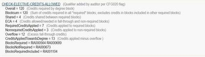
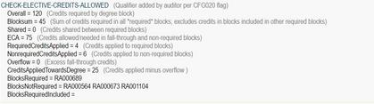
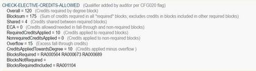

Scribe Language
The Scribe Language is used to define degree and course requirement rules in Degree Works. The two main tools in this language are rules and qualifiers. The language has its own syntax and Reserved Words and each Reserved Word has rules about its use.
Institutional requirements are entered or scribed using the Scribe function in Controller, resulting in a series of requirement blocks. These blocks are then read by Degree Works.
Blocks are user-defined and are likely to include degree, major, minor, and concentration, but may also include sets of requirements that are unique to an institution. There is no limit to the number of blocks that may be used to construct the requirements for a degree program. Degree Works determines which blocks to use for a particular student by checking standard data on the student record for degree, major, minor, or concentration.
Basic Course Rules
There are four different formats for writing course requirement rules in the Scribe language.
-
Credits
-
Classes
-
Credits and Classes
-
Credits or Classes
The syntax for the different formats is similar. The most common format is Credits. Some general comments about the course rule are as follows:
-
Each rule optionally ends with a semicolon. The semicolon helps give better messages when parse errors are found but otherwise they are ignored if found.
-
The label must be enclosed in quotation marks and is limited to 200 characters. The label will appear on the student worksheets. It is suggested that the label contain a course title or a description of the requirement, but the label can contain any information the user desires. Leading spaces in a label are not allowed. Although 200 characters are allowed, long labels may have adverse effects on the worksheet. A label tag should be on every label to help ensure exceptions do not get unhooked.
-
Carriage returns and spaces are encouraged to make the rule easier to read in Scribe. These have no effect on the appearance of the worksheets, however.
Examples of the course rule at work:
3 Credits in SPAN 101 or FRE 101
Label SPANFREN "Intro. Spanish or Intro. French";The rule will be satisfied by taking either SPAN 101 or FRE 101. A comma [,] may be used in place of the "or".
2 Classes in GEOL 200 and 201
Label GEOCAT "Geologic Catastrophes I and II";The rule will be satisfied by taking GEOL 200 and GEOL 201. A plus sign [+] can be used in place of the "and". The discipline code does not need to be repeated when the next course in the rule has the same discipline.
5:10 CREDITS IN ENGL 1@, 2@
Label ENGELECT "English Elective";The rule will be satisfied by taking five to ten credits of English at the 100 or 200 level. The colon is used to show a range of credits. An "or" could have been used in place of the comma. The @ symbol is used as a wild card. For example, 1@ means any course number that begins with the numeral one. If the school has course numbers below 100, such as 10 or 11, these courses will also be included in the 1@ range. In this case, it is best to use a range of 100:199 so that courses numbered below 100 do not satisfy this rule.
The Classes and Credits formats will accept courses linked with an "or" or courses linked with an "and", but it is not possible to use both kinds of connectors in a single course rule. For example, this is not allowed:
2 Classes in ENGL 101 and (ENGL 102 or 103)In a case like this, it would be necessary to use two Classes requirements, one for an ENGL 101 requirement and one for an ENGL 102 or ENGL 103 requirement:
1 Class in ENGL 101
Label ENGCOMP "English Composition";
1 Class in ENGL 102 or 103
Label INTRO "Intro to English Lit or Intro to Fiction";Block
A block is a set of degree requirements written in the Scribe language.
Requirement blocks are defined by the user. Most colleges will have blocks for degree, major and minor. A block consists of a block header, followed optionally by one or more rules or remarks, followed by "END.". Example: General Education requirements consist of 6 credits of Math, 6 credits of English, 6 credits of a foreign language, and a maximum of 6 pass-fail credits. In the Scribe language, this requirement is:
Begin
MaxPassFail 6 Credits
;
6 Credits In MATH @ Label “Math requirement”;
6 Credits In ENGL @ Label “English requirement”;
6 Credits In FRE @, GER @, SPA @, RUS @, CHI @
Label “Language requirement”;
End.Block header
A block header contains the degree requirements that apply to all courses satisfying rules in the block.
Keywords in the block header describe the block as a whole and are applied to the entire block, not to specific rules. The block header is composed of the word BEGIN, followed by optional block qualifiers (such as minimum grade, maximum transfer credits), followed by a semicolon. Example:
Begin
MinGPA 2.0
MaxTransfer 30 Credits
;Block type
A block type is the primary database tag, a characteristic of the block.
It describes what kind of requirements are in the block. Examples:
degree=BA
major=MATH
minor=BUSIn these examples, the block types are DEGREE, MAJOR, and MINOR respectively. The block type values are BA, MATH, BUS respectively.
Comment
A comment is a string of free-text following a pound sign or exclamation point.
Comments are entered into a requirements block as an annotation that explains something to the person maintaining the requirements block. Comments are never printed on audit output. They are for internal use only. Example:
3 CREDITS IN BIO @; #doublecheck with biology departmentCourse list
A course list is a list of required classes, where each class is represented by a course key.
Each course key consists of an academic discipline and a course number. Either the discipline or the course number can include a wildcard symbol (@). Example:
BIO 100, CHE 115, PHY 1@;Custom block
A custom block is a requirements block that is defined for non-standard student data or for a specific student.
A custom block either has a database tag of ID for a particular student or has a block type of OTHER. Examples: custom requirements for ID=12938593, requirements block for community service (block type is OTHER and block type value is COMMSERV).
Database tag
A database tag is a characteristic of the requirement block that is stored in the database.
These characteristics are used to match the requirements to the students. The database tags are: beginning catalog year, ending catalog year, college, concentration, degree, student ID, liberal learning, major, second major, minor, other, program, school, and specialization. One of these database tags is designated by the user as the primary database tag, the block type. The database tags are entered when the block is saved. They are related to the Scribe language only because the language refers to BLOCKTYPE and BLOCK, which tell the Auditor Engine which primary database tag to use when finding a requirement block for a student.
Linked block
A linked block is a requirements block referenced in another block (in a BLOCK rule).
The requirements in the linked block are later added by the Auditor Engine in place of the BLOCK rule. A linked block is useful when requirements need to be repeated in multiple blocks. For example, if both the Bachelor of Arts degree and the Bachelor of Science degree have the same foreign language requirements then three Scribe blocks could be created:
Begin
120 Credits;
# Bachelor of Arts degree requirements block
6 Credits In ART @;
1 Block (OTHER=FORLANG);
End.Begin
126 Credits;
# Bachelor of Science degree requirements block
6 Credits In MATH @;
1 Block (OTHER=FORLANG);
End.Begin
MinGrade 2.0;
# Foreign language requirements block
6 Credits In FRE @, GER @, SPA @, RUS @, CHI @;
End.Non-course
A non-course is a degree requirement, such as a recital, chapel, test, or thesis, that is not a course for which a student registers but whose completion is recorded in the student information system.
Example:
1 NonCourse (RECITAL).Remark
A remark is a free-text string that describes a requirement using natural language similar to the language of the college catalog.
Example:
REMARK "Must take either 6 credits in a foreign language or pass a test."Rule qualifier
A rule qualifier is a Scribe keyword that describes a degree requirement that applies to all courses satisfying a particular rule.
Rule qualifiers are Scribe reserved words that indicate properties of the courses used to satisfy a rule, such as minimum grade or maximum number of transfer courses. Each rule can have zero or more rule qualifiers. Example: MinGrade 2.0.
Qualifiers
Qualifiers are restrictions placed on a requirement or set of requirements. These restrictions must be met for the block to be completed.
- Header qualifiers that appear in the Header section of the block and pertain to all rules in the block body.
- Rule qualifiers that appear in the Body section of the block and pertain only to the rule with which they are associated.
Header Qualifiers
Header qualifiers appear in the block Header, which is the area after the BEGIN command and before the first semicolon.
Here are some examples of commonly used Header qualifiers:
Share 12 Credits (MINOR)This qualifier states that 12 credits of courses used within this block may also be counted against the rules in a MINOR block. This qualifier only functions if the MINOR block contains course rules that can accept the nonexclusive or shareable credits. For example, suppose a MAJOR block has this Share Header qualifier and also has a rule that states, 4 Credits in ENGL 201. If a MINOR block has a rule that can also use ENGL 201, that course will be applied to the rules in both blocks. Credits are not double counted in the overall degree however.
MinRes 30 Credits
ProxyAdvice "At least 30 credits must be taken in residence;"
ProxyAdvice "you have only taken <APPLIED> credits."In the example above, at least 30 credits must be completed in residence for the block to be complete. Classes can be used in place of Credits for this qualifier. There is also a LastRes qualifier, which requires a certain number of last credits or classes to be completed in residence.
MaxCredits 3 in PE @ Here the MaxCredits qualifier is used to restrict the number of PE credits that will be accepted as satisfying course requirements in the block. If a student takes four 1-credit classes of PE, the fourth 1-credit class will appear in the Over-the-Limit section of the student's worksheet. Scribe also includes a MinCredits qualifier that works analogously.
MaxCredits 0 in @ 0@Here the MaxCredits qualifier is used to disallow any credits in any discipline numbered below 100. The wildcard @ is used in two ways. The first wildcard stands for any course discipline. The second wildcard stands for any number.
MinGrade 2.5In this example, any class with a grade less than 2.5 will not satisfy the course requirements in the block. Note that this is a stronger qualification than MinGPA because individual classes are disqualified from applying to requirements.
Rule Qualifiers
Most rule qualifiers appear after the list of courses in a Course rule and before the label.
It is required that a single space separate the last course number in the course list from the first qualifier, and that single spaces separate the qualifiers. For ease of reading, however, it is suggested that scribers use the Enter key to separate the course list from the qualifiers and the qualifiers from each other. The following are some examples of commonly used Rule qualifiers in an easily readable format:
3 Credits in PE @
Except PE 190, 192, 241, 285, 290
Label "3 Credits of Physical Education Activity Classes";The rule will be satisfied by taking three credits in any PE classes except those listed after the Except qualifier.
15 Credits in HIST @
Including HIST 121
Label "15 Credits of History";The rule will be satisfied by taking 15 credits in any history classes, but HIST 121 must be included in the 15 credits.
15 Credits in ART 100:199,
DRAMA 150, 160, 170,
ENGL 161, 2@,
MUS @,
PHIL 101, 115, 121, 202,
SPAN 101:103
MinSpread 3
Label "Humanities";The rule will be satisfied by taking 15 credits from the list including at least one class from three different disciplines. A student who took 15 credits of 200-level English classes and no others from the list would not satisfy the requirement because of the MinSpread qualifier. (Note that the colon in the class list designates a range of classes, so 101:103 means 101, 102, or 103.)
1 Class in BIOL 101
ShareWith (THISBLOCK)
Label "Introductory Biology";Biology 101 satisfies this course rule. Ordinarily, Degree Works uses a default setting of Exclusive (DontShare) for all rule statements. This means that a course can satisfy only one rule. Because of the ShareWith qualifier in this example, however, BIOL 101 can also be applied against another course requirement within this block. For example, if there is another requirement in another part of the block that includes BIOL @ in the course list, then BIOL 101 will be used to satisfy that rule as well.
AdviceJump
AdviceJump can be used to allow Degree Works users to link to a web page of information, such as a list or description of courses with specific attributes associated with them. AdviceJump has been set aside as a standard RuleTag value to be used in conjunction with Proxy-Advice.
When used as in the example below, the web audience will be presented with advice that is actually a link to another web page of information.
16 Credits in @ (WITH HONR=Y)
RuleTag AdviceJump="http://myschool.edu/catalog/UpperHonors.html"
ProxyAdvice "16 Credits of upper-division Honors courses are required."
Label "Honors Requirement";When your URL is too long for one line, you can break it up like this:
5 Credits in @ (WITH Attribute=WRIT)
Ruletag AdviceJump="http://myschool.edu/catatlog/"
Ruletag AdviceJump="englishdepartment/writing.html"
ProxyAdvice "Click here to see classes that meet this requirement."
Label "Writing Requirement";When the user clicks on the advice text in the audit, they will be transferred to the specified web page for more information. This other web page can provide the user with a list of the current set of courses that will satisfy the requirement along with any pre-requisite and descriptive information that can be used to help advise the student.
The token AdviceJump is case sensitive: ADVICEJUMP, advicejump, and Advicejump will not work. The name of the web page to the right of the equal sign in the scribed rule is usually also case sensitive, but the necessary format of the web page name ultimately depends on the web server your institution is using. Be sure to check with your IT staff to find out the exact name of the files to which you will direct your students.
If your .html files are located somewhere other than where your Degree Works web server files are located, your RuleTag values need to have the full path or relative path to the html page being referenced.
RuleTag can be used to associate any other piece of information with your rules, and the RuleTag code specified can then be trapped in any tool consuming the XML or JSON audit to give special meaning to certain rules. Using AdviceJump with RuleTag here is merely one example of the power of RuleTag.
RemarkJump
Use RemarkJump to allow the user to link to any other place on the internet.
Like AdviceJump, you can use RemarkJump to allow the user to link to any other place on the internet. In this case, however, the rule must have a Remark associated with the rule where the RuleTag is placed.
2 Classes in EVA 101 , RORY @, ELENA @
RuleTag RemarkJump="http://some.place.edu/ontheinternet/anywhereisfine/"
RuleTag RemarkJump="support/getmemoreinfo.html"
RuleTag RemarkHint="More info on Gen Ed option-a"
Label "Gen Ed option A";
Remark "You can click this link to find out more information";
Remark "about this requirement.";In the example above, two RemarkJump RuleTags are used because the URL is so long. The values in quotes in each of the RuleTags are concatenated together.
You can optionally specify a RemarkHint RuleTag to give your user a small pop-up hint when the mouse is placed over the remark. Again, you can specify one or more RemarkHint RuleTags.
To add this same functionality to the header remarks you make use of the HeaderTag instead:
Begin
30 Credits
HeaderTag RemarkJump="http://some.place.edu/ontheinternet/anywhereisfine/"
HeaderTag RemarkJump="support/getmemoreinfo.html"
HeaderTag RemarkHint="More info on Gen Ed requirements"
;
Remark "You can click this link to find out more information";
Remark "about the General Education requirements.";The AdviceJump can only be used while the rule is not complete. When the rule is complete, the advice and the link go away. With RemarkJump, however, the link is always available because the Remark text appears on the worksheet regardless of whether the rule is complete.
Block types and multi-block programs
There are several block types. The requirements for a degree can be broken up into more than one block using the Block rule.
The Available Block Types are ATHLETE, AWARD, COLLEGE, CONC, DEGREE, LIBL, MAJOR, MINOR, OTHER, PROGRAM, REQUISITE, SCHOOL, SPEC, and ID.
-
DEGREE blocks usually specify degree requirements, such as total credits, residency, and GPA. DEGREE blocks usually call in MAJOR blocks and OTHER blocks.
-
COLLEGE, CONC, LIBL, MAJOR, MINOR, PROGRAM, SCHOOL, SPEC, and ID blocks can be used to best fit your institution’s requirements.
-
OTHER blocks are generally used for General Education requirements and Core requirements that are common among several blocks.
- ATHLETE blocks are generally used for Athletic Eligibility requirements. These blocks are called in automatically into the Athletic Eligibility audit formats.
-
AWARD blocks are generally used for Financial Aid requirements. These blocks are called in automatically based on the AWARD records found on the database.
- REQUISITE blocks define course prerequisites and co-requisites and are used by the prerequisite checking processes for the Student Educational Planner and Banner registration.
The requirements for a degree can be broken up into more than one block using the Block rule. For example, an Associate of Arts (AA) degree may consist of three sections of requirements: basic requirements, distribution requirements, and general electives. These three sections can be divided into three separate blocks. The main block will have a Block Type tag of DEGREE and will have a Value tag of AA (the Associate of Arts program code). The main (Degree) block, however, will not contain all the requirements necessary for completion of the AA degree. The distribution requirements and general elective requirements will each reside in unique blocks, which will then be called from within the main (Degree) block. These unique blocks will be Block Type OTHER and could have the Value tags of DISTRIB and ELECT respectively. The example below provides an illustration of this setup (you are viewing the Degree block):
BEGIN
90 Credits
MinGPA 2.0
;
1 Class in ENGL 111
Label "English Composition I";
1 Class in ENGL 112
Label "English Composition II";
1 Class in MATH 101:238
Label "Math Requirement";
1 Block (OTHER = DISTRIB)
Label "Distribution Requirements";
1 Block (OTHER = ELECT)
Label "Elective Requirements";
END.Notice that the main (Degree) block contains some of the requirements for the degree but not all. The other requirements are scribed in the DISTRIB and ELECT blocks, which have been created as separate blocks. These blocks are called from the main AA Degree block and, as such, are included as part of the AA degree requirements. Also note that there is a Header qualifier of minGPA 2.0 in the main (Degree) block. This qualifier also applies to requirements in the DISTRIB and ELECT blocks even though those blocks may or may not contain the minGPA qualifier.
What are the advantages of using more than one block for a degree? Individual blocks provide more structure for the worksheets. The audit reports include a heading for each block, then contains the credits applied and the GPA for the course requirements in that block. Use of multiple blocks for one degree allows the user to apply Header qualifiers to the contents of an OTHER block without affecting the rest of the degree requirements. For example, in the Associate of Arts degree described above, it may be the case that there are a maximum of five credits of performance and studio classes allowed in the distribution requirements section, but these classes may be allowed without restriction in the general electives section. This restriction for the distribution requirements section can be translated into the Scribe language by including a MaxCredits qualifier in the header of the DISTRIB block, which then restricts these requirements only in the DISTRIB block.
OTHER blocks are also useful in consolidating Scribe language. For example, it may be the case that many degree programs use the same set of elective requirements. These requirements may involve long lists of classes. If the list of classes changes, then all the blocks containing the elective requirements would need to be modified. An alternative solution would be to store the elective requirements in an OTHER block and include Block rules in the blocks that use the requirements. Now the list of courses exists in only one block, so the process of modifying the list is much less time consuming.
Comments
Any line in a Scribe block that begins with the symbols # or ! is a Scribe comment. Scribe comments are ignored by the parser and the auditor. These comments are for scribers’ eyes only.
By convention, many scribers include one or more comment lines at the beginning of a block, which list the database tags for the block. Another use of Scribe comments is as internal documentation. The person who scribes the block knows why the qualifiers and rules were entered in a particular way, but this logic is not always evident to a person reading the block for the first time. Comments such as, #This qualifier enforces the maximum three credits in PE rule, or, #At least one class must be a laboratory class, make the block more readable to others.
Proxy-Advice
Proxy-Advice was designed to remove the default advice on worksheets (what the auditor places based on Scribe code) and replace it with something more friendly and college-related, if needed.
An example could be a thesis requirement using a NonCourse. The advice the auditor gives to students and staff is Still Needed: 1 NonCourse (Thesis). This advice, however, may not use terminology that is common to a particular campus. It would make more sense to a student for the auditor to provide Still Needed: Your Completed Thesis Statement advice instead. With Proxy-Advice, we can accomplish this modification. Here is an example of how to write Proxy-Advice.
1 Noncourse (Thesis)
Proxy-Advice "Your Completed Thesis Statement"
Label "Thesis Requirement";If you need to display a large amount of advice, Proxy-Advice can be used more than one time. Within the quotes, you can include up to 200 bytes of text. If your desired advice exceeds this amount, simply scribe "Proxy-Advice" again on the next line of the block and continue scribing your advice. The text from each line will concatenate.
12 Credits in ENGL @ (With Attribute = HONR)
Proxy-Advice "You need <REQUIRED> credits of English honors coursework. You have taken <APPLIED> credits "
Proxy-Advice "and need <NEEDED> more."
Label "English Honors Requirement";The<REQUIRED>, <APPLIED>, and <NEEDED> can be used only on course rules and on header Min qualifiers, which are replaced by the number of credits or classes required, applied, and still needed. In the example above, you could use 12 instead of <REQUIRED>, but if an exception is placed on this rule to reduce the credits to 10, the advice still says 12. By using <REQUIRED>, the advice correctly shows 10 because that is the new number of required credits.
Some other examples of using Proxy-Advice:
BEGIN
40 Credits
ProxyAdvice "<REQUIRED> credits are required in this major – you still need <NEEDED> credits more."
LastRes 10 Credits
ProxyAdvice "The last 10 credits in this major must be taken here."
MinGPA 2.5
ProxyAdvice "You need a <REQUIRED> GPA in this major – your current major GPA is <APPLIED>."
;
If (THESIS <> PASSED) then
RuleIncomplete
ProxyAdvice "You need to submit a thesis in order to graduate."
Label "Thesis Requirement";
1 NonCourse (RECITAL >= 4)
ProxyAdvice "You need to get a score of 4 or more on your recital."
Label "Recital Requirement";
END.Remarks
Remarks allow for additional narrative descriptions in some worksheet formats.
Worksheet reports include course information and advice for completing rules for a degree.
A line containing a remark starts with the reserved word Remark. The remark is enclosed in quotation marks, and a semicolon may optionally follow the closing quote. Each remark line can contain a maximum of 200 characters enclosed in the quotation marks. Successive remark lines will be concatenated in the worksheets. Remarks are not entered in the block Header. A remark entered immediately after the first semicolon of the block will appear in the Header section of the worksheets. Here is an example of how to scribe remarks:
1 Class in ENGL 101
Label "Freshman English Composition I";
Remark "English 101 is a prerequisite for many classes at Ellucian U "
Remark "Students are advised to take this class as early in their college "
Remark "careers as possible."Remarks add information to the worksheets, but they come at a price. They make the worksheets more cluttered and harder to navigate. When designing Scribe blocks, this trade-off should be taken into account. Trial and error is a good method for adding remarks to a block: Add a remark to a block, save the block, and then run a worksheet with the new remark; evaluate the results and make the changes as necessary.
Variable to Text Addition
You can use Degree Works variables to display custom data pulled from your student system into text that appears in the worksheet.
A variable is a tag you place in a Label, Remark, ProxyAdvice, or Display text. The variable you specify is replaced with the value found for the codes set up in UCX-SCR002 and UCX-RPT046 and any goal information you bridged, such as MAJOR, MINOR, and so on.
Label and ProxyAdvice example:
If (NumRecitals >= 3) then
RuleComplete
Label NUMREC3 "You have completed <NUMRECITALS>"
Else
RuleIncomplete
ProxyAdvice "You need at least 3 recitals but currently you"
ProxyAdvice "have only <NUMRECITALS>"
Label NUMREC3 "You need at least 3 recitals";You can also add variables to your Remark. For example:
Remark "Your academic standing is <ACADSTANDING>"You can also add variables to your Display. For example:
MinCredits 12 in @ (With DWAttribute=TROY)
Display"Your special status is <SPECSTATUS>"
ProxyAdvice "Some interesting advice"You can have multiple variables in your text. For example:
Label "Your major is <MAJOR> and your standing is <ACADSTAND>"Please note that the exact text replaces your variable. No lookup of the code will be done. For example, if your variable is ADMITTERM, the actual admit term code will be used. Your users will see a value of 201801, for example, and not Fall 2018. If you want the description of the code, you need to bridge that description and set up a special RPT046 entry. In this case, you might set up an ADMITTERMDES record that holds the description of the term.
If you specify a variable that does not exist for any particular student, the variable is left as it is. You either need to ensure all students get this code bridged or set up an IF-statement to check to see if they have the code and only then use the variable in the text as shown here using:
If (NumRecitals = NODATA) then
RuleIncomplete
ProxyAdvice "You don’t have any recitals on record"
Label NUMREC3A "You need at least 3 recitals";
Else If (NumRecitals >= 3) then
RuleComplete
Label NUMREC3B "You have completed <NUMRECITALS>"
Else
RuleIncomplete
ProxyAdvice "You need at least 3 recitals but currently you"
ProxyAdvice "have only <NUMRECITALS>"
Label NUMREC3C "You need at least 3 recitals";A special tag, <DWECA>, can be used in your text to show the elective credits allowed in your worksheet. This variable does not have to be set up in SCR002. When you have CFG020 DAP14 Calculate elective credits allowed enabled, this variable will get replaced with the number of allowed elective credits the auditor has calculated. This value matches what you see in the Diagnostics Report under the CHECK-ELECTIVE-CREDITS-ALLOWED qualifier in the ECA value. For example, if the student needs to take 12 elective credits to meet the minimum number of credits required by the degree, you might add a Display line as part of your Credits qualifier in the degree block and the <DWECA> will be replaced with 12.
Display "You have taken <APPLIED> credits. You are able to take up to <DWECA> elective credits." Group Rule
The Group rule allows the scriber to scribe more complicated degree requirements that cannot be handled with simple course lists.
For example, suppose that a degree requires a three-course sequence in either Spanish or Chinese. Review the following course rule:
3 Classes in SPAN 101 or 102 or 103 or CHIN 101 or 102 or 103
Label "Language Requirement";This approach will not work because a student would be allowed to take two quarters of Spanish and then one quarter of Chinese or two quarters of Chinese and one quarter of Spanish. The degree requires three quarters in the same language.
The following is another example of the course rule:
3 Classes in (SPAN 101 and 102 and 103) or (CHIN 101 and 102 and 103)
Label "Language Requirement";This approach will not parse because Scribe does not allow the Reserved Words "and" and "or" to be mixed within a course rule.
The Group rule is the easiest solution:
1 Group in
(3 Classes in SPAN 101 + 102 + 103
Label "Three Quarters of Spanish") OR
(3 Classes in CHIN 101 + 102 + 103
Label "Three Quarters of Chinese")
Label "LANGUAGE REQUIREMENT"; ##Master Labels are typically scribed in upper caseIn worksheets, the Group label appears above or to the left of the course requirements just as the BeginSub label does with the BeginSub rule. As with the BeginSub rule, it is suggested that you scribe Group labels in upper-case letters to distinguish them from the Rule labels that are contained within the Group.
Label Tags
Recommended Tag Values
The best tags are those that reduce the chance of being changed in the future. Recommendation: use an alias or a random value; do not use numbers.
It is a common practice to use sequential numbers of 1, 2, 3, etc for each of your rules. Although you can use numbers as your label-tags it is not a good idea. The problem with this is that when a new rule is inserted or if the rules are reordered it is human nature that the scriber will want to renumber the label-tags so that they are again in sequential order. This, of course, will cause serious problems with your exceptions. The exceptions will either become unhooked or they will apply to incorrect rules.
Another option might be to use the course name for simple requirements.
1 Class in MATH 123
Label MATH123 "Algebra II";The problem with this is if this course is renamed to MATH 134 then the scriber will most likely change the label-tag and that will cause all exceptions to be lost.
A better approach is to use a tag like ALGEBRA2 because that is what the requirement is regardless of the specific course on the requirement.
1 Class in MATH 123
Label ALGEBRA2 "Algebra II";This also works well when multiple courses are listed on the requirement such as on this example:
6 Credits in HIST 109, 114, 134, 135, 2@
Label EUROHIST "European History";The best approach is to use a value that you can just about guarantee nobody will change. It is important the tag is never changed regardless of how much the contents of the requirement changes. But of course, if the requirement changes drastically you will have to ask yourself if it is still the same requirement or a new one. If it is the same requirement then you need to keep the same label-tag. To ensure this will not be changed the best option is to use a random-like value that has no meaning whatsoever. For example:
1 Class in MATH 123
Label 9E23J "Algebra II";When the label text or the course list changes this label-tag should not be changed. Label-tags in groups or subsets do not need to have any similarity to the other tags in the same group or subset; each can be a random value that is quite different from the others in the group or subset.
Qualifier Tags
Change of Catalog Year
The auditor can attempt to find the corresponding requirement in the new block of the same type/value if you make sure like-requirements in the set of blocks have the same label-tag or qualifier tag.
Exceptions are tied to the block ID of the block on which the exception was originally placed. The auditor uses the block ID to find the correct block on which to place the exception. This is a problem when a student changes catalog years, however, because a new block with a different block ID will be pulled into the audit. For example, an exception may have been originally placed on a MAJOR=CHEM block with block ID RA000123. At some point later the student’s catalog year changes. When a new audit is run the student may still get a MAJOR=CHEM block but the new one for the new catalog year may now be RA000456. The exceptions for the student were originally placed on block RA000123 so now the exceptions will be lost. Though, not necessarily.
The auditor can attempt to find the corresponding requirement in the new block of the same type/value if you make sure like-requirements in the set of blocks have the same label-tag or qualifier tag. For example, in these MAJOR=CHEM blocks there is a Chemistry Elective requirement. If you want any exception made to one requirement to apply to the corresponding requirement in the other block when a student changes catalog years then use the same label-tag on the requirements. The label-tag can be an alias like CHEMELECTIVE – like this:
9 Credits in CHEM 2@, 3@
Label CHEMELECTIVE "Chemistry Elective";By using the same label tag you are now tying the exception to a MAJOR=CHEM block with a label-tag of CHEMELECTIVE and not to a specific block ID.
You can use numbers or letters as your label tag as the example below shows. As long as the label tag in one block matches the label tag of the corresponding rule in the block of the same type and value the software will know that the exception can be applied to the matching rule. Label tags of CHEMELECTIVE or 15 are equally valid label tags. However, it is strongly recommended that you use text-based alias values like CHEMELECTIVE instead of numbers because it is very easy to lose track of which number is the alias for which rule and it is too easy for users to renumber the tags to keep them in order. Using an alias increases the likelihood that corresponding rules in like-blocks will have the same value.
9 Credits in CHEM 2@, 3@
Label 15 "Chemistry Elective";Be sure to set the UCX-CFG020 DAP14 Apply Exception to Same Block Type flag to Y to use this feature, or to N if you do not want the auditor to try to find like-requirements in new blocks. However, you may find that using a numeric label-tag like 15 above is not trustworthy because it is too easy for the wrong rule in another MAJOR=CHEM block to also have 15; perhaps the corresponding rule in the other block instead has a label-tag of 13. If you do chose to use numeric label tags, you may want to set the UCX-CFG020 DAP14 flag to A instead. This allows exceptions to be placed on the corresponding rule in another block of the same type but only when the label-tag or qualifier tag contains at least one alphabetic character (A-Z). Using the A option, you are telling Degree Works to only do this when your rules and qualifiers have aliases.
Change of Major
As with Change of Catalog Year, exceptions are tied to the block ID of the block on which the exception was originally placed.
It is common for students to change majors wherein the new major is quite similar to the old major. One example of this is when a student is assigned an intended major before they are accepted into the declared major. For example, the student may be assigned the pre-nursing major before they are assigned the real nursing major. Another example might be when a student moves from the marketing major to the business major wherein both share many of the same requirements. When this change of major occurs you may want the exceptions that were applied to the first major to apply to the similar second major.
For exceptions to apply to the new major the auditor needs to find a rule in the new block that has the same rule or qualifier tag as that on the original block. Simply using rule tag names that are identical between major blocks allows the exceptions to apply to the new block. The auditor knows that you consider two blocks to be similar based on the UCX-STU023 Similar major field. For more information, see the UCX-STU023 Student Major Codes topic.
Additionally, the UCX-CFG020 DAP14 Apply Exception to Same Block Type flag must be set to Y or A for the auditor to attempt to find a similar block in the student’s audit. However, the auditor takes this step only if the same major with a different catalog year is not found.
Course Title as the Label
For single course requirements, it is common to use the course title as the label text.
For example:
1 Class in ENGL 101
Label KLJEA "College Composition I";
1 Class in ENGL 102
Label AWFLK "College Composition II";The issue arises when the title of the course is changed. You now need to find all of the places where this title is used and make the change. This often happens on many courses in each new catalog. This can be quite a chore.
To avoid the maintenance headache you may want to use the <COURSETITLE> tag inside of your label like this:
1 Class in ENGL 101
Label KLJEA "<COURSETITLE>";
1 Class in ENGL 102
Label AWFLK "<COURSETITLE>";This tag tells the parser to use the title of the first course listed as the label. When course title changes occur in your student system you need to bridge the changed courses to Degree Works and reparse all of your blocks using DAP16 in Transit. After this point, any new audits run will show the new titles in the labels.
You may also choose to show the course credits as part of the label. For this you can use the <COURSECREDITS> tag in the label with or without the <COURSETITLE> tag.
1 Class in ENGL 101
Label KLJEA "<COURSETITLE> - <COURSECREDITS> credits";
1 Class in ENGL 102
Label AWFLK "<COURSETITLE> - <COURSECREDITS> credits ";The <COURSECREDITS> will not pull in both the starting and ending range values for a variable credit course; only the starting credit value is used. If your course might be a variable credits course then you may not want to use <COURSECREDITS>. If you scribe "<COURSECREDITS> credits" and it turns out that the course is only a one credit course then you will see "1 credits". For this reason, it is best not to use <COURSECREDITS> for courses that might be single credit courses. If the course is worth just a single credit, the text will come out as "1 credits" so you may want to consider that situation when setting up your labels.
You may list more than one course when using <COURSETITLE> and <COURSECREDITS>, but only the title and credits from the first course will be used. This is a valid situation where you may want to list more than one course:
1 Class in MATH 122, {Hide BUSN 132}
Label IOWUER "<COURSETITLE>";Here you are hiding the second course so there is no reason for you to want to show both course titles.
The parser does allow you to scribe multiple courses like this but again, only the title from the first course will be pulled into the title.
1 Class in HIST 209, 211
Label OPQER "<COURSETITLE>";The parser also allows you to use a wildcard or range as the first course but when you do this, no title will exist.
1 Class in HIST 2@
Label 34OPI "<COURSETITLE>";When this occurs, the label will appear as <COURSETITLE> on the worksheet. This same label will appear in the worksheet if the first course listed is not found to be a valid course in the rad_course_mst.
When a substitution or any other exception is applied, the label will not get changed to reflect the new course; the title and credits associated with the course that was originally scribed is what will be used in the label.
When equivalences are processed by the parser the title of the new course will be used. For example, you may have scribed this:
1 Class in SCR 123
Label LIV5MANU0 "<COURSETITLE>";If the equivalence table has SCR 123 equated to FUT 123 the parser will change the rule to use FUT 123 and the title that gets placed in the label will be for FUT 123 and not SCR 123.
This substitution of the label title and credits will occur only if your UCX-CFG020 DAP13 Validate Courses flag is enabled.
Max Header Qualifiers
When the auditor attempts to enforce the maximum number of credits specified on a header qualifier one of the steps includes a check for marginal credits.
This is when the auditor finds that the removal of a class from the block will bring the credits applied to the qualifier below the maximum specified. The class is considered marginal because it is bordering the maximum: keeping the class exceeds the maximum while removal of the class brings us below the maximum.
It might be the case that this marginal check causes the auditor to not choose the right classes according to what you believe should happen. If you want the auditor to skip this marginal check, you can add a DECIDE operator as follows:
MaxCredits 9 (Decide = SOMEKEY) in ENV 115, MATH 198, @ @ (With Attribute=SCI)If the DECIDE key is in UCX-SCR045 then the auditor will perform the checks following the settings in the UCX-SCR045 record. If the DECIDE key is not in the UCX then the marginal step is still skipped but no decisions will be made based on those flags. However, what will happen instead is that the auditor will first start comparing the match levels (aka priority) of each class on the rules in the block. If no decision is made, because the classes being compared have the same match level, then the auditor will continue on with other comparisons such as credits and total fits etc. The SOMEKEY, as shown above, can be anything in this second scenario but we recommend using something meaningful like PRIORITY so that it means something to you.
Max Zero
Often you want to completely exclude certain classes from the audit. To do this you can specify zero credits or classes in a Max qualifier in the degree block.
Classes matching the qualifier will be placed in the over-the-limit section and will not count. For example, to exclude all remedial classes below 100-level you can do this:
MaxClasses 0 in @ 0@ # throw out classes with course numbers starting with a 0You can do the same thing for classes with certain attributes:
MaxCredits 0 in @ (With Attribute=DEVL) # throw out developmental classes However, if there are some classes you want to keep you can use Except list:
MaxClasses 0 in @ (With Attribute=DEVL) # throw out developmental classes
Except MATH @ # but keep the MATH developmental classesFurthermore, specifying 0 in your degree qualifiers like this also ensures that failed classes will also not count in the GPA. Failed classes that match your zero qualifiers will be sent to over-the-limit and will not be placed in insufficient and therefore will not count in any GPA calculations.
However, if your policy is to only throw out the passed classes but to count the failed classes in the GPA you can certainly exclude those failed classes like this:
MaxClasses 0 in @ (With Attribute=DEVL) # throw out developmental classes
Except @ (With DWPassed=N) #ignore the failed devl classesThis actually applies to any class that was targeted to go to the insufficient section, not just failed classes.
If you have a Max 0 qualifier within an IF-statement that is testing a course, the auditor will skip the Max qualifier when it does this evaluation. This is because we have not yet resolved this IF-statement to TRUE or FALSE – it is a timing issue.
This qualifier will put all XYZ classes into over-the-limit but it will not put the failed XYZ classes into over-the-limit – these failed classes will end up in the insufficient list.
If (MATH 123 was Passed) then
MaxClasses 0 in @ (With Attribute=XYZ)However, this will work fine because the IF-statement has been resolved already. The WHO failed and passed classes will end up in over-the-limit:
If (Major = CHEM) then
MaxClasses 0 in @ (With Attribute=WHO)Sharing
The Scribe language provides two reserved words, DontShare (aka Exclusive), and ShareWith (aka NonExclusive), that can be used to control how the auditor will apply courses to rules.
ShareWith can be a block header qualifier or a rule qualifier. DontShare can be a rule qualifier or a block qualifier in blocks that have ShareWith as a block qualifier.
The auditor applies courses taken by a student against requirements for the degree sought by the student. The requirements come from the requirement blocks created in Scribe using the Scribe language. When applying courses to rules, the auditor default is to use a course one time to satisfy only one rule. In other words, each course is applied to a rule in an exclusive fashion.
ShareWith can be used to tell the auditor that a particular rule or block of rules should not be treated exclusively so that classes can be shared between requirements. Any course applied to a ShareWith block or rule can also be applied to additional blocks and rules. All rules in a block with a ShareWith block qualifier are nonexclusive unless qualified with the DontShare rule qualifier. ShareWith an be a block header qualifier or a rule qualifier.
DontShare indicates that the credits or classes applied by the auditor towards satisfying a rule cannot be used to satisfy exclusive requirements in other blocks or in other rules in the same block. A course applied to a DontShare rule is applied only to that rule (if it is the best fit) and to no other exclusive rule. All rules in an exclusive block are exclusive unless qualified with the ShareWith rule qualifier. DontShare can be a rule qualifier or a block qualifier in blocks that have ShareWith as a block qualifier.
Example of an exclusive block with all exclusive rules
BEGIN
36 Credits #By default, all rules in this block are exclusive
; #unless the rule Qualifier ShareWith is used
12 Credits in SOC 300:499; #this rule is exclusive
12 Credits in PSY 300:499; #this rule is exclusive
12 Credits in HIST 300:499; #this rule is exclusive
END.Example of a sharing block with all sharing rules
BEGIN
36 Credits
ShareWith (ALLBLOCKS) # ALL rules in this block can share unless the
; # rule Qualifier DontShare is used
12 Credits in SOC 300:499; #this rule can share
12 Credits in PSY 300:499; #this rule can share
12 Credits in HIST 300:499; #this rule can share
END.Example of a sharing block with one exclusive rule
BEGIN
27 Credits
ShareWith (ALLBLOCKS) # All rules in this block can share unless the
; # rule qualifier DontShare is used
9 Credits in RIO 100:299; #this rule can share
9 Credits in CHE 100:299; #this rule can share
9 Credits in PHY 100:299 DontShare ; #this rule cannot share
END.Example of an exclusive block with one nonexclusive rule
BEGIN
12 Credits # By default, all rules in this block are exclusive
; # unless the rule qualifier ShareWith is used
4 Credits in SOC 300:499; #this rule cannot share
4 Credits in PSY 300:499 ShareWith (MAJOR); #this rule can share
4 Credits in HIST 300:499; #this rule cannot share
END.The ShareWith reserved word must be followed by a scope. The scope indicates to which blocks the courses can be applied again. The auditor will apply a course to as many ShareWith rules as possible and to ONE exclusive rule. The scope defines where the auditor looks for the rules to which the course can be applied. The scope can be one of the following:
| Scope | Auditor applies course to |
|---|---|
| ALLBLOCKS | rules in this block and rules in all blocks |
| COLLEGE | this block or rule and rules in the COLLEGE block(s) |
| CONC | this block or rule and rules in the CONC block(s) |
| DEGREE | this block or rule and rules in the DEGREE block(s) |
| LIBL | this block or rule and rules in the LIBL block(s) |
| MAJOR | this block or rule and rules in the MAJOR block(s) |
| MINOR | this block or rule and rules in the MINOR block(s) |
| OTHER=value | this block or rule and rules in the OTHER=value block(s) |
| PROGRAM | this block or rule and rules in the PROGRAM block(s) |
| SCHOOL | this block or rule and rules in the SCHOOL block(s) |
| SPEC | this block or rule and rules in the SPEC block(s) |
| THISBLOCK | rules in this block |
If the scope is COLLEGE, CONC, DEGREE, LIBL, MAJOR, MINOR, OTHER, PROGRAM, SCHOOL, or SPEC then the auditor determines that a block is within the scope by checking the block's primary database tag against the scope. For OTHER, the auditor also checks the primary database tag's value (e.g. OTHER=GENED). For ALLBLOCKS the primary database tag is not checked -- all the blocks being audited for the student are within the scope. For THISBLOCK the primary database tag is not checked -- only rules in the current block are within the scope.
The number of credits or classes optionally specified after the DontShare or ShareWith reserved word is used as an upper limit by the auditor. For example, if the rule qualifier is ShareWith 10 Credits (Major) then the auditor will apply the same courses to this rule and rules in the Major block up to the limit of 10 credits. If the number of credits/classes is not specified after DontShare or ShareWith then all of the credits/classes applied to the rule can be applied by the auditor to the scope. The courses applied to the rule that exceed the number of credits/classes associated with the DontShare rule qualifier are treated nonexclusively by the auditor. If ShareWith is followed by a number of credits/classes then the courses applied to the rule that exceed that number are treated exclusively by the auditor. In other words, the remaining credits/classes, are treated the opposite of the qualifier used.
Here are some examples:
BEGIN
36 Credits #By default, all rules in this block are exclusive
; #unless the rule qualifier ShareWith is used
REMARK "Example of an exclusive block with one partially sharing rule";
REMARK "and one totally sharing rule";
9 Credits in SOC 300:499
Label "I don’t like to share"; # this rule is totally exclusive
9 Credits in PSY 300:499
ShareWith 6 Credits (MAJOR)
Label "I will share some credits"; # sharing 6 credits, 3 credits exclusive
9 Credits in MAT 300:499
ShareWith (MAJOR) # this rule can share
Label "I will share all of my credits";
9 Credits in HIST 300:499
Label "I don’t like to share"; # this rule is totally exclusive
END.BEGIN
36 Credits
ShareWith (ALLBLOCKS) # All rules in this block share unless the
; # rule qualifier DontShare is used
REMARK "Example of a nonexclusive block with one partially exclusive rule";
REMARK " and one totally exclusive rule";
9 Credits in BIO 100:299; #this rule is totally sharing
9 Credits in CHE 100:299; #this rule is totally sharing
9 Credits in PHY 100:299
DontShare 6 Credits; #6 credits exclusive, 3 credits sharing
9 Credits in MAT 100:299 EXCLUSIVE; #this rule is totally sharing
END.The auditor applies the student's courses to the requirements in a series of passes through the rules. In the initial pass, the courses are applied to all the rules where they might fit. In the second pass, the auditor determines the "best fit" and removes courses that do not fit when rule qualifiers, block qualifiers, and exclusivity are applied. Unless ShareWith is specified, each course can be applied to only one rule.
If a course matches more than one rule, the auditor checks each rule to see if it can share. If both rules to which a course applies are exclusive, the auditor determines the best fit by examining the options for each rule. A rule with multiple courses listed has more options than a rule with only one course listed. A rule with wildcards has more options than a rule with ranges. A rule with ranges has more options than a rule with specific course keys (course key = discipline + course number). The auditor will apply the course to the rule with the fewest options as long as the total number of credits/classes for the rule are not exceeded and rule qualifiers are not violated.
If a course matches more than one rule and one or both rules are sharing then the auditor checks the scope of the rules. If they are in the scope specified with ShareWith then the course is applied to both rules. If not, then both rules are treated as if they are exclusive and the course is removed from one of the rules according to the "best fit" algorithm described above.
If two courses match the same rule but only one of the courses can be applied in order not to exceed the number of credits/classes then the auditor determines which course to remove. First it will remove courses that fit another rule. If a tie still exists, it will remove the course that was listed with a wildcard or range, keeping the exact fit (course key with no wildcards or ranges). If a tie still exists, it will use the tiebreak configuration settings that indicate the institution's preferences (keep the oldest term, most recent term, best grade, most credits, highest course number, etc.) If there is still a tie then the auditor arbitrarily removes one of the courses.
The actions of the auditor can be explained best by examples.
Example 1: Exclusive Block with no Sharing Rules
Exclusive Block with no Sharing Rules.
BEGIN
24 Credits
;
2 Classes in HIST 100 + 115; #this rule is EXCLUSIVE
6 Credits in HIST 200:299; #this rule is EXCLUSIVE
3 Credits in HIST 310, 340; #this rule is EXCLUSIVE
9 Credits in HIST @; #this rule is EXCLUSIVE
END.The student being audited has taken (and passed) HIST 100, HIST 115, HIST 250, HIST 280, HIST 310, and HIST 340. Each course is worth 3 credits. In an initial pass through the student data and the requirements, the auditor temporarily assigns each course to every rule that includes the discipline and course number. The results of the initial pass are not seen by the end-user but are shown below as an example of how the auditor works.
| Rule | Courses Applied in Initial Pass |
|---|---|
| 2 Classes in HIST 100 + 115; | HIST 100, HIST 115 |
| 6 Credits in HIST 200:299; | HIST 250, HIST 280 |
| 3 Credits in HIST 310, 340; | HIST 310, HIST 340 |
| 9 Credits in HIST @; | HIST 100, HIST 115, HIST 250, HIST 280, HIST 310, HIST 340 |
The auditor then checks rule qualifiers, block qualifiers, and exclusivity. For exclusivity, the auditor determines if a course can be applied to more than one rule. This is done by checking if the rule is exclusive or sharing. In this example, all the rules are exclusive. Therefore, each course can be applied to only one rule.
The auditor removes courses that were initially applied to more than one rule. The determination of where to keep the course is based on a combination of factors: the number of credits/classes specified, rule qualifiers, block qualifiers, and best fit. The results of the second pass are shown below, and because this example has no rule or block qualifiers that could change the results, are the results the end-user would see on an audit report.
| Rule | Courses Applied |
|---|---|
| 2 Classes in HIST 100 + 115; | HIST 100, HIST 115 |
| 6 Credits in HIST 200:299; | HIST 250, HIST 280 |
| 3 Credits in HIST 310, 340; | HIST 310 |
| 9 Credits in HIST @; | HIST 340 |
The auditor did not apply any course to more than one rule. A choice was made between HIST 310 and HIST 340 for rule 3. In this example, it does not matter which course was chosen but assume that both courses were taken during the same term, HIST 310 had the better grade, and the tiebreak configuration is to keep the highest grade.
Example 2: ShareWith Block with no DontShare Rules
ShareWith Block with no DontShare Rules.
BEGIN
21 Credits
ShareWith (ThisBlock)
;
1 Class in SOC 100; #this rule is sharing
6 Credits in HIST @, SOC @; #this rule is sharing
3 Credits in BIO 125; #this rule is sharing
9 Credits in CHE @, MAT @, BIO @; #this rule is sharing
END.The student being audited has taken (and passed) HIST 115, SOC 100, BIO 125, BIO 150, CHE 200, and MAT 250. Each course is worth 3 credits.
| Rule | Courses Applied in Initial Pass |
|---|---|
| 1 Class in SOC 100; | SOC 100 |
| 6 Credits in HIST @, SOC @; | HIST 115, SOC 100 |
| 3 Credits in B10 125; | BIO 125 |
| 9 Credits in CHE @, MAT @, BIO @; | BIO 125, BIO 150, CHE 200, MAT 250 |
After the auditor checks exclusivity and applies the best fit algorithm, the results of the audit are:
| Rule | Courses Applied |
|---|---|
| 1 Class in SOC 100; | SOC 100 |
| 6 Credits in HIST @, SOC @; | HIST 115, SOC 100 |
| 3 Credits in BIO 125; | BIO 125 |
| 9 Credits in CHE @, MAT @, BIO @; | MAT 250, BIO 150, CHE 200 |
SOC 100 is applied to both rule 1 and rule 2 because of the ShareWith block qualifier and both rules are within the scope of THISBLOCK. BIO 125 was not applied to rule 4 because there were sufficient courses to satisfy the rule without reusing BIO 125 and there was nowhere else for MAT 250, BIO 150, or CHE 200 to fit.
Example 3: ShareWith Block with a DontShare Rule
ShareWith Block with a DontShare Rule.
BEGIN
24 Credits
ShareWith (ALLBLOCKS)
;
REMARK "General Education block";
1 Class in ENG 100 DontShare; #this rule is exclusive
3 Credits in ENG 100:120 DontShare; #this rule is exclusive
6 Credits in HIST @, ENG @; #this rule is sharing
3 Credits in BIO 125; #this rule is sharing
9 Credits in CHE @, MAT @, BIO @; #this rule is sharing
END.BEGIN
36 Credits
;
REMARK "English Major Block";
12 Credits in ENG 100:299; #this rule is exclusive
24 Credits in ENG 300:499; #this rule is exclusive
END.The student being audited has taken (and passed) HIST 115, ENG 100, BIO 125, BIO 150, CHE 200, and MAT 250. Each course is worth 3 credits.
| Rule | Courses Applied in Initial Pass |
|---|---|
| REMARK "General Education block"; | |
| 1 Class in ENG 100 DontShare; | ENG 100 |
| 3 Credits in ENG 100:120 DontShare; | ENG 100 |
| 6 Credits in HIST @, ENG @; | HIST 115, ENG 100 |
| 3 Credits in BIO 125; | BIO 125 |
| 9 Credits in CHE @, MAT @, BIO @; | BIO 125, BIO 150, CHE 200, MAT 250 |
| REMARK "English Major Block"; | |
| 12 Credits in ENG 100:299; | ENG 100 |
| 24 Credits in ENG 300:499; |
After the Auditor checks exclusivity and applies the best fit algorithm, the results of the audit are:
| Rule | Courses Applied |
|---|---|
| REMARK "General Education block"; | |
| 1 Class in ENG 100 DontShare; | ENG 100 |
| 3 Credits in ENG 100:120 DontShare; | |
| 6 Credits in HIST @, ENG @; | HIST 115, ENG 100 |
| 3 Credits in BIO 125; | BIO 125 |
| 9 Credits in CHE @, MAT @, BIO @; | MAT 250, BIO 150, CHE 200 |
| REMARK "English Major Block"; | |
| 12 Credits in ENG 100:299; | |
| 24 Credits in ENG 300:499; |
Keeping in mind that each course can be applied one time to an exclusive rule and as many times as possible to sharing rules, ENG 100 was applied exclusively to rule 1 and also to rule 3.
Example 4: Exclusive Block with a ShareWith Rule
Exclusive Block with a ShareWith Rule.
BEGIN
24 Credits
;
2 Classes in HIST 100 + 115; #this rule is exclusive
6 Credits in HIST 200:299; #this rule is exclusive
3 Credits in HIST 310, 340 #this rule is sharing
ShareWith (THISBLOCK);
9 Credits in HIST @; #this rule is exclusive
END.The student being audited has taken (and passed) HIST 100, HIST 115, HIST 250. HIST 280, HIST 310, and HIST 340. Each course is worth 3 credits.
| Rule | Courses Applied in Initial Pass |
|---|---|
| 2 Classes in HIST 100 + 115; | HIST 100, HIST 115 |
| 6 Credits in HIST 200:299; | HIST 250, HIST 280 |
| 3 Credits in HIST 310, 340 | HIST 310, HIST 340 |
| ShareWith (THISBLOCK); | |
| 9 Credits in HIST @; | HIST 100, HIST 115, HIST 250, HIST 280, HIST 310, HIST 340 |
After the Auditor checks exclusivity and applies the best fit algorithm, the results of the audit are:
| Rule | Courses Applied |
|---|---|
| 2 Classes in HIST 100 + 115; | HIST 100, HIST 115 |
| 6 Credits in HIST 200:299; | HIST 250, HIST 280 |
| 3 Credits in HIST 310, 340 | HIST 310 |
| ShareWith (THISBLOCK); | |
| 9 Credits in HIST @; | HIST 310, HIST 340 |
HIST 340 is applied to both rule 3 and rule 4 because of the ShareWith qualifier on rule 3.
Example 5: Exclusive Block with a ShareWith (CONC)
Exclusive Block with a ShareWith (CONC).
BEGIN
24 Credits
;
REMARK "History Major block"
2 Classes in HIST 100 + 115; #this rule is exclusive
6 Credits in HIST 200:299; #this rule is exclusive
3 Credits in HIST 310, 340 #this rule is sharing
ShareWith (CONC); # with CONC
9 Credits in HIST @; #this rule is exclusive
END.BEGIN
12 Credits
;
REMARK "American History Concentration block"
6 Credits in HIST 250, 260, 280; #this rule is exclusive
6 Credits in HIST 310, 315, 320:325; #this rule is exclusive
END.The student being audited has taken (and passed) HIST 100, HIST 115, HIST 250, HIST 280, HIST 310, and HIST 340. Each course is worth 3 credits.
| Rule | Courses Applied in Initial Pass |
|---|---|
| REMARK "History Major block" | |
| 2 Classes in HIST 100 + 115; | HIST 100, HIST 115 |
| 6 Credits in HIST 200:299; | HIST 250, HIST 280 |
| 3 Credits in HIST 310, 340 | HIST 310, HIST 340 |
| ShareWith (CONC); | |
| 9 Credits in HIST @; | HIST 100, HIST 115, HIST 250, HIST 280, HIST 310, HIST 340 |
| REMARK "American History Concentration block" | |
| 6 Credits in HIST 250, 260, 280; | HIST 250, HIST 280 |
| 6 Credits in HIST 310, 315, 320:325; | HIST 310 |
After the auditor checks exclusivity and applies the best fit algorithm, the results of the audit are:
| Rule | Courses Applied |
|---|---|
| REMARK "History Major block" | |
| 2 Classes in HIST 100 + 115; | HIST 100, HIST 115 |
| 6 Credits in HIST 200:299; | |
| 3 Credits in HIST 310, 340 | HIST 310 |
| ShareWith (CONC); | |
| 9 Credits in HIST @; | HIST 340 |
| REMARK "American History Concentration block" | |
| 6 Credits in HIST 250, 260, 280; | HIST 250, HIST 280 |
| 6 Credits in HIST 310, 315, 320:325; | HIST 310 |
HIST 310 was applied to one sharing rule in the major block and to one exclusive rule in the concentration block. HIST 250 and HIST 280 were applied to the concentration block rather than the major block because both rules are exclusive and the concentration block had fewer options.
Example 6: ShareWith on a Subset or Group
When you place ShareWith on a subset or group it is the same as placing the ShareWith on each of the rules in the subset or group.
3 Groups in
(1 Class in @ (With Attribute=WA)
Label WRITA "Writing A") OR
(1 Class in @ (With Attribute=WB)
Label WRITB "Writing B") OR
(1 Class in @ (With Attribute=WC)
Label WRITC "Writing C")
ShareWith (THISBLOCK)
Label WRIT "WRITING";When you place ShareWith on a subset or group it is the same as placing the ShareWith on each of the rules in the subset or group. The example above essentially acts like this:
3 Groups in
(1 Class in @ (With Attribute=WA)
ShareWith (THISBLOCK)
Label WRITA "Writing A") OR
(1 Class in @ (With Attribute=WB)
ShareWith (THISBLOCK)
Label WRITB "Writing B") OR
(1 Class in @ (With Attribute=WC)
ShareWith (THISBLOCK)
Label WRITC "Writing C")
Label WRIT "WRITING";StandAloneBlock
Using StandAloneBlock greatly simplifies the issue of sharing and dramatically reduces the work the auditor has to do to determine which classes can or cannot be shared.
When a block is sharing with all other blocks you should use StandAloneBlock as the header qualifier instead of listing a series of ShareWith qualifiers. StandAloneBlock is perfect for the special GPA or upper-division blocks that are used to create a special list of classes that are applying to all of the other blocks. Some schools allow the major, minor, concentration and gen ed blocks to share all classes with each other; using StandAloneBlock in each of these blocks is a better approach than using ShareWith.
Subset Rule Types
Scribe uses two types of Subset rules: the BeginSub rule type and the Group rule type.
The BeginSub rule is useful for presenting a collection of course rules as a unit. For example, some degrees divide course rules into categories such as, Core Requirements, Technical Specialty Courses, General Education Requirements, etc. The courses in each of these categories can be gathered together in a subset using the BeginSub and EndSub keywords. Each subset provides an additional label, which serves as a description of the subset category. It is also possible to attach qualifiers to a subset rule. These qualifiers apply to all the course rules listed in the subset. As a simple example, suppose the core requirements for a degree consist of English 111 and English 112, and the grade for each of these classes must be 2.5 or higher. The course rules for these classes can be gathered in a subset as follows:
BeginSub
1 Class in ENGL 111
Label "English Composition I";
1 Class in ENGL 112
Label "English Composition II";
EndSub
MinGrade 2.5
LABEL "COMMUNICATION SKILLS REQUIREMENTS"; #This label in upper case intentionallyIn this example we only had to use the MinGrade qualifier one time instead of two times (one time on each rule). The subset qualifier option can be very helpful when there are many rules that have to be qualified and many that do not.
Although the BeginSub label follows the course rule in the block layout, the label will be placed above the course rules in the worksheet layout. The individual rules that make up the subset will be indented underneath the subset label on the worksheet.
As a matter of style and to make worksheets easier to interpret, Ellucian suggests that BeginSub labels be written in upper-case letters. Labels for rules contained within subsets should be written in mixed case to distinguish them from the BeginSub label.
Course List Order
It is a good idea to list the courses on your rules and qualifiers in alphabetic order by discipline and in numeric order for the course numbers.
The reasons for doing this are outlined in the sub-sections that follow.
Ordering for Readability
When users view the rule advice on the worksheet it is best if the courses are listed in order by discipline and course number.
This is especially important when the rule contains a long list of courses. You want a user to quickly and easily see that a particular course is or is not in the list. Take the rule below as an example. Because the courses are listed in sorted order, it is very easy for the user to see that GEOG 2023 is not in this list simply by looking at the section of GEOG courses.
Still needed: 1 Classes in ARTS 2100, BIOS 2010, CSCI 1130, 1210, 1301, 2150, 2610,
ENG 2000, GEOG 2011, 2300, MATH 1060, 1113, 2110, 2250,
2260, 2300H, 2310H, 2400, 2400H, 2410, 2410H, 2500, 2700,
PHIL 2500, 2500H, PHYS 1111, 1112, 1211, 1212, 1311,
STAT 2000, 2100HOrdering for Maintainability
Listing courses in sorted order makes maintaining requirements much easier.
When you are maintaining requirements, it makes your job much easier if you previously listed the courses in sorted order. Much like the user viewing the worksheet, you can quickly see what courses are or are not in the rule when the courses are sorted. Furthermore, some scribers like starting the courses for a new discipline on a new line. This does not affect the output on the worksheet but does make your job much easier as your eyes have to do much less work.
1 Classes in ARTS 2100,
BIOS 2010,
CSCI 1130, 1210, 1301, 2150, 2610,
ENGG 2000,
GEOG 2011, 2300,
MATH 1060, 1113, 2110, {Hide 2200,} 2250, 2260, 2300H, 2310H,
2400, 2400H, 2410, 2410H, 2500, 2700,
PHIL 2500, 2500H,
PHYS 1111, 1112, 1211, 1212, 1311,
STAT 2000, 2100HOrdering for Performance
When the courses are in sorted order the auditor can save time when applying classes to rules and qualifiers.
1 Classes in ARTS 2100,
BIOS 2010,
CSCI 1130, 1210, 1301, 2150, 2610,
ENGG 2000,
GEOG 2011, 2300,
MATH 1060, 1113, 2110, {Hide 2200,} 2250, 2260, 2300H, 2310H,
2400, 2400H, 2410, 2410H, 2500, 2700,
PHIL 2500, 2500H,
PHYS 1111, 1112, 1211, 1212, 1311,
STAT 2000, 2100HThe trick the software uses is to stop comparing when it knows it will not find any more matches. In the example above, if the class being applied is GEOG 2023 the auditor will now stop when it sees GEOG 2300 because 2300 is greater-than 2023. If the auditor was trying to apply CHEM 1104, it would stop when it encountered ENGG 2000 because ENGG is greater than CHEM. Generally speaking, the auditor will now attempt half as many matches when the rules are sorted – which is a great time savings.
Your course lists do not have to be sorted. Classes will still apply even if you do not sort your lists. The parser checks the rules/qualifiers when you save the block and it determines if the list is sorted. If the list is sorted, it communicates this information to the auditor so that it can make use of this fact.
Complex Scribing
Sometimes you need to scribe complex requirements. This section provides some examples.
# No classes allowed over 10 years old
MaxClasses 0 in @ (With DWAge>10)# No classes allowed over 10 years old but allow ANTH classes to be older than 10 years
MaxClasses 0 in @ (With DWAge>10 and DWDiscipline<>ANTH)# No classes allowed over 10 years old but allow ANTH 145 to be older than 10 years
# ANTH 145 does not fit either With statements so it will not be counted.
# ENGL 145 does fit into the first With so it will count.
# ANTH 123 does fit into the second With so it will count.
MaxClasses 0 in @ (With DWAge>10 and DWDiscipline <>ANTH),
@ (With DWAge>10 and DWCourseNumber <>145)# In this GenEd block, CHEM students can only share12 credits with their minor
# All other students can share unlimited credits with the minor
If (Major = CHEM) then
ShareWith 12 Credits (Minor)
Else
ShareWith (Minor)# We want the classes from both concentrations included in our
# our major GPA – if the student has 2 concentrations
If (NumConcs = 2) then
2 BlockTypes (CONC)
Label "Concentrations for this major"
else
1 BlockType (CONC)
Label "Concentration required";# In the CHEM block, share all with the GenEd block only if
# chemistry is the student’s first major;
# otherwise, only share 12 credits with the GenEd
If (1stMajor = "CHEM") then
ShareWith (GenEd)
Else # must be the student’s 2nd or 3rd major – only 12 credits allowed
Share 12 Credits (GenEd)# Waive the humanity elective if the student has 2 majors or 2 minors
If (NumberOfMajors >= 2 or NumberOfMinors >= 1) THEN
RuleComplete
Label "Gened elective waived because of double-major or additional minor"
Else
10 Credits in ENGL @, WRIT @, HUM @
Label "Humanity elective";# Allow students to take MATH 104 but do not show it in the advice
5 Credits in MATH 184, {Hide MATH 104 (WITH DWTerm<"1981")}
Label "Math Requirement";
# Must be taken here but don’t show that fact in the advice
5 Credits in HIST 184 (WITH Hide DWResident = Y)
Label HIST184 "History Requirement";# If the student passed a math class within the last 5 years then…
If (MATH 101:104 (With DWAge < 5) was Passed)
<something>
# You can also use Taken, Failed, Inprogress, Transferred and Found# 15 of last 30 must be taken in residence
LastRes 15 of 30 Credits# We are defining "in residence" as DWResident or any class with SE
# - which are those transferred from our sister college
LastRes 15 of 30 Credits in @ (With DWResident=Y or Attribute=SE)# Only 1 class should apply and we don’t want a 2 credit (transfer class usually) to apply
# Only a 3 or 4 credit class should apply here. We are hiding the With to simplify the advice
1 Class in BIO 2@ (With Hide DWCredits >= 3)
Label BIO2 "Biology Requirement";# Passfail classes can apply or have a greater grade than 2.0
6 Credits in HIST 106 (With DWPassfail=Y or DWGrade>=2.0) +
HIST 107 (With DWPassfail=Y or DWGrade>=2.0)# Using BeginIf/EndIf allows you to scribe multiple rules and add remarks.
# You can also use BeginElse/EndElse on the ELSE portion.
If (Attribute = HONR) Then
BeginIf
5 Classes in HIST 100:199
Label HIST100A "Honors: History 100 level classes";
2 Classes in HIST 200:299
Label HIST200A "Honors: History 200 level classes";
Remark "As an honors student you need to take 5 classes"
Remark " at the 100 level and 2 at the 200 level"
EndIf
Else # not honors
BeginElse
3 Classes in HIST 100:199
Label HIST100B "History 100 level classes";
1 Classes in HIST 200:299
Label HIST200B "History 200 level class";
EndElse# The course discipline is a reserved word; use quotes to allow it to be parsed
6 Credits in "ELSE" 101, 102Elective Credits Allowed (ECA) Calculations in Degree Works
Use Degree Works to calculate and report on the credits applied and credits not applied to a degree program.
Scribing Considerations for Banner Student Course Program of Study, Banner Satisfactory Progress Financial Aid, and Athletic Audits
Degree Works can provide information to other applications that must know the enrolled classes applied to a degree program.
Financial Aid eligibility calculations and athletic eligibility require that students make satisfactory academic progress and enroll in classes that apply towards their programs of study. In other words, the courses must apply on their degree audits to degree requirements including total credit requirements. The Banner Financial Aid Module can interact with Degree Works to gather information from student audits needed to determine financial aid eligibility. There are two different calculations.
| Elective Credits Allowed Calculation | Process used to move information to Banner |
|---|---|
| Banner Student Course Program of Study | Uses the What-if API to move information from audits to Banner. |
| Banner Satisfactory Academic Progress | Uses BAN62 in Transit to move information from Degree Works to Banner. |
Both financial aid processes and Athletic Eligibility Audits use Elective Credits Allowed calculations to help the auditor determine whether a course satisfies a degree requirement.
To enable Elective Credits Allowed, set Calculate Elective Credits Allowed to Y in UCX-CFG020 DAP14 using Controller.
When you use Degree Works to calculate ECA (assuming that Fall Thru Count in Overall is set to Y in UCX-CFG020 DAP14), the only change you see on the Student View is a change to the calculation used for the credits progress bar if Fall Thru Count in Overall is set to Y in UCX-CFG020 DAP14. With ECA turned on, credits identified as not needed for the degree are not included in credits applied to the credits bar. Additionally, the outcome of the calculation appears on the Diagnostics Report. In the Electives section, courses are marked as ECA-OK and ECA-Overflow and the ECA calculation and summary appears in the degree block.
Courses in non-required blocks are considered elective hours, even though they are not marked as such. Courses in non-required blocks may be treated the same as courses marked ECA-Overflow. If a student's required blocks allow a student 20 elective credits and the student has a 30 credit non-required minor, 10 of the credits in the minor will not be considered in the student's program of study because the student does not have to complete the minor.
Scribing determines whether a block is required or non-required. If a block is optional, the block is non-required. A block may be optional because it requires 0 credits in the header, or because the block has an optional header qualifier. More importantly, the way the audit pulls in majors and minors determines whether a major or minor block is required or non-required. If there is no major or minor call (using Blocktype), all majors and minors are non-required. If the starting block (typically, the degree block) contains a rule of 1 Blocktype(Major), the first major is required and all other majors are non-required blocks. Any block called in from a non-required block is considered non-required blocks. If you want the majors to be required, you must explicitly call in the correct number of majors. For example, if a student is a double major and the starting block contains a rule of 2 Blocktypes(Major), both majors are required and all courses in the major block (or called in from the major block) are considered courses in the student's program of study. The courses in required blocks are not treated as electives. The ECA summary displays which blocks are required. Similar logic applies to minors and concentrations.
In addition to determining whether the program of study requires courses in both major blocks, Degree Works behaves differently if you scribe 1 Blocktype(Major) versus 2 Blocktypes(Major). In both cases, both majors are pulled into the student's audit. In the first case, the rule is marked complete if the student has completed one major and not the other. In the second case, the rule is not marked complete until the student has completed both majors. In both cases, the degree block is not marked complete until both majors are completed.
A special tag, <DWECA>, can be used in your scribing to show the elective credits allowed in your worksheet. For more information, see Variable to Text Addition.
Scribing Considerations for ECA Calculations
Review of specific Scribing strategies that help calculate credits required to complete a degree program.
Credit Totals
If the CFG020 DAP14 Fall-through courses count in the overall GPA flag is Y, all blocks called in from the degree block must have a Credits qualifier.
If you do not want credit totals to be evaluated as part of the regular audit, you can use Pseudo at the end of the Credits qualifier. By using Pseudo, no advice will be given in the worksheet for the Credits qualifier. If you want total classes evaluated, you must specify classes and credits. If you use classes, you cannot use Pseudo. If you do not include credit totals, you will see errors in the ECA section of the Diagnostics Report.
If you have a block that can be satisfied with 0 credits by an exam or non-course (see example) that has to be called in from the degree block, you still need a Credit Pseudo or you will have errors on the ECA calculation. Degree Works, however, does not allow 0 Credits Pseudo. You can, however, use 0:1 Credits Pseudo which will make the calculations work correctly.
Sample of a Proficiency Block with no credit check and pseudo credits
BEGIN
0:1 Credits Pseudo #A block with 0 Credits Pseudo will not parse
StandAloneBlock
;
1 Group in
(1 Noncourse (WPE=Y)
Label 1 "Writing Proficiency Requirement - Met") OR
(1 Class ENGL 2113
Label 2 "Intermediate Composition and Grammar")
LABEL 3 "WPE or INTERMEDIATE COMPOSITION";
END.A better solution is to not call the block in from the Degree block, but to call it in from another block that is called into the Degree block. Doing it this way does not require a credit header on the proficiency block
Degree Block (Starting Block)
The degree block or starting block for the audit contains the total number of required credits.
The degree block cannot contain any course rules because courses in the starting block are not included in the required credit calculations. To use ECA calculations correctly, an audit must consist of a minimum of two blocks where the actual required courses are included in the block called in from the degree or starting block. For example, a school using Program As Degree, requires 120 credits and puts all of its required courses with the exception of 9 elective credits into the degree block. The ECA calculation will not include these 9 required elective courses in the degree block.
Majors
To count all courses in all majors in the student's program of study, you must call in the explicit number of majors in the degree block.
See the example below:
If (NumMajors=1) then
1 Blocktype(Major)
Label "Required Major"
Else If (NumMajors=2) then
2 Blocktypes(Major)
Label "Required Majors"
Else If (NumMajors=3) then
3 Blocktypes(Major)
Label "Required Majors"To count courses in the first major towards the student's program of study and also towards the courses to satisfy other declared majors as elective courses, you must scribe the major in the degree block as shown in the example below:
1 Blocktype (Major)
Label "Required Major"Minors
If a degree requires a minor, you must scribe a rule explicitly for the minor to consider the minor as a required block.
If a minor is optional and the student's program of study considers courses that satisfy the minor requirements, you must scribe explicitly for the minor. If the program of study includes only one minor, scribe for one minor block. If the program of study can include multiple minors, scribe for the exact number of minors using NumMinors.
If minors are optional and should not be considered in the student's program of study, do not explicitly scribe for minors in a rule. Allow Degree Works to find the minor blocks so they are non-required blocks.
See the example below:
If (NumMinors=1) then
1 Blocktype(Minor)
Label "Required Minor"
Else If (NumMinors=2) then
2 Blocktypes(Minor)
Label "Required Minors"
Else If (NumMinors=3) then
3 Blocktypes(Minor)
Label "Required Minors"To count courses in the first minor towards the student's program of study and also towards the courses to satisfy other declared minors as elective courses, you must scribe the minor in the degree block as shown in the example below:
1 Blocktype (Minor)
Label "Required Minor"Concentrations
Use the same scribing considerations for concentrations as you would for minors.
Concentrations work exactly like minors so the same scribing considerations apply for concentrations. If the scribe looks for explicit concentration codes and only one concentration counts in the student's program of study, use a nested if statement becauseDegree Works considers any concentration that you add to a rule as a required block.
UCX-CFG020 DAP14 Fall-through courses count in the overall
When using ECA, review the Calculate Elective Credits Allowed flag in CFG020 DAP14 using Controller. When set to Y Degree Works calculates the number of elective credits allowed for the degree.
If you set UCX-CFG020 DAP14 Fall-through courses count in the overall to N or Q, none of the fall-through credits count towards the overall GPA or credits applied towards the degree. Because of this, the ECA is set to zero, and any classes ending up in fall-through are marked ECA-OVERFLOW. When the CFG020 flag is set to Y or E, the auditor attempts to figure out how many credits are allowed to be in fall-through. The auditor uses sharing to help determine the number of elective credits allowed. If minors and second majors can be used as electives, make sure elective blocks allow saving with the optional minors and majors. If some programs require minors, consider them as courses in the program of study.
For example, if a student's program of study counts only courses in the first major, include ShareWith (Major, Major<>1STMajor) in the elective block. You must also consider appropriate ShareWith qualifiers for minors and concentrations, depending on the school's policies for including courses in the program of study. ECA calculations, however, only take sharing into account when courses are shared on the audit. Consequently, the ECA calculation changes as more shared courses appear on a student's audit.
Furthermore, when the CFG020 flag is N, you do not need to add Pseudo or add a Credits qualifier to any block that does not need one. The calculated ECA value is always 0, because no elective credits are allowed.
N and Q differences
- Both options - no fall-through credits count in the overall GPA and credits.
- N - all fall-through credits do count toward Min/Max qualifiers in the starting block.
- Q - no fall-through credits count toward Min/Max qualifiers in the starting block.
Y and E differences
- Y - all fall-through credits count towards the overall GPA and credits and all other qualifiers in the starting block.
- E - only the ECA-OK credits count. Additionally, the Credits qualifier is updated to account for the exclusion of the ECA-OVERFLOW credits.
- Y - the Credits qualifier and the associated ProxyAdvice show that 120 credits are being counted, even though the ECA is 10.
- E - the Credits qualifier and its ProxyAdvice are updated to show that only 110 total credits are being counted and 10 are still needed. The same is true for Min qualifiers in the starting block: their ProxyAdvice and completeness status takes into account the exclusion of the fall-through ECA-OVERFLOW credits.
Undecided/Undeclared or Missing Minors, Majors and Concentrations
When a student does not declare part of their program , their curriculum record does not include a major, minor, or concentration.
For ECA calculations to work correctly, the audit must include the total number of required credits with no courses rules in the starting block. Until the student declares all elements of their program of study, the student is allowed more ECA-OK credits. The calculations are correct because the audit is less specific than it is after the student declares all the elements of their program of study. Clients should be aware of how the ECA calculations treat these students to ensure that the calculations are consistent with their financial aid policies or athletic eligibility rules.
Scribe Rules and ECA required Block Calculation examples
Examples and explanations of Scribe rules and ECA calculations.
| GoalCode | GoalValue | GoalSeq |
|---|---|---|
| Major | EDUC | 0001 |
| Major | BIOL | 0002 |
| Conc | PSCG | 0001 |
| Example | Block | Value | Credit Qualifier | Block Calls |
|---|---|---|---|---|
| 1 | Degree | BS (143) | 120 Credits | 1 Block (Other=CORE) 1 Blocktype (Major) |
| Other | CORE (589) | 45 Credits Pseudo | (none) | |
| Major | EDUC (564) | 75 Credits | (none) | |
| BIOL (673) | 55 Credits | 1 Block (CONC=PSCG) | ||
| Conc | PSCG (1104) | (none) | (none) | |
| 2 | Degree | BS (143) | 120 Credits | 1 Block (Other=CORE) |
| Other | CORE (589) | 45 Credits Pseudo | (none) | |
| Major | EDUC (564) | 75 Credits | (none) | |
| BIOL (673) | 55 Credits | 1 Block (CONC=PSCG) | ||
| Conc | PSCG (1104) | (none) | (none) | |
| 3 | Degree | BS (143) | 45 Credits Pseudo | 1 Block (Other=CORE) 2 Blocktype (Major) |
| Other | CORE (589) | 75 Credits | (none) | |
| Major | EDUC (564) | 55 Credits | (none) | |
| BIOL (673) | (none) | 1 Block (CONC=PSCG) | ||
| Conc | PSCG (1104) | 45 Credits Pseudo | (none) |
Example 1 Output

Explanation: Biology is an optional block (non-required) because it is sequence 2 and requires only 1 blocktype (major) for the degree.
The concentration (#1104) is called in from a non-required block and is not required.
Example 2 Output

Explanation: No majors or minors are called into the starting block so all are considered non-required.
Example 3 Output

Explanation: Both majors are required because the scribe included 2 BlockType(Major) and the concentration is required because it is called from a required block.
Scribing considerations for Course Program of Study audits
Course Program of Study (CPoS) audit requests are sent from Banner to Degree Works through the What-If API in API Services. You can use the freeze type and audit description in your scribing to set up special rules or qualifiers specific to CPoS audits.
In the Banner SFACPSC form, there is a check box for Save Audit. When it is checked, the Audit Description value is passed to the Degree Works What-If API. You can scribe against that value in an If-statement. Similarly, there is a check box for Freeze Audit. When it is checked, the Freeze Type (see AUD032 in Controller) value is passed to the Degree Works What-If API. You can also scribe against that value in an If-statement. If you are freezing CPoS audits, you may find it easier to scribe against the freeze type and not use the description. If you are not freezing audits, you need to scribe against the description. If you are neither freezing nor saving audits, you cannot scribe against these values.
Sample CPoS scribing
In the following example, the freeze type passed from Banner is being checked. The value, CPOS, must match what is in the Freeze Type field on the SFACPSC form. The example using RuleComplete and RuleIncomplete shows how this validation works in practice. This serves as a useful test scenario to confirm the setup behaves as expected before applying your actual requirements.
if (FreezeType = CPOS) then # SFACPSC Freeze Type field
RuleComplete
Label "This is a CPoS audit"
else
RuleIncomplete
ProxyAdvice "The freeze type is NOT CPOS"
Label " This is NOT a CPoS audit ";If you are not freezing your CPoS audits (that is, the Freeze Audit option in SFACPSC is unchecked), but you are saving audits (that is, the Save Audit option in SFACPSC is checked), you can instead use the audit description in an If-statement. The value in quotes must match the Audit Description on SFACPSC. If you scribe using the Description, Ellucian recommends you add a comment, as you see here, with CPOS so that you can use SCR10 in Transit to find all of your requirements specific to CPoS.
if (Description = "Course Program of Study") then # CPOS – SFACPSC Audit Description
RuleComplete
Label "This is a CPoS audit"
else
RuleIncomplete
ProxyAdvice "The freeze type is NOT CPOS"
Label " This is NOT a CPoS audit ";Reserved Word Definitions
The Scribe language consists of Reserved Words that have a special meaning for the degree advisory process. These keywords were chosen to be descriptive of their tasks.
Reserved Words are not case sensitive. Letters within square brackets are optional, but if you use the optional letters listed, use all of them. The number sign (#) and exclamation point (!) are used in the Scribe language to begin free-text comments that are never printed on the output as part of the requirements.
1stConc, 1stMajor, 1stMinor, etc.
These reserved words can be used in an if-statement. The 1st through the 9th of each can be used. The auditor checks the student’s curriculum data or the data specified as part of a what-if audit.
1stConc, 2ndConc, … 9thConc
1stMajor, 2ndMajor, … 9thMajor
1stMinor, 2ndMinor, … 9thMinor
1stProgram, 2ndProgram, … 9thProgram
1stCollege, 2ndCollege, … 9thCollege
1stLibl, 2ndLibl, … 9thLibl
1stSpec, 2ndSpec, … 9thSpec
Template
If (1stMajor = XXXX) THEN Examples
# More credits are needed for biology majors
If (1stMajor = BIO) THEN
15 Credits in BIO 3@
Label BIO1 "Biology elective for Biology majors"
Else If (1stMajor = CHEM) THEN
12 Credits in BIO 3@
Label BIO2 "Biology elective for Chemistry majors"if (2ndMajor = "@" and NumMajors < 2) then
RuleIncomplete
ProxyAdvice "You have two majors but at least one of the major requirements is missing"
Label MISSMAJOR "Missing major block";Notes
-
None of these needs to be setup in UCX-SCR002.
-
The
st,nd,rd, andthare mostly ignored and can go with any number – but one of them must be present. That is, you can say 1ndMajor, 2rdMinor or 3stConc – the parser will process these, as long as there is some suffix present there. An example such as 2xxMajor would also be valid. -
The rad_goal_seq field on the rad_goaldata_dtl determines the order of goal – and not the order of the blocks found in the audit.
- By saying 1stMajor = "@", you are checking to see if the student has any major declared as their first major. By saying 2ndMajor = "@", you are checking to see if the student has any major declared as their second major. This can be helpful along with NumMajors to ensure the audit contains the right number of major blocks for the student's curriculum. You can do the same check for Minor and Conc as needed.
Accept
Same as Allow (rule).
AllBlocks (header)
This indicates the scope for the Share/ShareWith qualifier. This scope signifies that all blocks are to be considered for sharing of classes with the current block.
Examples
ShareWith (AllBlocks)Share 10 Credits (AllBlocks)ShareWith (AllBlocks)Notes
-
The sharing of each class will only occur with one of these blocks.
-
Class A may share with block X and class B may share with block Y.
AllBlocks (rule)
This indicates the scope for the Share/ShareWith qualifier. This scope signifies that all blocks are to be considered for sharing of classes with this requirement.
Template
ShareWith (AllBlocks)Examples
6 Credits in BUS 1@
Share 3 Credits (AllBlocks)
Label BUS "Business";9 Credits in CHEM @, BIOL @, PHYS @
ShareWith (AllBlocks)
Label SCI "Science";Notes
-
The sharing of each class will only occur with one of these blocks.
-
Class A may share with block X and class B may share with block Y.
Allow (rule)
Indicates that a fewer number of credits are allowed to satisfy the course rule. You can use Allow to deal with transfer classes that are not the same number of credits at your school.
Template
n Credits (Allow n:n) in XXX 999
Label xxx "requirement";Examples
5 Credits (Allow 4:5) in HIST 134
Label HISTORY "History";4 Credits (Allow 3.5:4) in ART 204
Label SCULPTURE "Sculpture";Notes
-
Allow and Accept are synonymous.
-
It is suggested that you use Allow because Accept sounds too much like Except, which is another Degree Works feature.
-
Allow is used within a course rule statement to indicate what range of credits the auditor engine will actually use to determine whether or not the rule has been satisfied.
-
The lower number in the range should be less than the credits scribed, but the upper bound on the range must be equal to the credits scribed; the upper bound on the range cannot be more than the credits scribed. For example: 4 Credits (Allow 3:5) is accepted by the parser, but the auditor will not obey this upper bound.
-
The audit advice always hides the allowable, lower-credit value telling the student that a higher number is required. This is useful when requiring a certain number of credits but allowing a lower number of credits if the class was taken at a transfer institution or if the number of credits for the class has changed over catalog years.
AlwaysShowInAdvice (rule)
This keyword allows certain courses to always show in the course rule advice even if the student has taken the class. This is most useful for repeatable classes wherein the student needs to, or can, take more than one class towards the requirement.
Template
n Credits in XXX 111, 222 AlwaysShow, 999
Label xxx "requirement";Examples
# Always show repeatable class ACCT 105 in the advice as long as
# more classes are needed
3 Classes in ACCT 103, 105 AlwaysShowInAdvice, 112
Label ACCT "Accounting Requirement";# RORY 104 can be repeated for credit; needs to be taken twice
6 Credits in RORY 104 AlwaysShow (WITH DWAge < 5)
Label RORY "Rory Requirement";Notes
-
When using With, the AlwaysShow keyword comes first.
-
You can also use the lengthy AlwaysShowInAdvice or the shorter AlwaysShow.
-
AlwaysShow applies to the previous course only.
-
It makes no sense for AlwaysShow to be used with HideFromAdvice on any particular course. You can scribe both but the Hide operator takes precedence.
And (header)
And is a Boolean operator used to connect the number of Classes and Credits and expressions in an IF-statement.
Template
nn Credits and nn ClassesExamples
36 Credits and 12 Classes40:45 Classes and 120:135 CreditsIf (Major=HIST and Attribute=UBEY) Then
MinGPA 2.5And (rule)
And is a Boolean operator used to connect a list of courses or a link between Classes and Credits, can be used in an IF-statement and can combine With expressions.
Template
nn Credits and nn Classes in XXX 998 and 999
Label xxxx "xxxx requirement";Examples
6 Credits and 2 Classes in BIO 100 and BIO 115
Label BIO "Biology";3 Classes in CHE 100 + CHE 115 + 115L
Label CHEM "Chemistry";12 Credits in BUSN @ (With Attribute=UB and Attribute=EYDA)
Label BUSINESS98 "Special Business Courses";If (Major=HIST and Minor=EDU) Then
1 Block (OTHER=EDUCATION)
Label EDUC "Education Requirements";Notes
-
And can connect data conditions in an IF-statement.
-
And can connect Credits and Classes in a course statement.
-
And or plus sign (+) can be used between courses in a list in a course rule. The plus in a course list is equivalent to And. The plus cannot be used in place of And in an If condition or as a connector between Credits and Classes.
-
And cannot be intermingled with Or in a course list. The connectors in a list of courses must all be either And/plus or Or/comma. For example: "BIO 100, CHE 100 + PHY 100" is not valid.
-
If And is used in a course list, then the number of courses listed must match the number of Classes specified. For example, "4 Classes in BIO100 + CHE100 + PHY 100" is not valid. This syntax check is not done if any of the courses contain a wildcard or range. For example, "4 Classes in BIO100:199 + CHE1@ + PHY@" is valid.
At (header)
At precedes a location code in a course list. It specifies that the course(s) applies to those taken at the specified location.
Template
MaxClasses nn in MUS @ at XXXXExamples
# Max of 3 music classes taken at St. Mary's
MaxClasses 3 in MUS @ at SM
# Max of 3 music classes at St. Mary's (preferred solution)
MaxClasses 3 in MUS @ (With DWLocation=SM)Notes
-
Location codes must be valid in the institution’s code list (UCX-STU576).
-
Only one location can be listed for a course. If multiple locations are needed, then repeat the course, for example, "ENG 100 at SM, ENG 100 at XX". If no location is given for a course, then the Auditor Engine does not check location when matching a student’s course to the requirement.
-
You can use DWLocation instead of At. For example, MaxClasses 3 in MUS @ (With DWLocation=SM). DWLocation is preferred over using At.
At (rule)
At precedes a location code in a course list. It specifies that the course(s) applies to those taken at the specified location.
Template
1 Class in XXX 999 at XX}
Label xxx "requirement";Examples
# ENG 101 at St. Mary's is allowed
1 Class in ENG 100, {Hide ENG 101 at SM,} 103
Label ENGLISH "English";# ENG 101 at St. Mary's is allowed (preferred solution)
1 Class in ENG 100, {Hide ENG 101 (With DWLocation=SM)}
Label ENGLISH "English";Notes
-
Location codes must be valid in the institution’s code list (UCX-STU576).
-
Only one location can be listed for a course. If multiple locations are needed, then repeat the course, for example, "ENG 100 at SM, ENG 100 at XX". If no location is given for a course, then the Auditor Engine does not check location when matching a student’s course to the requirement.
-
You can instead use DWLocation instead of At. For example, MaxClasses 3 in MUS @ (With DWLocation=SM). DWLocation is preferred over using At.
Begin
Begin starts a block of requirements.
Template
BeginExamples
Begin
120 Credits
MinGPA 2.0
;Notes
-
The first keyword of each block must be Begin. Only blank lines and comments beginning with "#" are allowed before Begin.
-
For each Begin there is a corresponding End at the end of the requirements block.
BeginElse
See If-Then.
BeginIf
See If-Then.
BeginSub (rule)
BeginSub begins a subset of rules that go together under a parent rule.
Template
BeginSub
n Credits in XXX 999
Label xxx "subrule 1";
n Credits in XXX 999
Label xxx "subrule 2";
EndSub
Label xxx "SUBSET LABEL";Examples
BeginSub
6 Credits in PSY 1@
Label PSYCH100 "Psychology 100 Level";
If (Attribute = SPCL) then
3 Credits in SOC 1@, 2@
Label SOC100200 "Sociology 100 or 200 Level"
Else
3 Credits in SOC 1@
Label SOC100 "Sociology 100 Level";
EndSub
Label SOCPSY "100 LEVEL PSY AND SOC";If (Major = UBEYDA) Then
BeginSub
6 Credits in PSY 2@
Label PSYCH200 "Psychology 200 Level";
3 Credits in SOC 2@
Label SOC200 "Sociology 200 Level";
EndSub
Label SOCPSY "200 LEVEL PSY AND SOC";Notes
-
Following BeginSub is one or more rule statements, each ending in a semicolon. Following the last rule in the subset is EndSub. Following EndSub is an optional list of rule qualifiers that will be applied by the auditor engine to the entire subset of rules as if the subset was one rule.
-
BeginSub and EndSub create a subset of rules against which rule qualifiers can be applied and allow a set of rules to be associated with a parent label on the worksheet to show a relationship between the sibling requirements.
-
BeginSub is allowed only at the beginning of a rule or within an If-statement. BeginSub cannot be used within a Group.
-
BeginSub and EndSub cannot be nested. That is, two BeginSub keywords cannot be in the same rule.
-
Allowable rule qualifiers: DontShare, HighPriority, LowPriority, LowestPriority, MaxPerDisc, MaxPassFail, MaxTransfer, MaxSpread, MinGrade, MinPerDisc, MinSpread, ShareWith, NotGPA, ProxyAdvice, SameDisc.
Block (rule)
The Block rule pulls another requirements block into audit. The credits/classes in the other block are counted in the referencing block’s totals. Furthermore, the completeness of the referenced block affects the completeness of the referencing block.
Template
1 Block (Other = xxxxx)
Label xx "xxxx xxxxx";Examples
1 Block (Other = GENED)
Label GENED "General Education Requirements";If (Attribute = ROTC) Then
1 Block (Other = ROTC)
HideRule
Label ROTC "ROTC Requirement";Notes
-
The block referenced must already exist before this requirement can be scribed or the parser will give an error.
-
Other is the most commonly used block type used with this requirement. However, you can specify a Major or Minor, etc. block here also, but the block will only be pulled into the audit if that major or minor is already part of the student’s curriculum. The Blocktype requirement is more appropriate for Major, Minor, etc. block types.
-
When HideRule is used with the Block rule, the label and advice do not appear in the referencing block on the worksheet but the referenced block itself does.
-
Allowable rule qualifiers: NotGPA, HideRule, ProxyAdvice, RuleTag.
Blocktype (rule)
The Blocktype rule specifies that a block with the specified type must exist in the audit. The credits/classes in the referenced block are counted in the referencing block’s totals. Furthermore, the completeness of the referenced block affects the completeness of the referencing block.
Template
1 Blocktype (xxxx)
Label xx "xxxx xxxxx";Examples
1 Blocktype (Major)
Label MAJOR "Major Requirements";# A minor is required but do not show a label/advice in this block
1 Blocktype (Minor)
HideRule
Label MINOR "Minor Requirements";# If the student has 2 concentrations then include both in this
# block’s credits and GPA calculations
If (NumConcs = 2) Then
2 Blocktypes (Conc)
Label CONC2 "Concentration Requirements"
Else
1 Blocktype (Conc)
Label CONC1 "Concentration Requirement";Notes
-
Typically, 1 Blocktype is specified, but if multiple blocks of the type are required then numbers other than 1 can be used.
-
BlockType must be followed by one of these block types: College, Conc, Libl, Degree, Major, Minor, Program, School, or Spec.
-
When HideRule is used with the Blocktype rule, the label and advice do not appear in the referencing block on the worksheet but the referenced block itself does appear.
-
When the audit includes multiple majors and multiple concentrations, for example, the auditor attempts to locate the concentration that is associated with the major that is requiring the concentration – through the Blocktype(CONC) requirement. The auditor first checks to see if either the major or the conc block has a secondary tag associating it with the other block. If this check fails to find a connection then the auditor will see if the concentration is attached to the major through the attach fields on the CONC rad_goalData_dtl record.
-
Allowable rule qualifiers: HideRule, ProxyAdvice, RuleTag.
CheckElectiveCreditsAllowed (header)
Used in the starting block to tell the auditor to calculate how many elective credits the student is allowed to take based on the credits required in each of the other blocks. The recommended way to implement this functionality is to set the UCX-CFG020 DAP14 Calculate Elective Credits Allowed flag as it gives more functionality than this qualifier gives.
Template
CheckElectiveCreditsAllowedExamples
CheckElectiveCreditsAllowedNotes
-
Only used in the starting block (usually Degree).
-
Each block must have a Credits qualifier; use Pseudo if the block does not have a real credit limit. Use "0:1 Credits Pseudo" if no credits are represented in the block's requirements.
-
Elective credits allowed (ECA) = Degree credits minus sum of block credits plus waived credits plus shared credits. Example: 120 Degree credits – 40 major credits – 30 minor credits – 30 gened credits + 3 waived credits + 9 shared credits = 32 ECA credits.
-
Classes with a WA (waived) rad-class-status are looked up on the rad-course-mst to get the amount of waived credits; these waived credits are added to the ECA total. Note that the Banner extract does not populate the rad-class-status with WA so waived credits will always be zero for Banner schools.
-
As students progress towards a degree their ECA may go up and down depending on how requirements share courses and what classes they takes.
-
The fall-through list is examined using the ECA credit value. If there are more credits in fall-through than allowed, the classes are processed and marked as ECA-OVERFLOW if they exceed the ECA limit. All other fall-through classes are marked at ECA-OK. Completed classes may also be marked as ECA-OVERFLOW, not just the in-progress classes. However, when CFG020 DAP14 Fall-through courses count in the overall GPA is N, all fall-through classes are marked as ECA-OVERFLOW because none of these classes count towards the total credits applied to the degrees. The ECA value is thus set to 0.
-
When the ECA limit is exceeded the auditor first removes (marks as OVERFLOW) classes starting at those in the most future term (in case there are preregistered classes) and then moves backwards in time term by term. The auditor will also make as efficient use of credits as possible while still preferring to keep older in-progress classes over more future in-progress classes. However, regardless of credits a completed class will be kept over an in-progress class.
-
The ECA overflow total credits are extracted into the CPA dap_result_dtl FALLCRCL record as rad-value4 and rad-number4.
-
The ECA-OK and ECA-OVERFLOW values are extracted onto the CPA dap_result_dtl table for FALLCLASSAPPLIED record as rad-value4.
-
This qualifier is created as a normal Qualifier xml node with the attributes and values for Overall credits allowed, Blocksum credits, Waived credits, Shared credits and Overflow credits.
-
The Fallthrough/Class xml nodes are created with a Code attribute containing the ECA-OK or ECA-OVERFLOW values.
-
The standard worksheets do not show any of these values except for the Diagnostics Report. However, the ECA value may appear in Remarks, Display, Labels, or ProxyAdvice using the <DWECA> tag.
-
The Calculate Elective Credits Allowed flag in UCX-CFG020 DAP14 is trumped if this qualifier is in place. That is, if you are using this qualifier the CFG020 flag is ignored. The calculation performed when the CFG020 flag is enabled is different from the results of this calculation. When the CFG020 flag is used the auditor checks to see which blocks are required vs optional and makes appropriate calculations. This special check is not performed when this qualifier is used instead of the flag. For more information, see the UCX-CFG020 DAP14 topic.
Classes (header)
Indicates how many courses are required in the block.
Template
nn Classes
ProxyAdvice "You have taken <APPLIED> classes but still need <NEEDED> more."Examples
20 Classes
ProxyAdvice "You have taken <APPLIED> classes but still need <NEEDED> more."45 Credits and 15 Classes
ProxyAdvice "You have taken <APPLIED> credits but still need <NEEDED> more."Notes
-
Classes cannot be followed by a course list when used in a block header. You may want to use MinClasses if you want to specify a course list.
-
The auditor treats the number of classes specified in the header as a minimum that must be satisfied. If the student takes at least the minimum number of courses, the qualifier will be met.
-
When specifying both a number of courses and a number of credits, connect them using "and" or "or". For example, "9 Classes and 25 Credits" means both conditions must be satisfied. But, "9 Classes or 26 Credits" means either condition can be satisfied to meet the requirement.
Classes (rule)
Indicates how many courses are required.
Template
3 Classes in XXX @
Label xxxx "xxx Requirement";Examples
3 Classes in PE @
Label PE "PE Requirement";3 Classes and 9 Credits in MATH @
Label MATH "Math Requirement";4:6 Classes in COMM @
Label COMM "Communication Requirement";1 Class in MUS 101
Label MUSIC2EARS "<COURSETITLE> - <COURSECREDITS> credits";Notes
-
Classes cannot be followed by a course list when used in a course rule.
-
Classes must follow an integer that indicates the number of courses required. The number of courses can be a range, specified as "integer colon integer". A range is used to indicate that the number of courses that satisfy the requirement varies between a lower and upper bound. The requirement will be met if the number of courses taken by the student is greater than or equal to the lower bound. For example, "2:4 Classes" is satisfied if the student takes 2, 3, or 4, courses. The upper bound of the range of classes indicates that no more than the upper bound number of courses will be used to satisfy the requirement. It is a strict cap.
-
See additional notes under Credits (rule).
College (header)
When College is used in ShareWith it refers to the College block in the audit. When used in an If-statement it refers to the college on the student’s curriculum.
Examples
ShareWith (College)If (College = SAFALI) Then
MinGPA 2.5Notes
-
College is used within a block header, only with an If-statement or ShareWith.
College (rule)
When College is used in ShareWith or a Blocktype it refers to the College block. When used in an If-statement it refers to the college on the student’s curriculum.
Examples
1 Blocktype (College)
Label CLGBLOCK "College block is required";If (College = ENGR) Then
3 Credits in MATH 400
Label MA400 "Math 400";6 Credits in BUS 1@
ShareWith (College)
Label BUS "Business";Notes
-
College is followed by a college code except in a Blocktype rule.
-
The college code must be valid in UCX-STU560.
-
College can be used with BlockType, If-statement, or ShareWith.
CompletedTermCount
This counts the terms where at least one class was taken.
Template
if (CompletedTermCount > nn) thenExamples
if (CompletedTermCount > 3) then
BeginIf
MinGPA 3.2
ProxyAdvice "You need a GPA of 3.2 now that you have 3 terms completed"
EndIfNotes
-
This can be used in any audit but is more appropriate to be used in the Athletic Eligibility Audit or the Financial Aid Audit.
-
For Athletic Eligibility Audits, summer terms are excluded and counting starts at the first full-time term.
Conc (header)
When Conc is used in ShareWith it refers to the Conc block in the audit. When used in an If-statement it refers to the concentration on the student’s curriculum.
Examples
ShareWith (Conc)If (Conc = SAFALI) Then
MinGPA 2.5Notes
-
When Conc is used within a block header, it is only used with an If-statement or ShareWith.
Conc (rule)
When Conc is used in ShareWith, Blocktype, or Block, it refers to the Conc block. When used in an If-statement, it refers to the concentration on the student’s curriculum.
Examples
1 Blocktype (Conc)
Label CONCBLOCK "College block is required";# Only if the student has the SPAN concentration on their
# curriculum will this block be used
1 Block (Conc=SPAN)
Label CONCBLOCK "Spanish concentration requirements";If (Conc = ENGR) Then
3 Credits in MATH 400
Label MA400 "Math 400";6 Credits in BUS 1@
ShareWith (Conc)
Label BUS "Business";Notes
-
Conc is followed by a concentration code except in a Blocktype rule and is optional in ShareWith.
-
The concentration code must be valid in UCX-STU563.
-
Conc can be used with BlockType, If-statement, or ShareWith.
-
When Conc is used in a Block rule, the concentration block specified will only be included in the audit if the student has that concentration on their curriculum. For this reason, it is rare to use a Block rule with Conc.
CopyHeaderFrom (header)
CopyHeaderFrom is used to copy header qualifiers from another block. This is best used when you have a set of qualifiers that is used by many different blocks and is changed often. Using CopyHeaderFrom cuts down on block maintenance.
Template
CopyHeaderFrom (RA000nnn)Examples
CopyHeaderFrom (RA000123)If (Major = PSY) then
BeginIf
CopyHeaderFrom (RA000355)
EndIfNotes
-
Rules in the referenced block are not copied – they are ignored. Please see CopyRulesFrom (rule) to copy the rules.
-
The referenced block must be parsed and saved before the calling blocks can be parsed and saved. It is best to parse and save the referenced block and then run DAP16 in Transit to be sure all of the blocks that use CopyHeaderFrom are reparsed.
-
You can use CopyHeaderFrom in an If-statement, but if the block you are copying has more than one qualifier, then you need to enclose the CopyHeaderFrom within BeginIf/EndIf. Always enclose your CopyHeaderFrom in BeginIf/EndIf to be safe.
-
Along with the qualifiers, the header Remarks are also copied. However, if CopyHeaderFrom is in an if-statement in the header, then the remarks will not be copied.
- When using more than two layers (for example, block A copies from block B, and block B copies from block C), ensure that block IDs are sorted in descending order. The topmost block (A) is the largest block ID, while the bottom block (C) is the smallest. For example, block RA000200 does a CopyHeaderFrom RA000180, and block RA000180 does a CopyHeaderFrom RA000120. It works because the block IDs are in descending order. If only two blocks are involved, where block X copies from block Y, and block Y does not copy from a third block, sorting order is not a concern.
CopyRulesFrom (rule)
CopyRulesFrom is a used to copy rules from another block. This is best used when you have a set of requirements that is used by many different blocks and is changed often. Using CopyRulesFrom cuts down on block maintenance.
Template
CopyRulesFrom (RA000nnn);Examples
CopyRulesFrom (RA000123);If (Major = PSY) then
BeginIf
CopyRulesFrom (RA000355)
EndIfBeginSub
CopyRulesFrom (RA000355)
EndSub
Label COMM "COMMUNICATION REQUIREMENTS";Notes
-
Header qualifiers in the referenced block are not copied, they are ignored. To copy header qualifiers, see CopyHeaderFrom (header).
-
The referenced block must be parsed and saved before the calling blocks can be parsed and saved. It is best to parse and save the referenced block and then run DAP16 in Transit to be sure all of the blocks that use CopyRulesFrom are reparsed.
-
You cannot use CopyRulesFrom in a group, but you can use it in a subset. See the cautionary note below about remarks in subsets.
-
You can use CopyRulesFrom in an If-statement but if the block you are copying has more than one rule then you need to enclose the CopyRulesFrom within a subset or within BeginIf/EndIf. Basically, always enclose your CopyRulesFrom in a subset or BeginIf/EndIf to be safe. However, if the block you are copying has remarks on the rules, you cannot place your CopyRulesFrom in a subset because remarks are not allowed in a subset. Instead use a BeginIf/EndIf.
-
Along with the rules and associated labels, the rule Remarks are also copied.
- When using more than two layers (for example, block A copies from block B, and block B copies from block C), ensure that block IDs are sorted in descending order. The topmost block (A) is the largest block ID, while the bottom block (C) is the smallest. For example, block RA000200 does a CopyRulesFrom RA000180, and block RA000180 does a CopyRulesFrom RA000120. It works because the block IDs are in descending order. If only two blocks are involved, where block X copies from block Y, and block Y does not copy from a third block, sorting order is not a concern.
Courses (rule)
See Classes (rule).
Credits (header)
Indicates how many credits are required in the block.
Template
nn Credits
ProxyAdvice "You have taken <APPLIED> credits but still need <NEEDED> more."Examples
20 Credits
ProxyAdvice "You have taken <APPLIED> credits but still need <NEEDED> more."30.5 Credits
ProxyAdvice "You have taken <APPLIED> credits but still need <NEEDED> more."45 Credits and 15 Classes
ProxyAdvice "You have taken <APPLIED> credits but still need <NEEDED> more."30 Credits Pseudo# Use this placeholder of 120 but the credits will really be based on the sum of all
# required blocks. This is only valid to use in the starting block.
120 Credits
HeaderTag DWCredits=DWBlockSum# Use this placeholder of 30 but the credits will really be based on the sum of all
# the rules in this block. This is normally used in non-starting blocks and blocks
# where the credits on the rules may vary based on if-statements.
30 Credits
HeaderTag DWCredits=DWRuleSum# Use this placeholder of 92 but the credits will be based on the TOTALCREDITS
# value that is bridged for the student. TOTALCREDITS must be setup in UCX-SCR002 but
# of course any name can be used
92 Credits
HeaderTag DWCredits=TOTALCREDITSNotes
-
Credits cannot be followed by a course list when used in a block header. You may want to use MinCredits if you want to specify a course list.
-
The auditor treats the number of credits specified in the header as a minimum that must be satisfied. If the student takes at least the minimum number of credits, the qualifier will be met.
-
When specifying both a number of courses and a number of credits, connect them using "and" or "or". For example, "9 Classes and 25 Credits" means both conditions must be satisfied. But, "9 Classes or 26 Credits" means either condition can be satisfied to meet the requirement.
-
You can specify an integer or use a decimal number: Example: 23.5 Credits.
-
Pseudo is used in a block that does not have a strict credit limit. When Pseudo is specified, the credits qualifier will always be satisfied and thus no advice will appear. The auditor is told how many credits this block is worth when calculating the elective credits allowed. Use 0:1 Credits Pseudo if no credits are represented in the block's requirements. However, when CFG020 DAP14 Fall-through courses count in the overall GPA is N, you don't need to add a Credits qualifier in any block. The elective credits allowed logic knows that no elective credits are allowed.
-
See the HeaderTag topic for more details on using DWCredits to calculate the credits for a block.
Credits (rule)
Indicates how many credits are required.
Template
3 Credits in XXX @
Label xxxx "xxx Requirement";Examples
3 Credits in PE @
Label PE "PE Requirement";3.5 Credits in ACCT 2@
Label ACCT2 "Accounting Requirement";3 Classes and 9 Credits in MATH @
Label MATH "Math Requirement";4:6 Credits in COMM @
Label COMM "Communication Requirement";4.5:6.6 Credits in COMM 2@
Label COMM2 "Communication Requirement";1 Credit in MUS 101
Label MUSIC2EARS "<COURSETITLE> - <COURSECREDITS> credits";1 Class in MUS 201 (With Hide DWCredits=3)
Label MUSIC "<COURSETITLE>";Notes
-
Credits must follow a number that indicates the number of credits required. The number of credits can be a range, specified as "number colon number". A range is used to indicate that the number of credits that satisfy the requirement varies between a lower and upper bound. The requirement will be met if the number of credits taken by the student is greater than or equal to the lower bound. For example, "10:15 Credits" is satisfied if the student takes at least 10 credits. When advice is shown while the student has taken less than 10 credits the range of credits still needed will appear. For example, if the student has taken 3 credits so far, the advice will say "7:12 Credits". After 10 credits have been applied to this requirement the auditor may apply more credits if those additional credits are not needed elsewhere.
-
When specifying both a number of courses and a number of credits, connect Classes to Credits with And or Or. For example, "3 Classes and 6 Credits" means both conditions must be satisfied. However, both numbers are a minimum. It is possible six 1-credit classes could be used to satisfy this requirement. As long as at least 3 classes and at least 6 credits apply the requirement will be complete. Another example: 1 Class and 3 Credits. If you really want a single 3-credit class to apply then you should scribe it as 1 Class in MATH @ (With DWCredits=3). Note, "3 Classes or 6 Credits" means either condition can be satisfied to meet the requirement.
-
The wildcard (@) can be used as part of the discipline or course number. The wildcard signifies one or more of any alphanumeric characters.
-
A range of course numbers is indicated by separating two course numbers with a colon. The course numbers cannot contain any letters or wildcards. The lower bound (left side) must be less than or equal to the upper bound (right side). For example, "MATH 100:199" is valid; "BIO 100:199L" is not valid, and "SOC 3@:499" is also not valid.
-
The discipline is followed by one course number, many course numbers, or the wildcard. The list of courses is separated by either commas (or) or plus signs (and). Examples: "MATH 100, BIO 115, 120, 120L, PE 100:199, HE @"; "CHE 1@ + 1@L + PHY 100:115"; "FRE 100:299 or SPA 100:299 or GER 100:299"; "GRK 100 and 125 and LAT 100 and 115".
-
When listing multiple courses for the same discipline, the discipline is optionally repeated before the course number. For example, "MUS 100, 115" is equivalent to "MUS 100, MUS 115".
-
Courses in a list must be connected by a logical And or a logical Or. Do not intermingle And and Or in a course list. A logical OR is represented by the literal Or or a comma. A logical AND is represented by the literal And or a plus sign (+). A logical AND can only be used in the first course list that appears in a course rule, not with a course list associated with Including, Except, rule qualifiers, or block qualifiers.
-
Courses are validated against the list of courses bridged from the student system. Only courses that do not contain a wildcard or course number range are validated. The course is validated against the rad_course_mst but only if the UCX-CFG020 DAP13 validation flag is enabled.
-
The UCX-CFG020 DAP13 Wildcard character match flag controls whether the wildcard matches zero or more characters or one or more characters. When the flag is set to 1 (matching the normal behavior), ENGL 123 would not match the requirement; when the flag is set to 0 (stating that the wildcard matches 0 or more characters), ENGL 123 would match the requirement "1 Class in ENGL 123@". Regardless of the flag’s setting, classes such as ENGL 123A, 123B, etc. would always match.
-
Allowable rule qualifiers: DontShare, Exclusive, Hide, HideRule, HighPriority, LowPriority, LowestPriority, MaxPassFail, MaxPerDisc, MaxSpread, MaxTerm, MaxTransfer, MinAreas, MinGrade, MinPerDisc, MinSpread, MinTerm, NotGPA, ProxyAdvice, RuleTag, SameDisc, ShareWith, With.
CreditsAppliedTowardsDegree
Represents the number of credits the student has applied towards the degree. This takes into account the special elective credits allowed discarding the excess fall-through credits.
Template
if (CreditsAppliedTowardsDegree >= nnn) thenExamples
#-- 80% complete with course requirements by start of 5th year
if (CompletedTermCount >= 8 And
CreditsAppliedTowardsDegree >= 80% of DegreeCreditsRequired) then
RuleComplete
Label 80a "80% complete by start of 5th year"# Remind the student about the graduation application – during their senior year
if (CreditsAppliedTowardsDegree >= 100 and GRADAPP=N) then
RuleIncomplete
Label GRADAPP "You must apply for graduation"Notes
-
These credits are automatically calculated for Athletic Eligibility audits.
-
If it is not an athletic audit, these credits will be calculated only if the UCX-CFG020 DAP14 Calculate Elective Credits Allowed flag is Y (recommended) or if you have the CheckElectiveCreditsAllowed qualifier in your degree block.
- CreditsAppliedTowardsDegree should not be used in conjunction with Scribe rules or qualifiers. Doing so can have an effect on the credits applied in the audit or on the ECA calculation, which is part of how CreditsAppliedTowardsDegree is calculated. It would be a circular dependency problem where a rule within an if-statement can affect whether the if-statement itself resolves to true. For instance, you should not use credits qualifiers, credits, or classes rules within an if-statement that evaluates CreditsAppliedTowardsDegree. Generally, it should be used only with things like RuleComplete and RuleIncomplete, as in the documented examples.
CreditsAttemptedThisAidYear
These credits are taken from the classes on the terms in the aid-year specified. The attempted credits for these classes are summed. Typically, the credits for waived classes are excluded – unless they happen to be bridged with non-zero credits.
Template
if (CreditsAttemptedThisAidYear > nn) then Examples
if (CreditsAttemptedThisAidYear > 40) then
RuleComplete
Label "Aid Year attempted - met"
else
RuleIncomplete
ProxyAdvice "You have not yet attempted 40 credits in the aid year"
Label "Aid Year attempted - not met";Notes
-
These credits are automatically calculated for Financial Aid audits.
CreditsAttemptedThisTerm
These credits are taken from the classes on the terms in the aid-term specified. The attempted credits for these classes are summed. Typically the credits for waived classes are excluded – unless they happen to be bridged with non-zero credits.
Template
if (CreditsAttemptedThisTerm > nn) thenExamples
if (CreditsAttemptedThisTerm > 12) then
RuleComplete
Label "12 credits attempted this term - met"
else
RuleIncomplete
ProxyAdvice "You have not yet attempted 12 credits"
Label "12 credits attempted this term - not met";if (CreditsEarnedThisTerm >= 75% of CreditsAttemptedThisTerm) then
RuleComplete
Label "Term credits earned satisfied"
else
RuleIncomplete
ProxyAdvice "You have not yet earned 75% of attempted credits"
Label "Term credits earned- not met";Notes
-
These credits are automatically calculated for Financial Aid audits.
CreditsEarnedThisAidYear
These credits are taken from the classes on the terms in the aid-year specified. The earned credits for these classes are summed up.
Template
if (CreditsEarnedThisAidYear > nn) thenExamples
if (CreditsEarnedThisAidYear >= 75% of CreditsAttemptedThisAidYear) then
RuleComplete
Label "Aid year credits earned satisfied"
else
RuleIncomplete
ProxyAdvice "You have not yet earned 75% of attempted credits in the aid year"
Label "Aid year credits earned- not met";Notes
-
These credits are automatically calculated for Financial Aid audits.
CreditsEarnedThisTerm
These credits are taken from the classes on the aid term specified. The earned credits for these classes are summed up.
Template
if (CreditsEarnedThisTerm > nn) thenExamples
if (CreditsEarnedThisTerm >= 75% of CreditsAttemptedThisTerm) then
RuleComplete
Label "Term credits earned satisfied"
else
RuleIncomplete
ProxyAdvice "You have not yet earned 75% of attempted credits"
Label "Term credits earned- not met";Notes
-
These credits are automatically calculated for Financial Aid audits.
Current
CURRENT translates to the active term on the student’s record. Typically this is used with the Financial Aid audit.
Template
MinCredits nn in XXX @ (With DWTerm=CURRENT)Examples
MinCredits 12 in @ (With DWTerm=CURRENT)Notes
-
Maps to the rad_term on the rad_student_mst.
-
Although CURRENT is typically used on the Financial Aid audit, it could be used on any type of audit in any WITH statement using DWTerm.
-
CURRENT must be all uppercase.
Decide (header)
Indicates to the auditor how to decide which classes should be removed and which should be kept when the maximum has been exceeded on a block qualifier.
Template
MaxXXXXX nn (Decide=XXXX) in XXX @Examples
MaxCredits 10 (Decide=NEWEST) MATH @, CHEM @MaxPerDisc 2 Classes (Decide=HTRMHNUM) in (ENGL, HIST)MaxClasses 1 (Decide=LOWTERM) in MATH 112, 133, 134MaxTransfer 1 Class (Decide=HIGHNUM) from (UR, CO, OL)MaxPassFail 4 Credits (Decide=HIGHGRADE)Notes
-
Decide is used within a block header only with Max or SpMax qualifiers to indicate how the Auditor Engine should decide which classes to keep when the maximum number of classes or credits has been exceeded.
-
The Decide code must be setup in UCX-SCR045. UCX-SCR045 is much like the UCX-CFG020 TIEBREAK record in that you have up to nine ways to tell the auditor how to distinguish one class as being more valuable than another.
Decide (rule)
Indicates to the auditor how to decide which classes should be removed and which should be kept when the maximum has been exceeded on a course rule.
Template
nn Credits (Decide=XXXXX) in XXXX @
Label XXXX "xxx xxxx";Examples
10 Credits (Decide=NEWEST) in ARTH 200:300
Label ARTHIS "Art History";2 Classes (Decide=BESTGRADE) in PHIL 22@, 334
Label PHIL "Philosophy";1 CLASS (Decide=ORDER) in BUS 156, 159, 168, ECON 211, 215, 218
Label BUSECON "Business or Economics";3 Credits (Decide=ORDER) in MATH 123, 112, 145
Label MATH "Math";Notes
-
Decide is used within a course rule statement to indicate how the auditor should decide which classes to keep when the maximum number of classes or credits has been exceeded.
-
The Decide code must be in UCX-SCR045. UCX-SCR045 is much like the UCX-CFG020 TIEBREAK record in that you have up to nine ways to tell the auditor how to distinguish one class as being more valuable than another.
-
The Decide keyword is only allowed on course rules; it is not allowed on Groups, Subsets, Blocks, or Blocktypes.
-
ORDER is a special reserved code within the Decide statement. ORDER does not have to exist in UCX-SCR045. It indicates that the auditor should decide which classes to remove and keep based on the order of the classes on the rule. The first classes listed have a higher precedence over those at the end. A class appearing earlier in the rule will be kept on the rule over one appearing later in the rule.
Degree (header)
When Degree is used in ShareWith it refers to the Degree block in the audit. When used in an If-statement it refers to the degree on the student’s curriculum.
Examples
ShareWith (Degree)If (Degree = BA) Then
MinGPA 2.5Notes
-
When Degree is used within a block header, it is only used with an If-statement or ShareWith.
Degree (rule)
When Degree is used in ShareWith it refers to the Degree block in the audit. When used in an If-statement it refers to the degree on the student’s curriculum.
Examples
# You could do this but it would be very unlikely because the starting block is usually the degree block
1 Blocktype (Degree)
Label DEGBLOCK "Degree block is required";If (Degree = BS) Then
3 Credits in MATH 400
Label MA400 "Math 400";6 Credits in BUS 1@
ShareWith (Degree)
Label BUS "Business";Notes
-
Degree is followed by a degree code except in a Blocktype rule.
-
The degree code must be valid in UCX-STU307.
-
Degree can be used with Blocktype, If-statement, or ShareWith.
DegreeCreditsRequired
Credits required from the starting block. This is allowed on right-hand-side of an IF-statement and the left-hand side.
Template
if (DegreeCreditsRequired >= nnn) then Examples
if (CompletedTermCount >= 8 And
CreditsAppliedTowardsDegree >= 80% of DegreeCreditsRequired) then
RuleComplete
Label 80a "80% complete by start of 5th year"if (TotalCreditsEarned < 150% of DegreeCreditsRequired) then
RuleComplete
Label "Credits earned is less than 150% of required"Notes
-
This is synonymous with CreditsRequired.
Display (header)
Display can be used to specify additional text to always show for any Min header qualifier.
Template
MinXXXXX nn Credits
Display "You have taken <APPLIED> credits xxxx xxxx xx xxxx."
Proxy-Advice "You still need <NEEDED> credits for xxxx xx xxxxx."Examples
MinGPA 2.5 in MATH @, BIOL @
Display "You must have a <REQUIRED> GPA in your math and biology classes."
Display "Your GPA in these classes is currently <APPLIED>."MinRes 30 Credits
Display "You have taken <APPLIED> credits here at this great school."
Proxy-Advice "You have not taken <REQUIRED> credits at State College."MinCredits 10 in PE @
Display "You have taken <APPLIED> PE credits so far."Notes
-
Display is followed by up to 200 characters of text enclosed in quotes.
-
Display can be repeated as many times as needed; the text is appended together.
-
The text will always display, even when the header qualifier is complete.
-
The Display text will appear in the same section where the Remarks appear; the Display text does not appear next to the corresponding qualifier.
-
The <REQUIRED> tag is useful for when an exception is made to the qualifier the new required classes/credits appear in the text instead of the original value.
-
The <APPLIED> tag shows how many classes/credits apply to the qualifier.
-
The <NEEDED> tag shows that many classes/credits are still needed to satisfy the qualifier.
-
Display can be used by itself or in conjunction with ProxyAdvice.
-
Display must come before ProxyAdvice – not after it.
-
Display can be used on the following block header qualifiers: MinGPA, MinRes, LastRes, MinCredits, MinClasses, MinPerDisc, MinTerm, Under, Credits/Classes.
DontShare (header)
DontShare (rule)
Else
EndIf and EndElse are synonymous. Either can be used on the If, ElseIf or Else part. See If-Then.
End.
End marks the end of a block of requirements.
Template
End.Examples
End.Notes
-
The last keyword of each block must be End followed by a period.
-
Everything after the End. is ignored by the parser.
-
For each End. there is a corresponding Begin at the start of the requirement block.
EndSub
See BeginSub (rule).
Except
Except specifies the courses that should not fill a requirement or be considered as part of a qualifier.
Template
Except XXX 998, 999Examples
# A minimum of 10 classes in 100-level chemistry but do not count 120 and 121
MinClasses 10 in CHEM 1@
Except CHEM 120, 121
ProxyAdvice "You have taken <APPLIED> chemistry 100-level classes but need "
ProxyAdvice "<NEEDED> more. (CHEM 120, 121 are not allowed)"# Do not allow any ABC classes – but do allow 200-level classes with the SPCL attribute
MaxCredits 0 in ABC @
Except ABC 2@ (With Attribute=SPCL)6 Credits in ART @
Except ART 120, 121
Label ART "Art Studies";Notes
-
Except is allowed in a course rule and any header qualifier that allows a course list.
-
Except is appropriate only when the preceding course list contains wildcards or ranges of courses.
-
Use a comma or ‘Or’ to separate courses in the course list following Except. The plus sign or ‘And’ is not allowed. None of the courses following Except will be applied to the rule or qualifier if taken by the student.
Exclusive
Exclusive indicates that the classes applied to this requirement cannot share with other requirements. See DontShare (header).
FirstYearEarnedCredits
This represents the credits earned in the first full academic year. If first term is a summer term, it is counted. The summer ending term of the first year is also counted.
Template
if (FirstYearEarnedCredits >= nn) thenExamples
#-- 24 credits earned in the first year
if (FirstYearEarnedCredits >= 24 ) then
RuleComplete
Label 24a "First Year: at least 24 credits earned required"
else
RuleIncomplete
ProxyAdvice "You did not earn at least 18 credits your First Year"
Label 24b "First Year: at least 24 credits earned required";Notes
-
These credits are automatically calculated for Athletic Eligibility audits.
From
From precedes a list of courses, groups, disciplines, or transfer codes. See In.
Group (rule)
A Group defines a list of requirement choices, of which a specified number of rules must be satisfied.
Template
1 Group in
(N Credits in XXX 999, 998, 987
Label XXXX "Option 2 xxxx") or
(N Credits in XXX 999, 998, 987
Label XXXX "Option 1 xxxx")
Label XXXX "XXXXX REQUIREMENT";Examples
1 Group in
(1 Class in ENGL 101
Label REMENGL "Remedial English") or
(1 NonCourse (ENGTEST)
Label ENGLENTREXAM "English Entrance Exam")
Label ENTRYENGL "ENTRY-LEVEL ENGLISH";1 Group in
(6 Credits in FRE @, GER @, SPA @
Label GRPA "Group A") or
(2 Groups in
(1 Class in INS 142
Label INS "INS Course") or
(4 Credits in CCS @
Label CCS "CCS Course")
Label GRPB "Group B")
MaxPassfail 0 Classes Tag=MAXPF
Label TRANS "TRANSCULTURAL STUDIES";Notes
-
Group must be followed by a list of one or more rules. The list of rules following the Group keyword is referred to as the group list. Each rule in the group list is a group item. Each group item is enclosed in parentheses and does not end with a semicolon.
-
Each rule in the Group list is one of the following types of rules: Course, Block, BlockType, Group, RuleComplete, RuleIncomplete or NonCourse. A group item cannot be an If rule or a subset rule.
-
Each rule in the list is connected to the next rule by "or".
-
A Group statement can be nested within another Group statement. There is no limit to the number of times you can embed a Group within a Group. However, the worksheet display of a requirement with many depths may be difficult to understand.
-
Qualifiers that must be applied to all rules in the group list must occur after the last right parenthesis and before the label at the end of the Group statement. Qualifiers that apply only to a specific rule in the group list must appear inside the parentheses for that group item rule.
-
Allowable rule qualifiers: DontShare, Hide, HideRule, HighPriority, LowPriority, LowestPriority, MaxPassFail, MaxPerDisc, MaxTransfer, MinGrade, MinPerDisc, NotGPA, ProxyAdvice, SameDisc, ShareWith, RuleTag.
-
Do not mix course rules with Block rules in a group. Although this will parse, the auditor may not handle this as expected. Putting Block rules into Groups is not a best practice.
HeaderTag
HeaderTag is a qualifier you can place in the block header to give it special meaning when the audit worksheet is being displayed.
Any HeaderTag name-value pair you add to your header will be available for use within the tool that consumes the XML or JSON audit. Both the name and the value following HeaderTag are limited to 200 characters each. The value must be enclosed in double-quotes if it contains non-alphanumeric characters.
Template
HeaderTag XXXX=YYYYExamples
Begin
40 Credits
HeaderTag RemarkJump="http://some.place.edu/ontheinternet/anywhereisfine/"
HeaderTag RemarkJump="support/getmemoreinfo.html"
HeaderTag RemarkHint="More info on Gen Ed"
HeaderTag CreditsApplied=Show # override UCX-SCR004 setting
;
Remark "You can click this link to find out more information";
Remark "about the General Education requirements.";# Use this placeholder of 120 but the credits will really be based on the sum of all
# required blocks. This is only valid to use in the starting block.
120 Credits
HeaderTag DWCredits=DWBlockSum# Use this placeholder of 30 but the credits will really be based on the sum of all
# the rules in this block. This is normally used in non-starting blocks and blocks
# where the credits on the rules may vary based on if-statements
30 Credits
HeaderTag DWCredits=DWRuleSum# Use this placeholder of 92 but the credits will be based on the TOTALCREDITS
# value that is bridged for the student. TOTALCREDITS must be setup in UCX-SCR002 but
# of course any name can be used.
92 Credits
HeaderTag DWCredits=TOTALCREDITS# When the max is exceeded the excess classes are placed in over-the-limit.
# This MaxReason text is used as the Reason text in the over-the-limit section.
MaxCredits 14 in @ (With attribute=ABCD)
HeaderTag MaxReason="You exceeded the max of 14 credits in ABCD course work"# When the class’s Study Path ID does not match the goal’s Study Path ID the class is moved to over-the-limit with a default reason.
# Adding a HeaderTag with a code of StudyPathReason will override that default reason
# You can optionally show the class’s Study Path ID and the goal’s Study Path ID using these tags
HeaderTag StudyPathReason="The class study path is <CLASSSTUDYPATHID>; the goal study path is <GOALSTUDYPATHID>"Notes
-
HeaderTag names of RemarkJump and RemarkHint have defined meanings and are used by the standard Degree Works worksheets.
-
See the AdviceJump, RemarkJump, and RuleTag topics for more information.
-
HeaderTag name of DWRangeLimit has a defined meaning in the context of MinCredits. See the MinCredits (header) header qualifier for more details.
-
HeaderTag names of CreditsRequired, CreditsApplied, CatalogYear, and Gpa with values of Show and Hide can be used to override the UCX-SCR004 Show flags. For example, if Show GPA is N for the MINOR block type in UCX-SCR004, you can add HeaderTag Gpa=Show in any of the MINOR blocks to override this flag. This means that for most minors the GPA will not show, but it will show for those blocks with this HeaderTag. These tags are applicable only for the Responsive Dashboard.
-
HeaderTag name of DWCredits can be used on the credits qualifier to let the auditor calculate the credits required block on the blocks and rules within the audit. HeaderTag value of DWBlockSum means to sum the header credits of the required blocks in the audit. This can only be used on the starting block. HeaderTag value of DWRuleSum sums the credits of all rules in the block. It does not count the credits in blocks called from within the block. If a rule has Classes specified instead of Credits, the rule can be scribed with a DWCredits RuleTag to specify how many credits should be used towards the DWRuleSum calculation. If no such RuleTag is found on a Classes rule, no credits are used for the rule. A DWCredits RuleTag can be added to a group rule to represent the credits to use in the DWRuleSum calculation. If no DWCredits RuleTag is found on a group, the auditor counts the credits of the rules in the group. If the group rule requires two rules to be satisfied, the sum of the first two rules in the group are used, for example. If the HeaderTag value is not DWBlockSum and not DWRuleSum, the value is looked up in the list of custom data for the student, based on setup of UCX-SCR002. This means that you can bridge a credit value to be used for the student. If that name is not found for the student, the credits scribed on the credits qualifier are used.
- HeaderTag name of MaxReason can be placed on Max qualifiers in the starting/degree block. This text shows as the Reason text explaining why classes were placed in over-the-limit.
- HeaderTag name of StudyPathReason can be placed in the header of the starting/degree block. This text shows as the Reason text explaining classes were placed in over-the-limit when their Study Path ID did not match the goal's Study Path ID.
Hide
Hide allows certain courses to satisfy a requirement while hiding this fact from the audit advice. Hiding a course ensures it will never show in the advice on the worksheet but the course can be used to help satisfy the requirement.
Template
N Credits in XXXX 999, {Hide XXX 992,} 998
Label XXXX "xxx xxx xxx";Examples
# Hide ECON 112 from the advice
3 Classes in ACCT 103, 105, {Hide ECON 112,} 114
Label ACCOUNTING "Accounting Requirements";# Hide MATH 104 from the advice
3 Credits in MATH 184, {HideFromAdvice MATH 104 (WITH DWTerm < 201230)}
Label MATH "Math Requirement";# Show HIST 184 but hide the WITH information
5 Credits in HIST 184 (WITH Hide DWResident = Y)
Label HIST "History Requirement";# Do not allow HIST classes but don't mention that in the advice
5 Credits in @ (WITH Attribute=SPEC)
Except {Hide HIST @}
Label SPEC "Special Requirement";Notes
-
The Hide keyword is only allowed on courses specified in a course rule.
-
When you use Hide inside an AREA type rule with [ ], you need to place the Hide as the first course in the rule, inside the starting square bracket "[{. An example would be as follows: [{Hide PSY 154}, ANT 222, HIST 101] The curly brace "}" cannot be followed immediately by the square bracket "]".
-
The Hide keyword is not allowed with a course rule specified with a plus(+) list of classes. It makes no sense to require all classes but to hide some of them from the audit advice.
-
One or more classes can be listed within the Hide braces, and multiple occurrences of Hide are allowed within the same course rule.
-
The trick to knowing where the place the commas when using Hide is to be sure that everything within and including the braces can be removed leaving a valid, parseable course rule.
HideRule
HideRule hides a rule and its advice on worksheets.
Typically this rule qualifier is used to hide one or more options within a Group rule or stand-alone Block and BlockType rules in the Degree, although the qualifier can also be used on the Noncourse rule.
Template
HideRuleExamples
# Pull in the GE block; hide if GE block exists;
# show label and advice if block not found in audit
1 Block (Other=GE)
HideRule
Label GENED "General Education Requirements";# Require a major; hide if major exists;
# show label and advice if no major found
1 Blocktype (Major)
HideRule
LABEL MAJOR "Major Requirements";# The 3rd option is not recommended but is allowed – so hide it from the advice
# However, if the rule is partially complete then show the advice
1 Group in
(2 Classes in MATH 101, 103, 105
Label MATH1 "Math Option I - College Algebra") OR
(2 Classes in MATH 121, 122, 123, 126
Label MATH2 "Math Option II - Calculus Sequence") OR
(2 Classes in BUSI 201, 221, 225
HideRule
LABEL MATH3 "Math Option III - Business Math")
Label MATHREQ "MATH REQUIREMENT";Notes
-
After a class is applied to a rule with HideRule, the rule will appear on the worksheet along with the classes that are applying to the requirement.
-
The Block and Blocktype rules will only appear if the referenced blocks are missing.
HighPriority
HighPriority tells the auditor that a certain rule or block should be satisfied before others.
HighPriority is used mostly when classes fit multiple rules and you want to specify a preference. However, the auditor checks other criteria before examining the priority of a rule or block so HighPriority does not guarantee a rule or block will be satisfied before another rule or block; HighPriority simply increases the chances that a rule or block will be satisfied before others.
Template
HighPriorityExamples
# All courses listed on this rule have a higher priority
# than those on other rules
5 Credits in ACCT 103, 105
HighPriority
Label ACCT "Accounting";# Accounting classes have twice the priority than those
# rules with just one HighPriority
5 Classes in ACCT 101:110
HighPriority
HighPriority
Label ACCT1 "Accounting";# Only HIST 112 has a higher priority
10 Credits in HIST 102, 106, HighPriority 112
Label HIST1 "History requirement";# Only HIST 102 has a higher priority
10 Credits in HighPriority HIST 102, 106, 112
Label HISTORY "History requirement";# Only HIST 106 has a higher priority
10 Credits in HIST 102, {HIDE HighPriority 106,} 112
Label HIST2 "History requirement";# Only the CHEM classes have a higher priority
10 Credits in BIOL @, PHYS @, HighPriority CHEM @
Label SCIENCE "Science requirement";BEGIN 40 Credits
HighPriority # This major block has a higher priority than the minor
;Notes
-
HighPriority can be repeated on a block or rule to give a higher preference over those rules or blocks with fewer HighPriority qualifiers.
-
HighPriority can be placed on a group or subset or directly on a course rule.
-
Each High- increases the match level of a class on a rule by 5 points.
-
HighPriority can be used at the block level and simultaneously on any rules within the block.
-
HighPriority may be combined with LowPriority as needed; each cancels out the other, however.
-
HighPriority, High-Priority, or HighPri can be used.
If-Then
If begins a conditional statement. If statements may be used in the block header and in the body to control the qualifiers and rules used in the block based on the student’s data.
Template
If (XXXXX = YYYY) Then
BeginIf
# some requirement
EndIfExamples
If (1stMajor = BIOL) THEN
MaxCredits 15 in CHEM @ tag=MAX15
Else
MaxCredits 10 in CHEM @ tag=MAX10If (Major = HIST) Then
BeginIf
MaxCredits 15 in MATH @ tag=MAX15MATH
MaxCredits 15 in CHEM @ tag=MAX15CHEM
EndIf
Else
BeginElse
MaxCredits 10 in MATH @ tag=MAX10MATH
MaxCredits 10 in CHEM @ tag=MAX10CHEM
EndElseIf (Major = HIST) Then
MaxCredits 15 in MATH @
Else If (Major = ACCT) Then
MaxCredits 10 in MATH @
Else If (Major = ENGL) Then
MaxCredits 12 in MATH @
Else
MaxCredits 20 in MATH @# In BIOL or BIOS or BIOX majors, require 45 credits
If (Major = "BIO@") Then
MinCredits 45 in BIO @ tag=MIN45BIO
Else
MinCredits 10 in BIO @ tag=MIN10BIOIf (1stMajor = BIO) THEN
15 Credits in BIO 3@
Label BIO1 "Biology elective for Biology majors"
Else If (1stMajor = CHEM) THEN
15 Credits in CHEM 3@
Label BIO2 "Biology elective for Chemistry majors"
Else
10 Credits in BIO 3@
Label BIO3 "Biology elective for non-Biology majors";If ((Conc = AHST or Conc = EHST) and Major = COMM) Then
2 Classes in POL 100:199
Label POLISCI "Political Science";If (Attribute = HONR) Then
BeginSub
5 Classes in HIST 100:199
Label HIS100 "History 100 level classes"
2 Classes in HIST 200:299
Label HIS200 "History 200 level classes"
EndSub
Label HISHON "HISTORY FOR HONOR STUDENTS";If (Attribute = HONR and NumberOfMajors >= 2) Then
BeginIf
5 Classes in HIST 100:199
Label HIST100A "Honors: History 100 level classes";
2 Classes in HIST 200:299
Label HIST200A "Honors: History 200 level classes";
Remark "As an honors student you need to take 5 classes"
Remark " at the 100 level and 2 at the 200 level"
EndIf
Else
BeginElse
3 Classes in HIST 100:199
Label HIST100B "History 100 level classes";
1 Classes in HIST 200:299
Label HIST200B "History 200 level class";
Remark "You need to take 3 classes"
Remark " at the 100 level and 1 at the 200 level"
EndElse# Student System GPA; Banner sites may prefer to use BannerGPA
If (SSGPA > 2.0) Then
RuleComplete
Label GPAGOOD "2.0 GPA requirement met"
Else #insufficient GPA
RuleIncomplete
ProxyAdvice "Your GPA is below the 2.0 required"
Label GPABAD "2.0 GPA requirement not met";# If a PLAN block is included then use that instead of the GenEd block
If (OTHER = PLAN) then
1 Block (Other=PLAN)
Label PLAN "Planned requirements"
Else
1 Block (Other =GENED)
Label GENED "GenEd requirements";
# If the student does not have the Ali Status value on her record;
# that is, no ALISTAT value was found in our student system for her.
# (or you can say If (ALISTAT = NODATA) then
If (ALISTAT = " ") then
RuleIncomplete
ProxyAdvice "See your advisor"
Label "You have not completed the Ali Application "
Else
RuleComplete
Label "Thank you for completing the Ali Application – you are fantastic!";# DOLLAR VARIABLE
# Previously you would have to scribe a long if-statement like this:
IF (SPCLMAJOR="ACCT" OR SPCLMAJOR="BIOL" OR SPCLMAJOR="CHEM" OR SPCLMAJOR="ENGL" OR
SPCLMAJOR="HIST" OR SPCLMAJOR="MUSC" OR
SPCLMAJOR="PHIL" OR SPCLMAJOR="POLS" OR
SPCLMAJOR="PSYC" OR SPCLMAJOR="STEM")
THEN
RuleComplete
Label "You have the special major";
# But by creating a dollar-variable that points to a special value pulled from the
# students’s record you can simplify the if-statement like this:
# Note that SPCLMAJOR needs to be setup in UCX-SCR002
if (Major = $SPCLMAJOR) then
RuleIncomplete
Label "You have the special
major";
# A simple way to see if the student changed their major; ADMITMAJOR must be in
SCR002
if (Major <> $AdmitMajor) then
RuleIncomplete
Label "You changed your major";
# If you have both ActiveTerm and GradTerm setup in SCR002
# you can compare two custom values for the student
if (ActiveTerm = $GradTerm) then
RuleComplete
Label "Great – you are almost
finished!";
# If the student does not have the attribute that
# that was pulled from her special SIS record; not-equals or any other operator can be
used.
# Note that SOMECODE needs to be setup in UCX-SCR002
# The dollar variable can be uppercase or lowercase; it is always upshifted
if (Attribute <> $SomeCode) then
RuleComplete
Label "You have the special
attribute";
# Don’t allow the student to have the same concentration as their major
# A dollar variable of Major, Minor, Conc etc does not need to be in SCR002
if (Major = $Conc) then
RuleIncomplete
Label "Your major and concentration are the same
– this is not allowed!";
# Check to see if the student has applied for graduation
# GradAppProg needs to be setup in UCX-SCR002 of course.
If (PROGRAM = $GradAppProg) then
RuleComplete
Label "You’ve applied for
graduation!";# If MATH 101 was completed (passed of failed) but is not in-progress
If (MATH 101 was TAKEN) Then # If one of these were passed (in-progress classes are considered passed also)
If (MATH 101:104 was Passed) Then# If MATH 101 was passed (but is not in-progress)
If (MATH 101 was PASSED and MATH 101 isnt INPROGRESS) Then# If MATH 101 was passed (but is not in-progress)
If (MATH 101 (With DWInprogress=N) was PASSED) Then
# If any 100-level math class was failed
If (MATH 1@ was Failed) Then# If MATH 101 exists but is not in-progress (so it must be completed)
If (MATH 101 isnt INPROGRESS) Then# If MATH 101 exists but was not transferred (so it must have been taken natively)
If (MATH 101 wasnt TRANSFERRED) Then# If the freeze type is this value. Only valid when freezing audits via the What-If API or DAP22 in Transit
If (FreezeType = CPOS) Then# If the audit description is this value. Only valid when passing a description via the What-If API or DAP22 in Transit
If (Description = "Some valid audit description") ThenNotes
-
BeginIf/BeginElse and EndIf/EndElse are not required if you have one qualifier or rule. However, it is recommended that Begin-End always be used for consistency of scribing.
-
BeginIf and BeginElse are synonymous. Either can be used on the If, ElseIf or Else part.
-
EndIf and EndElse are synonymous. Either can be used on the If, ElseIf or Else part.
-
When you have an "Else If" you can use either the BeginIf/EndIf or the BeginElse/EndElse.
-
You can embed Remarks within the Begin/End when scribing rules; you cannot embed Remarks in the Begin/End in the header however.
-
When a wildcard is used in the value you must use double-quotes around the value. Example: Major = "BIO@".
-
Remember that semicolons are optional so if you cannot figure out where it goes you can leave it out. (Semicolons do help the parser give better error reporting however.)
-
SSGPA and BannerGPA are synonymous.
-
You can check for the nonexistence of a special value you have bridged to Degree Works by comparing to " " (a space surrounded by quotes) or to NODATA.
-
The keywords "is" and "was" are synonymous.
-
The keywords "isnt" and "wasnt" are synonymous.
-
COLLEGE, CONC, DEGREE, LIBL, MAJOR, MINOR, PROGRAM, SCHOOL and SPEC can be used on the left-hand-side of an expression. The value comes from the student’s curriculum and must be valid in the corresponding UCX table.
-
Any custom code setup in UCX-SCR002 can also be used on the left-hand-side of an expression.
-
These words are valid for Athletic Eligibility audits in an IF-statement: CompletedTermCount, TotalCreditsEarned, ResidenceCreditsEarned, TotalCreditsAttempted, ResidenceCompletedTermCount, DegreeCreditsRequired, CreditsAppliedTowardsDegree, PreviousTermEarnedCredits, PreviousTermEarnedCredits-Fall, Previous2TermsEarnedCredits, Previous3TermsEarnedCredits, PreviousAcademicYearEarnedCredits,PreviousFullYearEarnedCredits, FirstYearEarnedCredits.
-
These words are valid for Financial Aid audits in an IF-statement: CompletedTermType, CompletedTermCount, TotalCreditsEarned, ResidenceCreditsEarned, TotalCreditsAttempted, CreditsAttemptedThisTerm, CreditsEarnedThisTerm, CreditsAttemptedThisAidYear, CreditsEarnedThisAidYear, CompletedTermCount, ResidenceCompletedTermCount, LastCompletedTermType, DegreeCreditsRequired.
-
AuditAction and AuditType can also be used on the left-hand-side of an expression. Valid values for AuditAction are NORMAL, WHATIF, EXCEPTIONS, PLANNER, and TRANSFER. The action of TRANSFER is used by both Transfer Finder and Transfer Equivalency. Valid values for AuditType are ACADEMIC, FINANCIALAID, ATHLETIC, and REQUISITE.
-
FOUND, TAKEN, PASSED, FAILED, INPROGRESS and TRANSFERRED can be used to check on the state of a class.
-
FOUND = historic or in-progress; passed or failed.
-
TAKEN = historic (not in-progress); passed or failed.
-
PASSED = passed grade; the Passed flag is Y; in-progress classes are usually bridged to Degree Works with Passed=Y.
-
FAILED = failed grade; the Passed flag is N.
-
INPROGRESS = the In-progress flag is Y.
-
TRANSFERRED = The class is on the rad_transfer_dtl and not the rad_class_dtl.
-
If multiple data conditions are used, then they must be joined by "and" or "or". Plus and comma are not allowed to connect conditions.
-
The rule or qualifier following Then or Else can be a single rule or qualifier or multiple rules bracketed by BeginSub/EndSub or can be one or more rules or qualifiers enclosed in BeginIf/EndIf or BeginElse/EndElse.
-
When using relation operator <> (not equal to) in a list of several data conditions, you must connect conditions with "and", otherwise the conditions will not be met. That is, "If (Major<>XYZ or Major<>ABC)" will always be false; use "and" instead.
-
If you are using an If-statement with a course specified you cannot use the MinGrade or MinGPA qualifiers in the header within such an IF-statement. The reason for this is that the auditor needs to know whether there is a MinGrade/MinGPA qualifier in the header before it applies the classes – and the IF-statement is only evaluated after all classes have been applied. Although the parser allows you to do this the auditor will not give you expected results.
-
Semicolons – where do you put them? Historically, semicolons were required on all rules and scribing IF-statements was tricky. They are now optional on all rules and remarks. If you scribe a semicolon – that is fine. If you don’t scribe a semicolon – that is fine too. (Though a semicolon is still required to end the header qualifiers and they do help the parser report parse errors when found.)
-
When OTHER is specified in the If expression, the auditor checks to see if that specific OTHER block is in the list of blocks that was sent to it. This is best used for particular OTHER blocks like those created by the planner.
-
You may specify a Dollar Variable on the right side of the equals sign in your if-statement. The variable name specified needs to be set up in UCX-SCR002 pointing to some custom value you bridged or to any other value in the Degree Works database. The Dollar Variable may also refer to Major, Minor, etc. Almost any code that you are allowed to place on the left side of the equals sign is allowed as a Dollar Variable on the right side. This Dollar Variable allows you to compare two pieces of student data in any way you like for any reason you need.
- When CATALOGYEAR is specified in an If expression, the auditor checks the student's catalog year that was used to select the block. For example, if CATALOGYEAR is scribed in a major block, the catalog year on the major record (RAD_GOALDATA_DTL) is used for the value in the If statement.
- You can specify FREEZETYPE to match a value from AUD032. However, this value can be passed only through the What-If API or from DAP22 in Transit. Freeze type codes saved on audits in Responsive Dashboard are attached to the audit after the fact and do not affect the audits results. Using FREEZETYPE can be helpful for Banner CPoS audits, for example. If the freeze type is specified in the Banner form, you can scribe an If-statement against it.
- You can specify DESCRIPTION to match the audit description. However, this value can be passed only through the What-If API or from DAP22 in Transit. Audit descriptions saved on audits in Responsive Dashboard are attached to the audit after the fact and do not affect the audits results. Using DESCRIPTION can be helpful for Banner CPoS audits, for example. If the audit description is specified in the Banner form, you can scribe an If-statement against it.
In
In precedes a list of courses, groups, disciplines, or transfer codes.
Template
N Classes in XXX @ Examples
MaxCredits 12 in COMM 2@MaxTransfer 36 Credits in (AP, CLEP)MaxPerDisc 8 Credits in (BIO, CHE, PHYS)3 Classes in INS @
Label INS "International Studies";1 Group in
(1 Class in MATH 115,116
Label GRPA "Group A") OR
(1 Class in MATH 125, MATH 126
Label GRPB "Group B")
Label "FRESHMAN MATH";6 Credits in ART @
Except ART 120, 121
Label ART "Art Studies";Notes
-
In is optional. It is used only for readability.
-
In is synonymous with From.
IncludeBlocksWith
Specifies the blocks that should be included in this block’s header qualifier calculations.
Template
IncludeBlocksWith (XXX=YYY)
Label IBW "xxxx xxxxxx";Examples
# Include all concentrations starting with XY
IncludeBlocksWith (CONC="XY@")
Label IBW "Included Requirements";# ART college blocks in the UG school are included
IncludeBlocksWith (College=ART and School=UG)
Label IBW "Included Requirements";Notes
-
Use of wildcards within the code requires quotes.
-
And (or the plus) must separate multiple type-code combinations.
-
The type can be in upper, lower, or mixed case.
-
The rule is as complete as the average of the blocks that are included based on the type and code specified.
-
If no blocks of the specified type are found, the rule becomes 100 percent complete.
-
No rule qualifiers are allowed.
Including
Including indicates mandated courses from a course list.
Template
Including XXX 998, 999Examples
12 Credits in ART @
Including ART 120, 121
Label ART "Art Studies";12 Credits in ENGR 103, 109, 123, 124
Including ENGR 103
Label ENGR "Engineering for Engineers";Notes
-
Including is allowed only within a course rule. It is preceded by a course list.
-
Including is followed by a list of courses that must be taken to fulfill the requirement. The list that follows Including must be a subset of the list that precedes Including.
-
Including is most appropriate when the preceding course list contains wildcards or ranges of courses but can be used when there are no ranges or wildcards also.
-
Use a comma or "or" to separate courses in the course list following Including. The plus sign or "and" is also allowed. The auditor does not care how the courses are separated following the Including. As the courses are part of an include list, they will always be audited as though the "and" operator was used. Therefore, using "and" (or the plus) has the same effect as using "or" (or a comma) in that all courses on the list are required.
Label
Label is a free-text comment used to identify the requirement.
Template
Label XXXX "xxx xxx xxx"Examples
MinCredits 6 in FRE @, GER @, SPA @
ProxyAdvice "You need 6 credits in French, German or Spanish"
ProxyAdvice "but have only taken <APPLIED> credits; you need <NEEDED> more."
Label FORLANG "Foreign Language"MinGPA 2.5 in ENGL @, LIT @
ProxyAdvice "You need a GPA 2.5 but currently have a <APPLIED> GPA"
Label ENGLITGPA "Literature/English GPA 2.5 requirement"If (Minor=EDU) Then
MinClasses 3 in TEACH @
Label STUTEACH "Student Teaching"
Else
MinClasses 2 in TEACH @
Label APPREC "Student Teaching"12 Credits in ENGR 103, 109, 123, 124
Label ENGR "Engineering for Engineers";1 Block (OTHER=TEACH)
Label LABELTAG "Student Teaching";Notes
-
Label is followed by a free-text comment enclosed in quotes. The text can be between 1 and 200 characters long but cannot include double quotation marks. The text cannot be empty, that is, Label " " is not allowed.
-
All labels should have a label-tag – which is a code with a maximum length of 20 alphanumeric characters that follows the "Label" keyword. This is used by exception processing to ensure the exceptions apply to the correct requirements even when the contents of the block changes over time. When a Label is on a header qualifier the qualifier does not need a tag because the Label tag is used to identify the qualifier.
-
Labels are optional for header Min qualifiers. If found, the label appears with a check box and advice similar to how a rule appears.
-
Labels are only allowed on these header qualifiers: Classes, Credits, MinClasses, MinCredits, LastRest, MinRes, MinGPA, MinPerDisc, MinTerm, Under. That is, any qualifier specifying a minimum limit.
-
On rules, Labels must follow the rule qualifiers and precede a right parenthesis ending a rule in a Group or precede Else in an If rule or precede a semicolon ending a rule. One Label is allowed per rule statement. Each rule in a Group statement must have a label as must each rule in a subset.
-
Label is optional or required based on UCX-CFG020 DAP13 Require Labels flag. If the label is set to N, then the audit output will not display a description of the requirement.
-
The Label text only has to be unique if there are no label tags. However, it is strongly recommended that all labels have alphanumeric label tags. Numeric label tags like "4" or "8.3" are not recommended because it is too easy for someone to renumber the label tags and thus causing exceptions to apply to the wrong requirements. Label tags like "HISTREQ" or "CHEM200LEVEL" are preferred as they are much less likely to be changed by a novice user. You might even consider using a random (such as LP23ADF9X) so that is has no meaning whatsoever and therefore is much less likely to be changed accidentally.
-
See the Label Tags topic for more information.
- Instead of making up your own tags, Scribe can do the work for you. Type QUALIFIERTAG where the tag should go. Scribe changes it to a random six-character value. The same is true for the label tag. Type LABELTAG where the tag should go, and Scribe generates a six-character value.
LastRes (header)
LastRes specifies the credits or classes that must be taken in residence as the last credits or classes taken before completing the degree.
Template
LastRes x Credits Tag=LASTRES
ProxyAdvice "Your last x credits must be taken in residence"
ProxyAdvice "but only your last <APPLIED> credits were so you need"
ProxyAdvice "to take at least <NEEDED> more."Examples
# the last 12.5 credits must be taken in residence
LastRes 12.5 Credits Tag=LASTRES
ProxyAdvice "Your last 12.5 credits must be taken in residence"
ProxyAdvice "but only your last <APPLIED> credits were so you need"
ProxyAdvice "to take at least <NEEDED> more."# the last 4 classes must be taken in residence
LastRes 4 Classes Tag=LASTRES
ProxyAdvice "You have taken <APPLIED> classes in residence"
ProxyAdvice "but need to take at least <NEEDED> more."# 15 of the last 30 credits must be taken in residence
LastRes 15 of 30 Credits Tag=LASTRES
ProxyAdvice "You have taken <APPLIED> of your last 30 credits in residence"
ProxyAdvice "but need to take at least <NEEDED> more."# 15 of the last 30 credits must be taken in residence
# and SE courses are also considered in residence
# - but ignore all PE classes from counting as in-residence
LastRes 15 of 30 Credits in @ (With DWResident=Y or Attribute=SE)
Except PE @
Tag=LASTRES
ProxyAdvice "You have taken <APPLIED> of your last 30 credits in residence"
ProxyAdvice "but need to take at least <NEEDED> more;"
ProxyAdvice "but note that PE classes do not count."Notes
-
LastRes can be used only if all of a student's courses and transfer credits have been linked to a term.
-
LastRes can also be used to specify a smaller number "of" a bigger number. For example, 15 of 30. The first number indicates how many credits or classes out of the second number of last credits or classes taken by the student must be earned in residence.
-
Only one LastRes qualifier is allowed in the block header.
-
LastRes allows a list of courses to specify what courses should be considered in residence. Without a course list, those courses that were not transferred in are considered in residence. When a course list is present, only those courses that match the course list are considered in residence. In doing this, special transfer classes with certain attributes can be lumped into the residency bucket and count towards the LastRes qualifier.
-
When LastRes is on a block other than the starting block, only those courses in the block's scope are counted towards the LastRes credits or classes. For example, if LastRes is on the Major block, only the transfer and resident courses in the Major block (and any blocks it references) are examined. Those in the Gen Ed block or fall-through, for example, are ignored.
-
A qualifier tag should always be used to ensure exceptions apply to the correct qualifier even after block changes are made.
-
When "of" is used with LastRes, the auditor calculates in-residence credits by counting backward through full academic terms until the total credits or classes from those terms meet or exceed the threshold value. The auditor then subtracts transfer credits from that total, and compares the remaining in-residence credits against the required minimum to determine if the student meets the residency requirement.
Libl (header)
When Libl is used in ShareWith it refers to the Libl block in the audit. When used in an If-statement it refers to the liberal learning on the student’s curriculum.
Examples
ShareWith (Libl)If (Libl = XY) Then
MinGPA 2.5 tag=MINGPA
ProxyAdvice "You need a GPA 2.5 but currently have a <APPLIED> GPA"Notes
-
When Libl is used within a block header, it is only used with an If-statement or ShareWith.
Libl (rule)
When Libl is used in ShareWith, Blocktype or Block it refers to the Libl block in the audit. When used in an If-statement it refers to the liberal learning on the student’s curriculum.
Examples
1 Blocktype (Libl)
Label LIBLBLOCK "Liberal Learning requirements";# Only if the student has the SPAN liberal learning on their
# curriculum will this block be used
1 Block (Libl=SPAN)
Label LIBLBLOCK "Liberal learning requirements";If (Libl = RPD) Then
3 Credits in MATH 400
Label MA400 "Math 400";6 Credits in BUS 1@
ShareWith (Libl)
Label BUS "Business";Notes
-
Libl is followed by a liberal learning code except in a Blocktype rule and is optional in ShareWith.
-
The liberal learning code must be valid in UCX-STU324.
-
Libl can be used with Blocktype, Block, If-statement, or ShareWith.
-
When Libl is used in a Block rule, the specific liberal learning block specified will only be included in the audit if the student has that liberal learning on their curriculum. For this reason, it is rare to use a Block rule with Libl.
LowestPriority
LowestPriority tells the auditor that a certain rule should be considered less important than others.
LowestPriority is used mostly when classes fit multiple rules and you want to specify a preference. LowestPriority is stronger than LowPriority because the classes on rules with LowestPriority are removed early on in the audit allowing the other rules where these classes apply to use these classes. However, during the redemption phase these classes are reapplied to these LowestPriority rules if the classes are in fall-through or if they can be shared (via ShareWith) with other rules.
Template
LowestPriorityExamples
15 Credits in ACCT @
LowestPriority
Label ACCTELECT "Accounting Electives";Notes
-
LowestPriority can be placed on a group or subset or directly on a course rule.
-
LowestPriority sets the match level for each class to -9876 – a very low value.
-
LowestPriority is synonymous with Lowest-Priority.
-
Unlike with LowPriority, LowestPriority cannot be placed on a specific course on a rule.
-
LowestPriority cannot be used as a block qualifier.
-
When LowestPriority is on a course rule that is a range (ex: 3:9 Credits in…) the auditor will most likely not apply up to the maximum number of credits the rule allows during redemption. The redemption algorithm will see that the rule is 100% complete and will not apply more credits even if more credits could be applied.
LowPriority
LowPriority tells the auditor that a certain rule or block should be satisfied after others.
LowPriority is used mostly when classes fit multiple rules and you want to specify a preference. However, the auditor checks other criteria before examining the priority of a rule or block so LowPriority does not guarantee a rule or block will be not satisfied before another rule or block; LowPriority simply decreases the chances that a rule or block will be satisfied before others.
Template
LowPriorityExamples
# All courses listed on this rule have a lower priority
# than those on other rules
5 Credits in ACCT 103, 105
LowPriority
Label ACCT "Accounting";# Accounting classes have half the priority than those
# rules with just one LowPriority
5 Classes in ACCT 101:110
LowPriority
LowPriority
Label ACCT1 "Accounting";# Only HIST 112 has a lower priority
10 Credits in HIST 102, 106, LowPriority 112
Label HIST1 "History requirement";# Only HIST 102 has a lower priority
10 Credits in LowPriority HIST 102, 106, 112
Label HISTORY "History requirement";# Only HIST 106 has a lower priority
10 Credits in HIST 102, {HIDE LowPriority 106,} 112
Label HIST2 "History requirement";# Only the CHEM classes have a lower priority
10 Credits in BIOL @, PHYS @, LowPriority CHEM @
Label SCIENCE "Science requirement";BEGIN
40 Credits
LowPriority # This minor block has a lower priority than the major
;Notes
-
LowPriority can be repeated on a block or rule to give a lower preference over those rules or blocks with fewer LowPriority qualifiers.
-
LowPriority can be placed on a group or subset or directly on a course rule.
-
Each LowPriority decreases the match level of a class on a rule by 5 points.
-
LowPriority can be used at the block level and simultaneously on any rules within the block.
-
LowPriority may be combined with HighPriority as needed; each cancels out the other, however.
-
LowPriority, Low-Priority, and LowPri are synonymous.
Major (header)
When Major is used in ShareWith it refers to the Major block in the audit. When used in an If-statement it refers to the major on the student’s curriculum.
Examples
ShareWith (Major)If (Major = XY) Then
MinGPA 2.5 tag=MINGPA
ProxyAdvice "You need a GPA 2.5 but currently have a <APPLIED> GPA"Notes
-
When Major is used within a block header, it is only used with an If-statement or ShareWith.
Major (rule)
When Major is used in ShareWith, Blocktype or Block it refers to the Major block in the audit. When used in an If-statement it refers to the major on the student’s curriculum.
Examples
1 Blocktype (Major)
Label MJRBLOCK "Major requirements";# Only if the student has the SPAN major on their curriculum will this block be used
1 Block (Major=SPAN)
Label MJRBLOCK "Spanish major requirements";If (Major = RPD) Then
3 Credits in MATH 400
Label MA400 "Math 400";6 Credits in BUS 1@
ShareWith (Major)
Label BUS "Business";Notes
-
Major is followed by a major code except in a Blocktype rule and is optional in ShareWith.
-
The major code must be valid in UCX-STU023.
-
Major can be used with Blocktype, Block, If-statement, or ShareWith.
-
When Major is used in a Block rule, the specific major block specified will only be included in the audit if the student has that major on their curriculum. For this reason, it is rare for use a Block rule with Major.
MaxPassfail (header)
MaxPassfail indicates the maximum number of credits/classes that can be taken pass-fail in this block. If this is the starting block then this limit applies to all classes in all blocks including fall-through.
Template
MaxPassfail x Credits Tag=MAXPFExamples
# A maximum of 12.5 pass-fail credits can be applied to the art minor
MaxPassfail 12.5 Credits Tag=MAXPF# A maximum of 4 pass-fail classes can be applied to the accounting major
MaxPassfail 4 Classes Tag=MAXPF# A maximum of 9 credits of pass-fail work can be taken in math and chemistry
MaxCredits 9 in MATH @ (With DWPassfail=Y),
CHEM @ (With DWPassfail=Y) Tag=MAXPFMATHCHEM# A maximum of 4 pass-fail classes can be applied to the degree
MaxPassfail 4 Classes tag=MAXPF
HeaderTag MaxReason="You exceeded the limit of 4 pass-fail classes"Notes
-
The MaxPassfail qualifier is applied by the auditor against all the pass-fail classes used to fill the block. If MaxPassfail is in the starting block then it applies to the classes in all blocks and also those in the fall-through section. The number of classes and credits in MaxPassfail is a strict cap that cannot be exceeded. For example, if the maximum is 15 credits and four 4-credit classes match the course list, then one of them will be removed leaving only 12 credits applying.
-
If MaxPassfail is in the starting block and the number of credits or classes taken exceeds the maximum allowed the auditor will move the excess classes into the over-the-limit section.
-
A qualifier tag should always be used to ensure exceptions apply to the correct qualifier even after block changes are made.
- For all Max qualifiers in your starting/degree block you should add a HeaderTag for MaxReason to ensure the Reason showing in the over-the-limit section indicates exactly why the class cannot be used in the audit. You can scribe a MaxReason HeaderTag on any block but the auditor ignores it on any block that is not the starting block.
MaxPassfail (rule)
MaxPassfail indicates the maximum number of credits/classes that can be taken pass-fail.
Template
MaxPassfail x Credits Tag=MAXPFExamples
# Allow only 3.5 pass-fail credits
6 Credits in BIO @, CHE @
MaxPassFail 3.5 Credits tag=MPF35
Label SCI "Science";# No pass-fail classes are allowed
3 Classes in ENG 300:499
MaxPassFail 0 Classes tag=MPF0
Label ENG "English";# No pass-fail classes are allowed
3 Classes in ENG 300:499 (With DWPassfail=N)
Label ENG "English";Notes
-
You can use DWPassfail in the With qualifier to exclude pass-fail classes instead of using MaxPassfail.
-
The MaxPassfail qualifier is applied by the auditor against all the pass-fail classes used to satisfy the requirement. The number of classes and credits in MaxPassfail is a strict cap that cannot be exceeded. For example, if the maximum is 15 credits and four 4-credit classes match the course list, then one of them will be removed leaving only 12 credits applying.
-
A qualifier tag should always be used to ensure exceptions apply to the correct qualifier even after block changes are made.
MaxClasses (header)
MaxClasses indicates the maximum number of classes that can be applied to a requirement block.
Template
MaxClasses n in XXXX @ tag=MAXXXXExamples
MaxClasses 8 in MUS 1@ (With DWResident=Y) tag=MAXMUSICMaxClass 1 in GEOL 109, 145 tag=MAXGEOLMaxClasses 3 in PSY 100:199
Except PSY 108, 117 tag=MAXPSY# Max of 8 in MUS and ART combined
MaxClasses 8 in MUS @, ART @ tag=MAXMUSART# Max of 8 in MUS and max of 8 in ART
MaxClasses 8 in MUS @ tag=MAXMUS
MaxClasses 8 in ART @ tag=MAXART# Disallow classes older than 10 years – but allow any ANTH to be older
MaxClasses 0 in @ (With DWAge>10)
Except ANTH @ tag=MAX10# A maximum of 4 classes can be applied to the requirement block
MaxClasses 4 in @ (With Attribute=WXYZ) tag=MAXCL
HeaderTag MaxReason="You exceeded the limit of 4 classes"Notes
-
The connector in the course list following MaxClasses can be comma or "or". The plus sign or "and" is not allowed. If multiple courses are listed, then the sum of all classes that satisfy the list is compared against the maximum specified.
-
The MaxClasses qualifier is applied by the auditor against all the classes used to fill the block. If MaxClasses is in the starting block then it applies to the classes in all blocks and also those in the fall-through section. The number of classes in MaxClasses is a strict cap that cannot be exceeded.
-
If MaxClasses is in the starting block and the number of classes taken exceeds the maximum allowed the auditor will move the excess classes into the over-the-limit section.
-
The course list associated with MaxClasses allows Except but not Including.
-
A qualifier tag should always be used to ensure exceptions apply to the correct qualifier even after block changes are made.
- For all Max qualifiers in your starting/degree block you should add a HeaderTag for MaxReason to ensure the Reason showing in the over-the-limit section indicates exactly why the class cannot be used in the audit. You can scribe a MaxReason HeaderTag on any block but the auditor ignores it on any block that is not the starting block.
MaxCredits (header)
MaxCredits indicates the maximum number of credits that can be applied to a requirement block.
Template
MaxCredits n in XXXX @ tag=MAXXXXExamples
MaxCredits 9 in MUS 1@ (With DWResident=Y) tag=MAXMUSICMaxCredits 3 in GEOL 109, 145 tag=MAXGEOLMaxCredits 12 in PSY 100:199
Except PSY 108, 117 tag=MAXPSY# Max of 15 in MUS and ART combined
MaxCredits 15 in MUS @, ART @ tag=MAXMUSART# Max of 15 in MUS and max of 15 in ART
MaxCredits 15 in MUS @ tag=MAXMUS
MaxCredits 15 in ART @ tag=MAXART# Disallow classes older than 10 years – but allow any ANTH to be older
MaxCredits 0 in @ (With DWAge>10)
Except ANTH @ tag=MAX10# A maximum of 4 credits can be applied to the requirement block
MaxCredits 4 in @ (With Attribute=WXYZ) tag=MAXCR
HeaderTag MaxReason="You exceeded the limit of 4 credits"Notes
-
The connector in the course list following MaxCredits can be comma or "or". The plus sign or "and" is not allowed. If multiple courses are listed, then the sum of all credits for the classes that satisfy the list is compared against the maximum specified.
-
The MaxCredits qualifier is applied by the auditor against all the classes used to fill the block. If MaxCredits is in the starting block then it applies to the classes in all blocks and also those in the fall-through section. The number of credits in MaxCredits is a strict cap that cannot be exceeded. For example, if the maximum is 15 credits and four 4-credit classes match the course list, then one of them will be removed leaving only 12 credits applying. The SpMaxCredits qualifier also enforces a strict cap but it will split the last class moving 1 of its credits elsewhere allowing up to the maximum to apply.
-
If MaxCredits is in the starting block and the number of credits taken exceeds the maximum allowed the auditor will move the excess classes into the over-the-limit section.
-
The course list associated with MaxCredits allows Except but not Including.
-
A qualifier tag should always be used to ensure exceptions apply to the correct qualifier even after block changes are made.
- For all Max qualifiers in your starting/degree block you should add a HeaderTag for MaxReason to ensure the Reason showing in the over-the-limit section indicates exactly why the class cannot be used in the audit. You can scribe a MaxReason HeaderTag on any block but the auditor ignores it on any block that is not the starting block.
MaxPerDisc (header)
MaxPerDisc indicates the maximum number of credits/classes in each discipline listed that can be applied to a set of requirements.
Template
MaxPerDisc x Credits (XXX, YYY, ZZZ) tag=MAXPDExamples
MaxPerDisc 3 Classes in (COMP) tag=MAXPDCOMP# A maximum of 9 credits combined in chemistry, biology and physics
MaxPerDisc 9 Credits (CHEM, BIOL, PHYS) tag=MAXPDSCI# A maximum of 9 credits in each area: chemistry, biology and physics
MaxPerDisc 9 Credits (CHEM) tag=MAXPDCHEM
MaxPerDisc 9 Credits (BIOL) tag=MAXPDBIOL
MaxPerDisc 9 Credits (PHYS) tag=MAXPDPHYS# A maximum of 4 credits/classes can be applied to each discipline listed
# that can be applied to a set of requirements
MaxPerDisc 4 Classes (ART) tag=MAXPD
HeaderTag MaxReason="You exceeded the limit of 4 ART classes"Notes
-
The MaxPerDisc qualifier is applied by the auditor against all the classes used to fill the block. If MaxPerDisc is in the starting block then it applies to the classes in all blocks and also those in the fall-through section. The number of classes and credits in MaxPerDisc is a strict cap that cannot be exceeded. For example, if the maximum is 15 credits and four 4-credit classes match the course list, then one of them will be removed leaving only 12 credits applying.
-
If MaxPerDisc is in the starting block and the number of credits or classes taken exceeds the maximum allowed the auditor will move the excess classes into the over-the-limit section.
-
A qualifier tag should always be used to ensure exceptions apply to the correct qualifier even after block changes are made.
-
SameDisc may be combined with MaxPerDisc.
- For all Max qualifiers in your starting/degree block you should add a HeaderTag for MaxReason to ensure the Reason showing in the over-the-limit section indicates exactly why the class cannot be used in the audit. You can scribe a MaxReason HeaderTag on any block but the auditor ignores it on any block that is not the starting block.
MaxPerDisc (rule)
MaxPerDisc indicates the maximum number of credits/classes in each discipline listed that can be applied to a requirement.
Template
MaxPerDisc x Credits (XXX, YYY, ZZZ) tag=MAXPDExamples
# Allow only 6 chemistry credits
16 Credits in BIO @, CHE @
MaxPerDisc 6 Credits in (CHE) tag=MAXPDCHE
Label SCI "Weird Science";# Allow up to 3 art and music classes
19 Credits in @ (With Attribute=SAKI)
MaxPerDisc 3 Classes (MUS, ART) tag=MPDMUSART
Label SAKI "Sakinah Requirement";# Allow up to 3 art classes and 3 music classes
19 Credits in @ (With Attribute=SAKI)
MaxPerDisc 3 Classes (MUS) tag=MPDMUS
MaxPerDisc 3 Classes (ART) tag=MPDART
Label SAKI "Sakinah Requirement";# Only 1 class can be used in any subject
Beginsub
1 Class in @ @ (With ATTRIBUTE=AA) Label "AA requirement";
1 Class in @ @ (With ATTRIBUTE=BB) Label "BB requirement";
1 Class in @ @ (With ATTRIBUTE=CC) Label "CC requirement";
1 Class in @ @ (With ATTRIBUTE=DD) Label "DD requirement";
1 Class in @ @ (With ATTRIBUTE=EE) Label "EE requirement";
1 Class in @ @ (With ATTRIBUTE=FF) Label "FF requirement";
EndSub
MaxPerDisc 1 Class in (ALLDISCS)
Label "Some requirement";
Remark "For some requirement, you are only allowed one class"
Remark "in each subject area."Notes
-
The MaxPerDisc qualifier is applied by the auditor against all the classes used to fill the requirement. The number of classes and credits in MaxPerDisc is a strict cap that cannot be exceeded. For example, if the maximum is 15 credits and four 4-credit classes match the course list, then one of them will be removed leaving only 12 credits applying.
-
A qualifier tag should always be used to ensure exceptions apply to the correct qualifier even after block changes are made.
-
SameDisc can be combined with MaxPerDisc.
- Instead of creating a MaxPerDisc for each of the disciplines that could be used on the requirement, you can use the keyword ALLDISCS instead. This is equivalent to adding a MaxPerDisc qualifier for each of the disciplines. However, if your course rule or the rules in your subset or groups have wildcards specified, you may not know what disciplines may be used. In addition, if an exception is applied, then classes for additional disciplines may be entered into the mix. Using ALLDISCS, the auditor will find all of the classes currently on the rule and will apply a MaxPerDisc on each of the disciplines for the number of credits or classes specified. For example, if the student has taken one or more classes in the disciplines HIST, ACCT, and CHEM, the auditor will treat "MaxPerDisc 1 Class in (ALLDISCS)" as three separate qualifiers: MaxPerDisc 1 Class in (HIST), MaxPerDisc 1 Class in (ACCT), MaxPerD isc 1 Class in (CHEM). Whenever you have this maximum restriction on all of the disciplines in your rule, it is best to use ALLDISCS.
MaxSpread (rule)
MaxSpread indicates the maximum number of disciplines from the course list in which courses can be taken.
Template
MaxSpread N tag=MAXSPDXXXExamples
# Credits must be taken in at most two subjects
10 Credits in BIO @, CHE @, PHY @
MaxSpread 2 tag=MAXSPREADSCI
Label SCI "Weird Science";Notes
-
MaxSpread indicates the maximum number of disciplines from the course list that can be represented in the courses used to satisfy the requirement. If there are 3 disciplines listed and MaxSpread is 2, then the courses that satisfy the requirement can be from no more than 2 of the 3 disciplines.
-
MaxSpread can be used only within a course rule or subset.
-
A qualifier tag should always be used to ensure exceptions apply to the correct qualifier even after block changes are made.
-
SameDisc may be combined with MaxSpread.
MaxTerm (header)
MaxTerm indicates the maximum number of credits/classes that can be applied to a set of requirements each term.
Template
MaxTerm N Credits in XXX @ tag=MAXTERMXXXExamples
MaxTerm 3 Credits in PE @ tag=MAXTERMPEMaxTerm 2 Classes in ART @
Except ART 106 tag=MAXTERMART# A maximum of 4 credits/classes can be applied to a set of requirements each term
MaxTerm 4 Classes in CHEM @ tag=MAXTM
HeaderTag MaxReason="You exceeded the limit of 4 CHEM classes"Notes
-
The number indicates the maximum number of classes or credits that can be taken per term. This number is a strict cap.
-
The course list associated with MaxTerm allows Except but not Including.
-
A qualifier tag should always be used to ensure exceptions apply to the correct qualifier even after block changes are made.
- For all Max qualifiers in your starting/degree block you should add a HeaderTag for MaxReason to ensure the Reason showing in the over-the-limit section indicates exactly why the class cannot be used in the audit. You can scribe a MaxReason HeaderTag on any block but the auditor ignores it on any block that is not the starting block.
MaxTerm (rule)
MaxTerm indicates the maximum number of credits/classes that can be applied to a requirement each term.
Template
MaxTerm N Credits tag=MAXTERMXXXExamples
12 Credits in MUS 299
MaxTerm 3 Credits tag=MAXTERMMUS299
Label MUS299 "Music Practice";Notes
-
The number indicates the maximum number of classes or credits that can be taken per term. This number is a strict cap.
-
MaxTerm can be used only within a course rule, group or subset.
-
A qualifier tag should always be used to ensure exceptions apply to the correct qualifier even after block changes are made.
MaxTransfer (header)
MaxTransfer indicates the maximum number of transfer credits/classes that can be applied to a set of requirements.
Template
MaxTransfer N Credits in (XXX, YYY) tag=MAXTRANXXXYYYExamples
MaxTransfer 36 Credits in (AP, CLEP) tag=MAXTRANAPCLEPMaxTransfer 12 Classes tag=MAXTRAN# Another way to scribe a transfer limit is to use MaxClasses or MaxCredits
MaxClasses 15 in PE @ (With DWTransfer=Y) tag=MAXPE15# A maximum of 4 transfer credits/classes can be applied to a set of requirements
MaxTransfer 4 Classes tag=MAXTF
HeaderTag MaxReason="You exceeded the limit of 4 transfer classes"Notes
-
The number indicates the maximum number of classes or credits that transferred in from another institution. This number is a strict cap.
-
An optional list of transfer types can specify that the maximum applies to these transfer types only. Transfer type is also known as credit type.
-
The transfer type codes must be valid in UCX-STU355.
-
If MaxTransfer is in the starting block and the number of credits or classes taken exceeds the maximum allowed the auditor will move the excess classes into the over-the-limit section. When it is in the starting block it applies to all classes applying to all blocks and the fall-through section.
-
Instead of scribing MaxTransfer you might consider scribing MinRes.
-
A qualifier tag should always be used to ensure exceptions apply to the correct qualifier even after block changes are made.
- For all Max qualifiers in your starting/degree block you should add a HeaderTag for MaxReason to ensure the Reason showing in the over-the-limit section indicates exactly why the class cannot be used in the audit. You can scribe a MaxReason HeaderTag on any block but the auditor ignores it on any block that is not the starting block.
MaxTransfer (rule)
MaxTransfer indicates the maximum number of transfer credits/classes that can be applied to a requirement.
Template
MaxTransfer N Credits in (XXX, YYY) tag=MAXTRANXXXYYYExamples
12 Credits in MUS 1@
MaxTransfer 3.5 Credits tag=MAXTRANMUS
Label MUS1 "Music 100-level";20 Credits in MUS 1@
MaxTransfer 3 Classes in (SA, IO) tag=MAXTRANMUS
Label MUS1 "Music 100-level";# Do not allow any transfer classes
15 Credits in CSCI @ (With DWTransfer=N)
Label CSCI "Computer Science";Notes
-
The number indicates the maximum number of classes or credits that transferred in from another institution. This number is a strict cap.
-
An optional list of transfer types can specify that the maximum applies to these transfer types only. Transfer type is also known as credit type.
-
The transfer type codes must be valid in UCX-STU355.
-
Instead of scribing MaxTransfer you might consider scribing DWTransfer.
-
MaxTransfer can be used only within a course rule, group or subset.
-
A qualifier tag should always be used to ensure exceptions apply to the correct qualifier even after block changes are made.
MinAreas (rule)
MinAreas indicates the minimum number of areas from a course list to which classes will be applied.
Template
MinAreas N tag=MINAREASXXXExamples
# 12 credits needed across 2 areas; at least 1 class in each area
12 Credits in [PSY 130, 135, BIO 156,]
[BIO 145, 177, CHE 205 ]
MinAreas 2 tag=MINAREASSCI
Label SCI1 "Sci¬ence I";# 10:15 credits needed across 3 areas; at least 1 class in at least 2 areas
10:15 Credits in
[{Hide MATH 103}, STAT 123, 124]
[CHEM 103, 104, 105,]
[BIO 103, 104, 105 ]
MinAreas 2 tag=MINAREASSCI2
Label SCI2 "Science II";Notes
-
MinAreas indicates the minimum number of areas from the list that can be represented in the courses used to satisfy the requirement. If there are 3 areas defined and MinAreas is 2, then the classes that satisfy the requirement must be from at least 2 of the 3 areas.
-
MinAreas is used in place of MinPerDisc whenever the areas cover more than one discipline. MinAreas works very much like MinPerDisc except that the brackets define the areas for the former while the discipline defines the areas for the latter.
-
When you use {Hide} inside an area-type rule with [ ], you need to place the Hide as the first course in the rule, inside the starting square bracket "[{".The curly brace "}" cannot be followed immediately by the square bracket "]".
-
MinAreas can be used only within a course rule.
-
A qualifier tag should always be used to ensure exceptions apply to the correct qualifier even after block changes are made.
MinClasses (header)
MinClasses indicates the minimum number of courses that must be earned to satisfy the requirement.
Template
MinClasses N in XXXX @ tag=MINCLXXX
ProxyAdvice "You have taken <APPLIED> classes but"
ProxyAdvice "still need <NEEDED> more."Examples
MinClasses 8 in PE @ tag=MINPE
ProxyAdvice "You have taken <APPLIED> PE classes but"
ProxyAdvice "still need <NEEDED> more."MinClasses 8 in POLI 1@ (With DWResident=Y)
ProxyAdvice "You have taken <APPLIED> 100-level political science"
ProxyAdvice "classes but still need <NEEDED> more."
Label MINPOLI "8 Political Science classes"MinClasses 3 from PSY @
Except PSY 112 tag=MINPSY
ProxyAdvice "You have taken <APPLIED> PSY classes but"
ProxyAdvice "still need <NEEDED> more. (PSY 112 cannot count)"MinClasses 8 in BUSN @, ACCT @ tag=MINBUSNACCT
Display "You have taken <APPLIED> business and accounting credits."
ProxyAdvice "You have taken <APPLIED> business and accounting"
ProxyAdvice "classes but still need <NEEDED> more."Notes
-
The connector in the course list following MinClasses can be a comma or "or". The plus sign or "and" is not allowed. If multiple courses are listed, then the sum of all classes that satisfy the list is compared against the maximum specified.
-
The MinClasses qualifier is applied by the auditor against all the classes used to fill the block. If MinClasses is in the starting block then it applies to the classes in all blocks and also those in the fall-through section. The number of classes in MinClasses is a strict cap that cannot be exceeded.
-
If MinClasses is in the starting block and the number of classes taken exceeds the maximum allowed the auditor will move the excess classes into the over-the-limit section.
-
The course list associated with MinClasses allows Except but not Including.
-
ProxyAdvice should always be used because the default advice is much less helpful.
-
A qualifier tag should always be used to ensure exceptions apply to the correct qualifier even after block changes are made. Or if the qualifier has a label then a label-tag will suffice.
MinClasses (rule)
MinClasses specifies the minimum number of classes that must be applied to the rule.
Template
MinClasses N in XXXX 999, 998, 997 tag=MINCLXXXExamples
12 Classes in BUS 3@, ACCT 3@
MinClasses 1 in BUS 321, ACCT 306 tag=MINBUS321306
MinClasses 1 in BUS 327, ACCT 312 tag=MINBUS327312
Label ACCTELECT "Accounting electives";5 Classes in HIST 2@ (With Attribute=WRIT), ENGL 300:319
MinClasses 2 in HIST 206, ENGL 311, 316 tag=MINHISTENGL
Label WRIT "Writing intense option";Notes
-
If the minimum number of classes has not been taken the auditor will remove classes from the rule to make room for the classes that do need to be taken to satisfy the MinClasses that are still needed.
-
MinClasses can be used only within a course rule.
-
A qualifier tag should always be used to ensure exceptions apply to the correct qualifier even after block changes are made.
- Using multiple MinClasses qualifiers (or a combination of MinClasses and MinCredits qualifiers) may lead to inconsistent still needed advice.
MinCredits (header)
MinCredits indicates the minimum number of courses that must be earned to satisfy the requirement.
Template
MinCredits N in XXXX @ tag=MINCRXXX
ProxyAdvice "You have taken <APPLIED> credits but"
ProxyAdvice "still need <NEEDED> more."Examples
MinCredits 8 in PE @ tag=MINPE
ProxyAdvice "You have taken <APPLIED> PE classes but"
ProxyAdvice "still need <NEEDED> more."MinCredits 8 in POLI 1@ (With DWResident=Y)
ProxyAdvice "You have taken <APPLIED> 100-level political science"
ProxyAdvice "credits but still need <NEEDED> more." Label MINPOLI "8 Political Science credits"MinCredits 3 from PSY @
Except PSY 112 tag=MINPSY
ProxyAdvice "You have taken <APPLIED> PSY credits but"
ProxyAdvice "still need <NEEDED> more. (PSY 112 cannot count)"MinCredits 8 in BUSN @, ACCT @ tag=MINBUSNACCT
Display "You have taken <APPLIED> business and accounting credits."
ProxyAdvice "You have taken <APPLIED> business and accounting"
ProxyAdvice "credits but still need <NEEDED> more."MinCredits 52 in @
ProxyAdvice "You have taken <APPLIED> breadth"
ProxyAdvice "credits but still need <NEEDED> more."
Label MINBREADTH "52 breadth credits"
HeaderTag DWRangeLimit=YNotes
-
The connector in the course list following MinCredits can be a comma or "or". The plus sign or "and" is not allowed. If multiple courses are listed, then the sum of all credits that satisfy the list is compared against the maximum specified.
-
The MinCredits qualifier is applied by the auditor against all the credits used to fill the block. If MinCredits is in the starting block then it applies to the credits in all blocks and also those in the fall-through section. The number of credits in MinCredits is a strict cap that cannot be exceeded.
-
If MinCredits is in the starting block and the number of credits taken exceeds the maximum allowed the auditor will move the excess classes into the over-the-limit section.
-
The course list associated with MinCredits allows Except but not Including.
-
ProxyAdvice should always be used because the default advice is much less helpful.
-
A qualifier tag should always be used to ensure exceptions apply to the correct qualifier even after block changes are made. Or if the qualifier has a label then a label-tag will suffice.
-
When a HeaderTag of DWRangeLimit (with any value on the right side of the equals) appears immediately after the MinCredits this special logic applies:
-
The credits in each rule in the same block (credits in included blocks are ignored) are summed with the credits exceeding the upper bound on the credit range being ignored. Example, a rule with 12:20 Credits in… will only count up to, but not exceeding, 20 credits toward the total for this qualifier.
-
Although you can scribe this HeaderTag after MinCredits in the starting/degree block you will not get the correct results. This should only be used in a non-starting block.
-
This qualifier either shows as complete (green check box) or incomplete (red check box). If the total of credits are met and in-progress classes are applying to rules, the qualifier will still be marked as complete; it will not be marked as in-progress complete.
-
It is advisable, but not required, that the UCX-CFG020 DAP14 Show Advice on Range Rules flag be set to Y so that your rules show the advice while this, or any header qualifier, has not been met.
-
When Allow is used to specify a different range of credits, the upper range value that is scribed at the start of the rule will be used and not the value in the Allow range.
-
MinCredits (rule)
MinCredits specifies the minimum number of credits that must be applied to the rule.
Template
MinCredits N in XXXX 999, 998, 997 tag=MINCRXXXExamples
12 Credits in BUS 3@, ACCT 3@
MinCredits 1 in BUS 321, ACCT 306 tag=MINBUS321306
MinCredits 1 in BUS 327, ACCT 312 tag=MINBUS327312
Label ACCTELECT "Accounting electives";5 Credits in HIST 2@ (With Attribute=WRIT), ENGL 300:319
MinCredits 2 in HIST 206, ENGL 311, 316 tag=MINHISTENGL
Label WRIT "Writing intense option";Notes
-
If the minimum number of credits has not been taken the auditor will remove classes from the rule to make room for the classes that do need to be taken to satisfy the MinCredits that are still needed.
-
MinCredits can be used only within a course rule.
-
A qualifier tag should always be used to ensure exceptions apply to the correct qualifier even after block changes are made.
- Using multiple MinCredits qualifiers (or a combination of MinCredits and MinClasses qualifiers) may lead to inconsistent still needed advice.
MinGPA (header)
MinGPA indicates the minimum Grade Point Average for the requirement block.
Template
MinGPA n.n tag=MINGPA
ProxyAdvice "A <REQUIRED> GPA is required but your GPA is <APPLIED>."Examples
MinGPA 2.0 tag=GPA20
ProxyAdvice "A <REQUIRED> GPA is required but your GPA is <APPLIED>."MinGPA 2.0 tag=GPA20
Display "Your major GPA is <APPLIED>."
ProxyAdvice "A 2.0 GPA is required but your GPA is <APPLIED>."MinGPA 3.0 in CHEM @, PHYS @, BIOL @
Except CHEM 109, BIOL 243, 244 tag=GPA20SCIENCE
ProxyAdvice "A <REQUIRED> GPA is required in science but your GPA is <APPLIED>."# This financial aid award requires a 2.0 in the major
MinGPA 2.0 in (MAJOR) tag=GPAMAJOR
ProxyAdvice "A 2.0 major GPA is required but your GPA is <APPLIED>."MinGPA 2.0
ProxyAdvice "A <REQUIRED> GPA is required but your GPA is <APPLIED>."
Label GPA "GPA requirement"# Student System GPA; Banner sites may prefer to use BannerGPA
If (SSGPA > 2.0) Then
RuleComplete
Label GPAGOOD "2.0 GPA requirement met"
Else #insufficient GPA
RuleIncomplete
ProxyAdvice "Your GPA is below the 2.0 required"
Label GPABAD "2.0 GPA requirement not met";Notes
-
MinGPA indicates the minimum GPA for all courses used in the block. A GPA is calculated for the block by summing the grade points for all courses applied to the block, summing the graded credits earned for all courses applied to the block, and dividing the total grade points by the total graded credits earned.
-
When MinGPA is in the degree block, classes in fall-through are counted only if Fall-through courses count in the overall GPA is set to Yes in CFG020 DAP14. All classes in the insufficient section are also included in the degree GPA calculation.
-
Failed classes that could have applied to the major or minor or an OTHER block may be included in the GPA calculation depending on the UCX-CFG020 DAP14 Failed classes count in GPA flag settings.
-
In the degree block you may want to instead write an If statement that checks the SISGPA (or BannerGPA) and use RuleComplete or RuleIncomplete to give an appropriate message.
-
ProxyAdvice should always be used because the default advice is much less helpful.
-
A qualifier tag should always be used to ensure exceptions apply to the correct qualifier even after block changes are made. Or if the qualifier has a label then a label-tag will suffice.
MinGPA (rule)
MinGPA indicates the minimum Grade Point Average for the classes applied to the rule.
Template
MinGPA n.n tag=MINGPAXXXExamples
12 Credits in BUS 3@, ACCT 3@
MinGPA 2.5 tag=MINGPABUSACCT
Label ACCTELECT "Accounting electives";BeginSub
6 Credits in HIST 2@
Label HIST2 "History 200-level";
1 Class in HIST 1916
Label HISTEIRE "History of Ireland";
EndSub
MinGPA 2.5 tag=HISTGPA
Label HIST "History requirement";Notes
-
MinGPA indicates the minimum GPA for all courses used in the rule. A GPA is calculated for the rule by summing the grade points for all courses applied to the rule, summing the graded credits earned for all courses applied to the rule, and dividing the total grade points by the total graded credits earned.
-
A qualifier tag should always be used to ensure exceptions apply to the correct qualifier even after block changes are made.
MinGrade (header)
MinGrade indicates the minimum numeric grade that must be achieved for each course applied to the block.
Template
MinGrade n.n tag=MINGRADEExamples
# Classes with low grades go to the insufficient section
MinGrade 1.5 tag=GRADE15# Classes with low grades go to the over-the-limit section
MaxClasses 0 in @ (With DWGrade<1.5) tag=GRD15Notes
-
MinGrade can be used to indicate the minimum passing grade that must be achieved for a requirement to be satisfied.
-
When MinGrade is in the starting block, a class with an insufficient grade that could have applied to any block is instead placed into the insufficient section and is counted in the Overall GPA. If the class could not have applied to any rules the class will end up in fall-through and will still count in the overall GPA.
-
When MinGrade is not in the starting block and a class that could have applied to the block is restricting from doing so because it has an insufficient grade the class will be counted in this block’s GPA. The UCX-CFG020 DAP14 MinGrade insufficient classes count in GPA flag controls this behavior however.
-
You can instead use MaxCredits or MaxClasses and DWGrade to throw out classes with low grades so they do not count in the GPA.
- In-progress, preregistered, and planned classes always pass the MinGrade check. When DWGrade or DWGradeNumber are used, in-progress, preregistered, planned, and passed pass-fail classes are given a grade of 4.0.
-
A qualifier tag should always be used to ensure exceptions apply to the correct qualifier even after block changes are made.
- Unlike other header qualifiers, the MinGrade (header) qualifier applies only to the block where it is scribed. It does not affect any child blocks that are called into the block. However, MinGrade in the starting/degree block does affect all blocks and fall-through.
MinGrade (rule)
MinGrade indicates the minimum numeric grade that must be achieved for each course applied to the rule.
Template
MinGrade n.n tag=MINGPAXXXExamples
12 Credits in BUS 3@, ACCT 3@
MinGrade 2.5 tag=MINGRADEABUSACCT
Label ACCTELECT "Accounting electives";12 Credits in BUS 3@ (With Hide DWGrade>=2.5),
ACCT 3@ (With Hide DWGrade>=2.0)
Label ACCTELECT2 "Accounting electives";Notes
-
MinGrade can be used to indicate the minimum passing grade that must be achieved for a requirement to be satisfied.
-
You may instead use DWGrade in With to control the minimum grade that is required.
- In-progress, preregistered, and planned classes always pass the MinGrade check. When DWGrade or DWGradeNumber are used, in-progress, preregistered, planned, and passed pass-fail classes are given a grade of 4.0.
-
A qualifier tag should always be used to ensure exceptions apply to the correct qualifier even after block changes are made.
Minor (header)
When Minor is used in ShareWith it refers to the Minor block in the audit. When used in an If-statement it refers to the minor on the student’s curriculum.
Examples
ShareWith (Minor)If (Minor = XY) Then
MinGPA 2.5 tag=MINGPA
ProxyAdvice "You need a GPA 2.5 but currently have a <APPLIED> GPA"Notes
-
When Minor is used within a block header, it is only used with an If-statement or ShareWith.
Minor (rule)
When Minor is used in ShareWith, Blocktype or Block it refers to the Minor block in the audit. When used in an If-statement it refers to the minor on the student’s curriculum.
Examples
1 Blocktype (Minor)
Label MNRBLOCK "Minor requirements";# Only if the student has the SPAN minor on their curriculum will this block be used
1 Block (Minor=SPAN)
Label MNRBLOCK "Spanish minor requirements";If (Minor = RPD) Then
3 Credits in MATH 400
Label MA400 "Math 400";6 Credits in BUS 1@
ShareWith (Minor)
Label BUS "Business";Notes
-
Minor is followed by a minor code except in a Blocktype rule and is optional in ShareWith.
-
The minor code must be valid in UCX-STU024.
-
Minor can be used with Blocktype, Block, If-statement, or ShareWith.
-
When Minor is used in a Block rule, the specific minor block specified will only be included in the audit if the student has that minor on their curriculum. For this reason, it is rare for use a Block rule with Minor.
MinPerDisc (header)
MinPerDisc indicates the minimum number of credits/classes in each discipline listed that can be applied to a set of requirements.
Template
MinPerDisc x Credits (XXX, YYY, ZZZ) tag=MINPD
ProxyAdvice "You have taken <APPLIED> XXX. YYY, ZZZ"
ProxyAdvice "credits but still need <NEEDED> more."Examples
MinPerDisc 3 Classes in (COMP) tag=MINPDCOMP
ProxyAdvice "You have taken <APPLIED> COMP classes but"
ProxyAdvice "still need <NEEDED> more."# A minimum of 9 credits combined in chemistry, biology and physics
MinPerDisc 9 Credits (CHEM, BIOL, PHYS) tag=MINPDSCI
ProxyAdvice "You have taken <APPLIED> chemistry, biology and physics"
ProxyAdvice "credits but still need <NEEDED> more."# A minimum of 9 credits in each area: chemistry, biology and physics
MinPerDisc 9 Credits (CHEM) tag=MINPDCHEM
ProxyAdvice "You have taken <APPLIED> chemistry"
ProxyAdvice "credits but still need <NEEDED> more."
MinPerDisc 9 Credits (BIOL) tag=MINPDBIOL
ProxyAdvice "You have taken <APPLIED> biology "
ProxyAdvice "credits but still need <NEEDED> more."
MinPerDisc 9 Credits (PHYS) tag=MINPDPHYS
ProxyAdvice "You have taken <APPLIED> physics"
ProxyAdvice "credits but still need <NEEDED> more."Notes
-
The MinPerDisc qualifier is applied by the auditor against all the classes used to fill the block. If MinPerDisc is in the starting block then it applies to the classes in all blocks and also those in the fall-through section.
-
ProxyAdvice should always be used because the default advice is much less helpful.
-
A qualifier tag should always be used to ensure exceptions apply to the correct qualifier even after block changes are made. Or if the qualifier has a label then a label-tag will suffice.
-
SameDisc may be combined with MinPerDisc.
MinPerDisc (rule)
MinPerDisc indicates the minimum number of credits/classes in each discipline listed that can be applied to a requirement.
Template
MinPerDisc x Credits (XXX, YYY, ZZZ) tag=MINPDExamples
# Require 6 chemistry credits
16 Credits in BIO @, CHE @
MinPerDisc 6 Credits in (CHE) tag=MINPDCHE
Label SCI "Weird Science";# Require 3 art and music classes
19 Credits in @ (With Attribute=SAKI)
MinPerDisc 3 Classes (MUS, ART) tag=MPDMUSART
Label SAKI "Sakinah Requirement";# Require 3 art classes and 3 music classes
19 Credits in @ (With Attribute=SAKI)
MinPerDisc 3 Classes (MUS) tag=MPDMUS
MinPerDisc 3 Classes (ART) tag=MPDART
Label SAKI "Sakinah Requirement";Notes
-
The MinPerDisc qualifier is applied by the auditor against all the classes used to fill the requirement.
-
A qualifier tag should always be used to ensure exceptions apply to the correct qualifier even after block changes are made.
-
SameDisc may be combined with MinPerDisc.
MinRes (header)
MinRes indicates the minimum number of credits/classes that must be earned in residence.
Template
MinRes x Credits tag=MINRES
ProxyAdvice "You have taken <APPLIED> credits in residence"
ProxyAdvice "but still need <NEEDED> more."Examples
MinRes 12 Classes tag=MINRES
ProxyAdvice "You have taken <APPLIED> classes in residence"
ProxyAdvice "but still need <NEEDED> more."MinRes 36 Credits tag=MINRES
ProxyAdvice "You have taken <APPLIED> credits in residence"
ProxyAdvice "but still need <NEEDED> more."MinRes 36 Credits
ProxyAdvice "You have taken <APPLIED> credits in residence"
ProxyAdvice "but still need <NEEDED> more."
Label MINRES "Residency Requirement"Notes
-
The MinRes qualifier is applied by the auditor against all the classes used to fill the block. If MinRes is in the starting block then it applies to the classes in all blocks and also those in the fall-through section.
-
ProxyAdvice should always be used because the default advice is much less helpful.
-
A qualifier tag should always be used to ensure exceptions apply to the correct qualifier even after block changes are made. Or if the qualifier has a label then a label-tag will suffice.
MinSpread (rule)
MinSpread indicates the minimum number of disciplines from the course list in which courses must be earned to satisfy the requirement.
Template
MinSpread x tag=MINSPDXXYYZZExamples
12 Credits in PSY @, BIO @, CHE @
MinSpread 2 tag=MINSPDSCI
Label SCIENCE "Science";3 Classes in MATH @, HIST @, PHIL @
MinSpread 2 tag=MINSPDFRESH
Label FRESHSPECT "Freshman Spectrum";Notes
-
MinSpread indicates the minimum number of disciplines from the list that can be repre-sented in the courses used to satisfy the requirement. If there are 3 disciplines listed and MinSpread is 2, then the courses that satisfy the requirement must be from at least 2 of the 3 disciplines.
-
MinSpread can be used only with a course rule or subset.
-
MinSpread can be combined with SameDisc.
-
A qualifier tag should always be used to ensure exceptions apply to the correct qualifier even after block changes are made.
MinTerm (header)
MinTerm indicates the minimum number of credits/classes that must be taken per term.
Template
MinTerm 1 Class in XXX @ tag=MINTERMXXX
ProxyAdvice "You are required to take at least"
ProxyAdvice "one XXX class per term."Examples
MinTerm 1 Class in PE @ tag=MINTERMPE
ProxyAdvice "You are required to take at least"
ProxyAdvice "one PE class per term."MinTerm 3 Credits in MUS 1@ tag=MINTERMMUSIC
Except MUS 106
ProxyAdvice "You are required to take at least"
ProxyAdvice "three music credits per term."MinTerm 6 Credits
ProxyAdvice "You are required to take at least"
ProxyAdvice "six credits per term."
Label MINTERM6 "6 credits per term"Notes
-
When used in the block header, MinTerm is followed by the number of classes or credits, optionally followed by "in", followed by a course list in which comma/or is allowed but plus/and is not allowed.
-
ProxyAdvice should always be used because the default advice is much less helpful.
-
A qualifier tag should always be used to ensure exceptions apply to the correct qualifier even after block changes are made. Or if the qualifier has a label then a label-tag will suffice.
MinTerm (rule)
MinTerm indicates the minimum number of credits/classes that must be taken per term.
Template
MinTerm x Credits tag=MINTERMExamples
16 Credits in BIO @, CHE @
MinTerm 2 Credits tag=MINTERM
Label SCI "Weird Science";# In each term the student has taken classes at least one class must be taken with this attribute
12 Classes in @ (With Attribute=SAKI)
MinTerm 1 Class tag=MINTERM1
Label SAKI "Sakinah Requirement";Notes
-
MinTerm can only be used if all of a student’s courses and transfer credits have been linked to a term.
-
MinTerm can be used only with a course rule.
-
A qualifier tag should always be used to ensure exceptions apply to the correct qualifier even after block changes are made.
NoCount
NoCount allows courses to satisfy specific requirements without affecting the total credit count or GPA calculation.
Template
NoCountExamples
2 Classes in MIL 100:299 NoCount, HIST 100:299
Label HISTMIL "History and Military";5 Classes in PE @ NoCount (With Attribute=ROTC), ROTC @ NoCount
Label PEROTC "PE/ROTC";Notes
-
NoCount is only allowed on courses specified in a class rule. NoCount is not allowed with a course rule specified with credits or with classes and/or credits. The class rule must be expressed in terms of Classes.
-
NoCount can be listed only one time per course. If multiple courses are used, then place NoCount after each course.
-
For ranges of course numbers, NoCount applies to all courses in the range. For example, "ART 100:102 NoCount" is the same as "ART 100 NoCount, ART 101 NoCount, ART 102 NoCount".
-
Only use NoCount after a course if you do not want the auditor to count the course in the number of credits and GPA. The NoCount keyword will mask courses applied to the requirement by using a credit value of 0. Rule qualifiers on a rule with the NoCount keyword will count classes applied to the requirement as a class but will treat these courses as 0 credit courses.
-
The NoCount courses are invisible to all block qualifiers. They are not counted in a block’s overall class or credit counts.
-
NoCount courses do not count in a rule’s GPA calculation, a block’s GPA calculation, or in the overall GPA calculation.
-
A course that is applied to a count rule has higher priority over a NoCount location.
-
Using NoCount and ShareWith together could yield unpredictable results.
NonCourse (rule)
NonCourse indicates a required non-course activity, such as a thesis, recital, or exam.
Template
1 NonCourse (XXXX)
ProxyAdvice "You must take the xxxx requirement"
Label NONCXXXX "xxxxxxx Requirement";Examples
1 NonCourse (LIFE, COMM)
ProxyAdvice "You need to choose one of these and complete it"
Label LIFECOMM "Life Issues or Community Service";1 NonCourse (CHAPEL > 50)
ProxyAdvice "You need to attend chapel 50 times or more"
Label CHAPEL "Chapel Attendance 50 times or more";2 NonCourses (LIFE, COLL, COMM)
ProxyAdvice "You need 2 human services"
Label HUMAN "Human Services – 2 required";# 2 recitals with a DONE status are required.
2 NonCourses (RECITAL = DONE)
ProxyAdvice "You need 2 completed recitals"
Label RECITAL "Recital";# Either noncourse can be used to satisfy this requirement
1 NonCourse (LIFE=ENYA, COMM=ABBA)# Two different values allowed for the same noncourse code
1 NonCourse (EXIT=AP, EXIT=W9)Notes
-
The list of noncourses must be enclosed in parentheses. The number specifies how many of the noncourses listed are required. The number of noncourse codes listed in parentheses is not checked against the number specified. The number can be less than, equal to, or greater than the number of noncourse codes listed.
-
Multiple noncourses can be listed if separated by a comma. To specify that multiple, different noncourses are required, enter a NonCourse rule for each noncourse.
-
The code following NonCourse must appear in the institution’s noncourse table (UCX–SCR003), where it is mapped to a field in the database.
-
NonCourses includes noncourse values. You can choose to ignore the value or you can use equals, not-equals, greater-than or less-than to check the value. Example, 1 NonCourse (Thesis > 67) – the student not only must have the THESIS noncourse but also must have a value greater than 67.
-
Allowable rule qualifiers: none.
-
ProxyAdvice should always be used because the default advice is much less helpful.
NonExclusive (header)
NonExclusive can be used in place of ShareWith; it was the original name used. See ShareWith (header).
NonExclusive (rule)
NonExclusive can be used in place of ShareWith; it was the original name used. See ShareWith (rule).
NotGPA (rule)
NotGPA indicates courses that count in neither the block GPA nor the overall GPA.
Template
NotGPAExamples
6 Credits in INS1 @
NotGPA
Label INTSTUD "International Studies";1 Block (Other=NURSAAS)
NotGPA
Label NURSAAS "Entry Requirements";Notes
-
NotGPA indicates that the credits applied towards satisfying the rule should not be counted in the block GPA.
-
The Auditor Engine will calculate one GPA per block for a student. The NotGPA keyword indicates that the courses used to satisfy a particular rule should count toward neither the block GPA nor the overall GPA.
-
Degree Works will not calculate the cumulative GPA for a student. The student system calculates the cumulative GPA, and Degree Works then receives the cumulative GPA from the student system.
-
It is possible to construct special requirements blocks that serve only to calculate a GPA for a group of courses. For example, a science GPA is desired but there is no requirements block for science. Build a requirements block for science (OTHER=SCIENCE), put ShareWith in the block header, and create the rules that list the courses to be used in the science GPA. Then, in the blocks for specific science majors (e.g., MAJOR=BIO, MAJOR=CHEM, MAJOR=PHYS), add the following rule "1 Block (OTHER=SCIENCE)".
-
By placing NotGPA on a Block rule you are telling the auditor not to count the classes in the referenced block in the parent block’s GPA calculation. However, this does not work if the parent block is the degree block because all classes are included in the overall or degree GPA calculation.
-
If a course is on one rule with NotGPA and on another rule without NotGPA, then the course will be counted in the block’s GPA.
-
If you use NotGPA in a block that includes insufficient courses in the GPA calculation of that block, the NotGPA will not prevent insufficient classes from calculating in. If you want to prevent insufficient classes from counting, you can consider adding (With DWGradeNumber > 1.0) on your rule (or you can use Except @ (With DWGradeNumber <= 1.0)) to keep the insufficient classes from matching the rule.
NumConcs
NumberOfConcentrations is used in an if-statement to find out how many concentration blocks are in the current audit.
Template
If (NumberOfConcentrations >= n) ThenExamples
If (Concentration=COMM and NumberOfConcentrations = 1) Then
1 BlockType (Minor)
Label MINOR "Minor Requirements";Notes
-
NumConcs may be used in place of NumberOfConcentrations.
-
The auditor examines the count of concentration blocks that were pulled into the audit; it does not count the number of concentrations on the student’s academic record – though normally the counts should match.
NumMajors
NumberOfMajors is used in an if-statement to find out how many major blocks are in the current audit.
Template
If (NumberOfMajors >= n) ThenExamples
If (Major=COMM and NumberOfMajors = 1) Then
1 BlockType (Minor)
Label MINOR "Minor Requirements";Notes
-
NumMajors may be used in place of NumberOfMajors.
-
The auditor examines the count of major blocks that were pulled into the audit; it does not count the number of majors on the student’s academic record – though normally the counts should match.
NumMinors
NumberOfMinors is used in an if-statement to find out how many minor blocks are in the current audit.
Template
If (NumberOfMinors >= n) ThenExamples
If (Minor=COMM and NumberOfMinors = 1) Then
1 BlockType (Minor)
Label MINOR "Minor Requirements";Notes
-
NumMinors may be used in place of NumberOfMinors.
-
The auditor examines the count of minor blocks that were pulled into the audit; it does not count the number of minors on the student’s academic record – though normally the counts should match.
Optional (header)
Optional indicates a block that does not have to be completed for the overall degree to be completed.
Template
OptionalExamples
OptionalNotes
-
Optional indicates that the block should be evaluated but that the degree can still be awarded if the requirements are not met.
-
Optional applies to the entire block, not just a specific rule or qualifier.
-
The credits in an Optional block are treated as non-required credits when dealing with the Elective Credits Allowed calculation.
Or (header)
Or is a boolean operator and also a connector in a list of items.
Template
OrExamples
# Block needs at least 36 credits or at least 12 classes
36 Credits or 12 ClassesIf (MAJOR=PE or MAJOR=HE) Then
MaxClasses 20 in PE @Notes
-
Or can connect Credits and Classes.
-
Or can connect two expressions in an If-statement.
-
When there is a list of items (courses, codes, etc.) you can use a comma, or you can use "or".
Or (rule)
Or is a boolean operator and also a connector in a list of items.
Template
OrExamples
6 Credits or 3 Classes in MAT @
Label MATH "Math";If (MAJOR=PE or MAJOR=HE) Then
RuleComplete
Label ED "Education";1 Class in INS 101, 102
Label INTSTUD "International Studies";1 Class in INS 101 or 102
Label INTSTUD "International Studies";1 Group in
(6 Credits in FRE @, SPA @, GER @
Label "French/Spanish/German") or
(9 Credits in GRK @, LAT @
Label "Greek/Latin")
Label LANGUAGE "LANGUAGE";Notes
-
Or can connect Credits and Classes.
-
Or can connect rules within a group rule.
-
Or can connect two expressions in an If-statement.
-
When there is a list of items (courses, codes, etc) you may use a comma or you may use "or".
Other (header)
When Other is used in ShareWith it refers to the Other block in the audit.
Template
ShareWith (Other=xxxx)Examples
ShareWith (Other=GENED)DontShare (Other=GENED)Notes
-
When Other is used within a block header, it is only used with an If-statement or ShareWith or DontShare.
Other (rule)
When Other is used in ShareWith it refers to the specified Other block in the audit. When used in an If-statement it refers to the Other on the student’s curriculum.
Examples
If (Other = PLAN) Then
1 Block (Other=PLAN)
Label PLAN "Planned Requirements"
else
1 Block (Other=GENED)
Label PLAN "Gen Ed Requirements";6 Credits in BUS 1@
ShareWith (Other=CORE)
Label BUS "Business";Notes
-
Other is followed by an Other code that already is saved as a block.
-
The Other code must exist as an OTHER block in the database.
-
Other can be used with If-statement or ShareWith.
Previous
PREVIOUS translates to the term before the active term on the student’s record. Typically this is used with the Financial Aid audit.
Template
MinCredits nn in XXX @ (With DWTerm=PREVIOUS)Examples
MinCredits 12 in @ (With DWTerm=PREVIOUS)Notes
-
Maps to the term before the rad_term on the rad_student_mst.
-
Although PREVIOUS is typically used on the Financial Aid audit it could be used on any type of audit in any WITH statement using DWTerm.
-
PREVIOUS must be all uppercase.
Previous2TermsEarnedCredits
These credits are taken from the classes in the previous two terms.
Template
if (Previous2TermsEarnedCredits > nn) thenExamples
if (Previous2TermsEarnedCredits > 18) then
RuleComplete
Label PREV2 "18 credits required last two terms";Notes
-
These credits are automatically calculated for Athletic Eligibility audits.
Previous3TermsEarnedCredits
These credits are taken from the classes in the previous three terms.
Template
if (Previous3TermsEarnedCredits > nn) thenExamples
if (Previous3TermsEarnedCredits > 18) then
RuleComplete
Label PREV2 "18 credits required last three terms";Notes
-
These credits are automatically calculated for Athletic Eligibility audits.
PreviousAcademicYearEarnedCredits
These credits are taken from the classes in the previous year – excluding summer.
Template
if (PreviousAcademicYearEarnedCredits > nn) thenExamples
if (PreviousAcademicYearEarnedCredits > 18) then
RuleComplete
Label PREV2 "18 credits required in previous year";Notes
-
These credits are automatically calculated for Athletic Eligibility audits.
PreviousFullYearEarnedCredits
These credits are taken from the classes in the previous year – including summer.
Template
if (PreviousFullYearEarnedCredits > nn) thenExamples
if (PreviousFullYearEarnedCredits > 18) then
RuleComplete
Label PREV2 "18 credits required in previous full year";Notes
-
These credits are automatically calculated for Athletic Eligibility audits.
PreviousTermEarnedCredits
These credits are taken from the classes in the previous term – excluding summer.
Template
if (PreviousTermEarnedCredits > nn) thenExamples
if (PreviousTermEarnedCredits > 6) then
RuleComplete
Label PREV6 "6 credits required in previous term";Notes
-
These credits are automatically calculated for Athletic Eligibility audits.
PreviousTermEarnedCredits-Fall
These credits are taken from the classes in the previous fall term.
Template
if (PreviousTermEarnedCredits-Fall > nn) thenExamples
if (PreviousTermEarnedCredits-Fall > 6) then
RuleComplete
Label PREV6 "6 credits required in previous fall term";Notes
-
These credits are automatically calculated for Athletic Eligibility audits.
Program (header)
When Program is used in ShareWith it refers to the program block in the audit. When used in an If-statement it refers to the program on the student’s curriculum.
Template
If (Program = XX) Then
XXXExamples
ShareWith (Program)DontShare (Program)If (Program = XY) Then
MinGPA 2.5 tag=MINGPA
ProxyAdvice "You need a GPA 2.5 but currently have a <APPLIED> GPA"Notes
-
When Program is used within a block header, it is only used with an If-statement, DontShare or ShareWith.
Program (rule)
When Program is used in ShareWith, Blocktype, or Block it refers to the program block in the audit. When used in an If-statement it refers to the program on the student’s curriculum.
Template
Blocktype (Program)Examples
1 Blocktype (Program)
Label PROGBLOCK "Program requirements";# Only if the student has the SPAN program on their curriculum will this block be used
1 Block (Program=SPAN)
Label PROGBLOCK "Spanish Program requirements";If (Program = RPD) Then
3 Credits in MATH 400
Label MA400 "Math 400";6 Credits in BUS 1@
ShareWith (Program)
Label BUS "Business";Notes
-
Program is followed by a Program code except in a Blocktype rule and is optional in ShareWith.
-
The Program code must be valid in UCX-STU316.
-
Program can be used with Blocktype, Block, If-statement, or ShareWith.
-
When Program is used in a Block rule, the specific program block specified will only be included in the audit if the student has that program on their curriculum. For this reason, it is rare for use a Block rule with Program.
ProxyAdvice (header)
ProxyAdvice specifies the advice text to show in place of the normal advice that would display for the header qualifier.
The ProxyAdvice text will appear as long as the header qualifier is not complete; as soon as the header qualifier has been completed, the ProxyAdvice text will be suppressed. ProxyAdvice can be used on the following block header qualifiers: Classes, Credits, LastRes, MinGPA, MinPerDisc, MinRes, MinCredits, MinClasses, MinTerm, MinSpread, Under.
Template
ProxyAdvice "<REQUIRED> credits are required. "
ProxyAdvice "You have taken <APPLIED> credits but"
ProxyAdvice "still need <NEEDED> more."Examples
MinCredits 8 in PE @ tag=MINPE
ProxyAdvice "You have taken <APPLIED> PE credits but"
ProxyAdvice "still need <NEEDED> more to reach a total of <REQUIRED> credits."MinGPA 2.0 tag=GPA20
Display "Your major GPA is <APPLIED>."
ProxyAdvice "A <REQUIRED> GPA is required but your GPA is <APPLIED>."Notes
-
ProxyAdvice is followed by up to 200 bytes of text enclosed in quotes.
-
ProxyAdvice can be repeated as many times as needed; the text is appended together.
-
No space is needed at the end of each line of advice; a space will be inserted when each line of text is put together on the worksheet.
-
Advice text appears as long as header qualifier is not complete.
-
The <REQUIRED> tag is useful for when an exception is made to the qualifier. The new required classes/credits appear in the text instead of the original value.
-
The <APPLIED> tag shows how many classes/credits are applying to the qualifier.
-
The <NEEDED> tag show many classes/credits are still needed to satisfy the qualifier.
-
Proxy-Advice can be used instead of ProxyAdvice.
ProxyAdvice (rule)
ProxyAdvice specifies the advice text to show in place of the normal advice that would display for the rule.
The ProxyAdvice text will appear as long as the rule is not complete; as soon as the rule has been completed the ProxyAdvice text will be suppressed. ProxyAdvice should be used on rules containing long lists of classes or complex group rules.
Template
ProxyAdvice "<REQUIRED> credits are required. "
ProxyAdvice "You have taken <APPLIED> credits but"
ProxyAdvice "still need <NEEDED> more."Examples
3 Credits in MATH 104, 109, 115, 119, 135, 156, 178, 198, 148, 199
ProxyAdvice "<REQUIRED> Credits in some math class not related to business"
ProxyAdvice "or computers is required. You have taken <APPLIED> credits"
ProxyAdvice "and need <NEEDED> more."
Label MATH "Math requirement";1 Group in
(9 Credits in SPAN 1@ Label SPANISH "Spanish") or
(9 Credits in FREN 1@ Label FRENCH "French") or
(9 Credits in IRSH 1@ Label IRISH "Irish")
ProxyAdvice "9 Language Credits are required"
Label LANG "LANGUAGE REQUIREMENT";2 NonCourses (RECITAL = DONE)
ProxyAdvice "You need 2 completed recitals"
Label RECITAL "Recital";5 Credits in @ (WITH Attribute=WRIT)
ProxyAdvice "Click here to see classes that meet this requirement."
Ruletag AdviceJump="http://myschool.edu/catatlog/"
Ruletag AdviceJump="englishdepartment/writing.html"
Label WRITING "Writing Requirement";Notes
-
ProxyAdvice is followed by up to 200 bytes of text enclosed in quotes.
-
ProxyAdvice can be repeated as many times as needed; the text is appended together.
-
No space is needed at the end of each line of advice; a space will be inserted when each line of text is put together on the worksheet.
-
Advice text appears as long as rule is not complete.
-
Proxy-Advice can be used instead of ProxyAdvice.
-
ProxyAdvice may be used in any rule that gives advice.
-
<REQUIRED>, <APPLIED>, and <NEEDED> can only be used on course rules; they cannot be used on group, subset, rules etc. The values will be credits if it is a credits rule and the values will be classes if it is a classes rule. The value will also be credits if the rule is specified as credits and/or classes.
-
The <REQUIRED> tag is useful for when an exception is made to the rule. The new required classes/credits appear in the text instead of the original value.
Pseudo
Pseudo is used in a block that does not have a strict credit limit. When Pseudo is specified the credits qualifier will always be satisfied and thus no advice will appear. See the Credits (header) topic for more information.
Regterm
REGTERM translates to the registration term. Typically this is used with the Prerequisite Checking audit.
Template
MinCredits nn in XXX @ (With DWTerm=REGTERM)Examples
MinCredits 12 in @ (With DWTerm=REGTERM)Notes
-
REGTERM maps to the rad_term on the rad_student_mst for all audits except the Preqrequisite Checking audit. On that audit, it maps to the term for which registration is taking place.
-
Although REGTERM is typically used on the Prerequisite Checking audit, it could be used on any type of audit in any WITH statement using DWTerm. For non-prerequisite audits, the REGTERM matches the student's active term.
-
REGTERM must be all uppercase.
Remark
Remarks are additional comments associated with the header or specific rules that are displayed on the worksheet to help the student understand the requirements.
Template
Remark "xxxx xxxx xxxxx"
Remark "xx xxxx xx xxxxxx"Examples
Remark "BSC103 is recommended for freshmen."Remark "Proficiency in English demonstrated to the satisfaction of"
Remark "the English Proficiency Council (a score of at least 44 on"
Remark "the Test of Standard Written English, or a grade of C or"
Remark "better in ENG 111)."If (Attribute = HONR and NumberOfMajors >= 2) Then
BeginIf
5 Classes in HIST 100:199
Label HIST100A "Honors: History 100 level classes";
Remark "As an honors student you need to take 5 classes"
Remark "at the 100 level."
EndIf
Else
BeginElse
3 Classes in HIST 100:199
Label HIST100B "History 100 level classes";
Remark "You need to take 3 classes"
Remark "at the 100 level."
EndElse2 Classes in EVA 101, RORY @, ELENA @
RuleTag RemarkJump="http://some.place.edu/ontheinternet/anywhereisfine/"
RuleTag RemarkJump="support/getmemoreinfo.html"
RuleTag RemarkHint="More info on Gen Ed option-a"
Label "Gen Ed option A";
Remark "You can click this link to find out more information";
Remark "about this requirement.";Notes
-
Remark is used after a rule statement or at the start of the body section of the block. If used for a rule, the Remark follows the label that ends the previous rule statement. Remarks placed after the first semicolon are considered header remarks and appear in the block header on the worksheet.
-
Remark is followed by a free-text comment enclosed in quotes. The text can be up to 200 characters long and cannot include quotation marks. Remarks are limited to 200 bytes per line but you can have as many Remarks as you like; this means you can have unlimited remark text.
-
A semicolon may optionally follow the closing quote.
-
The free-text comment is used as a description on Degree Works output. It should be a description phrased for students and advisors, similar to the college catalog.
-
Remark statements are outside the scope of rule; they stand alone.
-
Remarks are not allowed within a subset or within a Group’s list of rules.
-
A RemarkJump and RemarkHint may be used along with a Remark to allow hyper links to additional information about the requirements.
ResidenceCompletedTermCount
Counts the terms where at least one native class was taken.
Template
if (ResidenceCompletedTermCount > nn) thenExamples
if (ResidenceCompletedTermCount > 3) then
BeginIf
MinGPA 3.2
ProxyAdvice "You need a GPA of 3.2 now that you have 3 terms completed at UW"
EndIfNotes
-
This can only be used in any audit but is more appropriate to be used in the Athletic Eligibility Audit or the Financial Aid Audit.
-
For Athletic Eligibility Audits, summer terms are excluded, the active term counts and counting starts at the first full-time term.
-
For Financial Aid and academic audits the summer term is counted, the active term is not counted and counting starts at the first term.
-
ResidenceTermCount is an alias.
ResidenceCreditsEarned
These credits are taken from the rad_cum_cr_earn field on the rad_term_dtl and can only be used in the Athletic Eligibility Audit or the Financial Aid Audit.
Template
if (ResidenceCreditsEarned > nn) thenExamples
if (ResidenceCreditsEarned >= 75) then
RuleComplete
Label "Term credits earned satisfied"
else
RuleIncomplete
ProxyAdvice "You have not yet earned 75 credits"
Label "Term credits earned- not met";Notes
-
This can only be used in the Athletic Eligibility Audit or the Financial Aid Audit.
RuleComplete (rule)
RuleComplete is a dummy rule that is always 100 percent complete and has no requirements. Although it can be used anywhere a course rule can be used, its main purpose is to be used within an If statement.
Template
RuleComplete
Label RCXXX "Xxxx xxxxx xx xxx";Examples
If (ALISTAT = GOOD) then
RuleComplete
Label "Thank you for completing the Ali Application – you are fantastic!"
Else
RuleIncomplete
ProxyAdvice "See your advisor"
Label "You have not completed the Ali Application"Notes
-
Allowable rule qualifiers: none.
-
Rule-Complete with a hyphen can be used also.
RuleIncomplete (rule)
RuleIncomplete is a dummy rule that is always 0 percent complete and has no requirements. Although it can be used anywhere a course rule can be used, its main purpose is to be used within an If statement.
Template
RuleIncomplete
ProxyAdvice "Xxxxx xx xxxxx xxx xxxx"
Label RICXXX "Xxxx xxxxx xx xxx xxxxxxx";Examples
If (ALISTAT = GOOD) then
RuleComplete
Label "Thank you for completing the Ali Application – you are fantastic!"
Else
RuleIncomplete
ProxyAdvice "See your advisor"
Label "You have not completed the Ali Application"Notes
-
ProxyAdvice should always be used with this requirement.
-
Allowable rule qualifiers: none.
-
Rule-Incomplete with a hyphen can be used also.
RuleTag
RuleTag is a special qualifier you can place on any rule to give it special meaning when the audit worksheet is being displayed.
Any RuleTag name-value pair you add to your rule is available in the XML or JSON to be used as needed by the tool consuming the audit. Both the name and the value following RuleTag are limited to 200 characters each. The value must be enclosed in double-quotes if it contains non-alphanumeric characters.
Template
RuleTag XXXXXX="YYYYY"Examples
5 Credits in @ (WITH ATTRIBUTE=WRIT)
RuleTag AdviceJump="writing.html"
ProxyAdvice "Click here to see classes that meet this requirement"
Label WRITING "Writing Requirement";2 Classes in ART 101, ARTH @, GRAPH @
RuleTag RemarkJump="http://some.place.edu/ontheinternet/anywhereisfine/"
RuleTag RemarkJump="support/getmemoreinfo.html"
RuleTag RemarkHint="More info on Gen Ed option-a"
Label GENEDA "Gen Ed option A";
Remark "You can click this link to find out more information";
Remark "about this requirement.";5 Credits in BIOL 2@, PHYS 250:270
RuleTag Category="Special Science Classes"
Label SCIENCE "Science classes";3 Classes in in ACCT 2@
RuleTag DWCredits=9
Label ACCT "Accounting classes";1 Group in
(2 Classes in ART 100:199 Label ART "Art option") or
(3 Classes in ARTH 100:199 Label ARTH "Art history option") or
RuleTag DWCredits=7
Label MONET "Art requirement";Notes
-
Allowable on any rule.
-
RuleTag names of AdviceJump, RemarkJump, and RemarkHint have special meaning and are used by the standard Degree Works worksheets. See the AdviceJump, RemarkJump and RuleTag topics for more information.
-
RuleTag name of DWCredits is used with HeaderTag DWCredits=DWRuleSum. See the HeaderTag topic for more details.
SameDisc (header)
SameDisc is used to equate two disciplines.
Template
SameDisc (XXX=YYY, AAA=BBB) tag=SAMESAMEExamples
MaxPerDisc 2 Classes (FRE, SPA)
SameDisc (FRT=FRE, FRN=FRE, SPT=SPA)MaxPerDisc 8 Credits (PE)
SameDisc (HE=PE)MaxPerDisc 8 Credits (PE, HE) Notes
-
SameDisc sets an equivalence between two disciplines. The equivalence is used when evaluating MaxPerDisc, MaxSpread, MinPerDisc, and MinSpread, not when matching courses taken by the student to required courses. Typically, SameDisc is used to equate obsolete disciplines with current disciplines.
-
The second discipline must appear in the discipline list associated with MaxPerDisc/MinPerDisc.
SameDisc (rule)
SameDisc is used to equate two disciplines.
Template
SameDisc (XXX=YYY, AAA=BBB) tag=SAMESAMEExamples
# Counts FRT and SPT as the ENG discipline. A student who took FRT100
# and SPT100 has not satisfied the MinSpread requirement for 2 disciplines
# because FRT and SPT both count as the ENG discipline.
11 Credits in ENG @, FRT @, GER @, PHL @,
REL @, SPA @, SPT @
MinSpread 2
SameDisc (FRT=ENG,SPT=ENG) tag=SAME
Label GENSTUDIES "General Studies";Notes
-
SameDisc sets an equivalence between two disciplines. The equivalence is used when evaluating MaxPerDisc, MaxSpread, MinPerDisc, and MinSpread, not when matching courses taken by the student to required courses. Typically, SameDisc is used to equate obsolete disciplines with current disciplines.
-
The second discipline must appear in the discipline list associated with MaxPerDisc/MinPerDisc.
School (header)
When School is used in ShareWith it refers to the School block in the audit. When used in an If-statement it refers to the school on the student’s curriculum.
Template
If (School = XY) Then
XXXExamples
ShareWith (School)If (School = XY) Then
MinGPA 2.5 tag=MINGPA
ProxyAdvice "You need a GPA 2.5 but currently have a <APPLIED> GPA"Notes
-
When School is used within a block header, it is only used with an If-statement or ShareWith.
School (rule)
When School is used in ShareWith, Blocktype or Block it refers to the School block in the audit. When used in an If-statement it refers to the school on the student’s curriculum.
Template
1 Blocktype (School)Examples
1 Blocktype (School)
Label SCHBLOCK "School requirements";# Only if the student has the UG school on their curriculum will this block be used
1 Block (School=UG)
Label UGBLOCK "Undergrad requirements";If (School = RPD) Then
3 Credits in MATH 400
Label MA400 "Math 400";6 Credits in BUS 1@
ShareWith (School)
Label BUS "Business";Notes
-
School is followed by a school code except in a Blocktype rule and is optional in ShareWith.
-
The school code must be valid in UCX-STU350.
-
School can be used with Blocktype, Block, If-statement, or ShareWith.
-
When School is used in a Block rule, the specific school block specified will only be included in the audit if the student has that school on their curriculum. For this reason, it is rare to use a Block rule with School.
ShareWith (header)
ShareWith (rule)
Spec (header)
When Spec is used in ShareWith it refers to the specialization block in the audit. When used in an If-statement it refers to the specialization on the student’s curriculum.
Template
If (Spec = XY) Then
XXXExamples
ShareWith (Spec)If (Spec = XY) Then
MinGPA 2.5 tag=MINGPA
ProxyAdvice "You need a GPA 2.5 but currently have a <APPLIED> GPA"Notes
-
When Spec is used within a block header, it is only used with an If-statement or ShareWith.
Spec (rule)
When Spec is used in ShareWith, Blocktype or Block it refers to the specialization block in the audit. When used in an If-statement it refers to the specialization on the student’s curriculum.
Template
1 Blocktype (Spec)Examples
1 Blocktype (Spec)
Label SCHBLOCK "Spec requirements";# Only if the student has the UG spec on their curriculum will this block be used
1 Block (Spec=UG)
Label UGBLOCK "Undergrad requirements";If (Spec = RPD) Then
3 Credits in MATH 400
Label MA400 "Math 400";6 Credits in BUS 1@
ShareWith (Spec)
Label BUS "Business";Notes
-
Spec is followed by a specialization code except in a Blocktype rule and is optional in ShareWith.
-
The specialization code must be valid in UCX-STU323.
-
Spec can be used with Blocktype, Block, If-statement, or ShareWith.
-
When Spec is used in a Block rule, the specific specialization block specified will only be included in the audit if the student has that specialization on their curriculum. For this reason, it is rare to use a Block rule with Spec.
SpMaxCredits (header)
SpMaxCredits indicates a maximum number of credits. The maximum is a strict cap. The excess credits are split across blocks.
Template
SpMaxCredits n in XXXX @ tag=SPMAXXXXExamples
SpMaxCredits 9 in MUS 1@ (With DWResident=Y) tag=SPMAXMUSICSpMaxCredits 3 in GEOL 109, 145 tag=SPMAXGEOLSpMaxCredits 12 in PSY 100:199
Except PSY 108, 117 tag=SPMAXPSY# Max of 15 in MUS and ART combined
SpMaxCredits 15 in MUS @, ART @ tag=SPMAXMUSART# Max of 15 in MUS and max of 15 in ART
SpMaxCredits 15 in MUS @ tag=SPMAXMUS
SpMaxCredits 15 in ART @ tag=SPMAXART# Disallow classes older than 10 years – but allow any ANTH to be older
SpMaxCredits 0 in @ (With DWAge>10)
Except ANTH @ tag=SPMAX10Notes
-
The connector in the course list following SpMaxCredits can be a comma or "or". The plus sign or "and" is not allowed. If multiple courses are listed, then the sum of all credits for the classes that satisfy the list is compared against the maximum specified.
-
Credits in excess of the number specified may cause courses to be split—some credits applied to this block and some applied to other blocks. If the block is the starting block, then the excess credits go to Over-The-Limit.
-
The course list associated with SpMaxCredits allows Except but not Including.
-
Using SpMaxCredits and ShareWith may lead to unpredictable results.
-
A qualifier tag should always be used to ensure exceptions apply to the correct qualifier even after block changes are made.
SpMaxTerm (header)
SpMaxTerm indicates the maximum number of credits/classes that can be applied to a set of requirements each term. The maximum is a strict cap. The excess credits are split across blocks.
Template
SpMaxTerm n Credits in XXXX @ tag=SPMAXXXXExamples
SpMaxTerm 1 Class in MUS 1@ (With DWResident=Y) tag=SPMAXMUSICSpMaxTerm 12 Credits in PSY 100:199
Except PSY 108, 117 tag=SPMAXPSY# Max of 15 in MUS and ART combined
SpMaxTerm 15 Credits in MUS @, ART @ tag=SPMAXMUSART# Max of 15 in MUS and max of 15 in ART
SpMaxTerm 15 Credits in MUS @ tag=SPMAXMUS
SpMaxTerm 15 Credits in ART @ tag=SPMAXARTNotes
-
The number indicates the maximum number of classes or credits that can be taken per term. This number is a strict cap. Credits in excess of the number specified may cause courses to be split—some credits applied to this block and some applied to other blocks. If the block is the starting block, then the excess credits go to Over-The-Limit.
-
The course list associated with SpMaxTerm allows Except but not Including.
-
A qualifier tag should always be used to ensure exceptions apply to the correct qualifier even after block changes are made.
-
Using SpMaxTerm and ShareWith may lead to unpredictable results.
-
A qualifier tag should always be used to ensure exceptions apply to the correct qualifier even after block changes are made.
StandAloneBlock (header)
StandAloneBlock denotes that classes in this block are applied without regard to classes applied in the other blocks of the audit.
Template
StandAloneBlockExamples
StandAloneBlockNotes
-
The Auditor will place classes in this block and will ignore this block when determining how or if any sharing is done among the other blocks.
-
Example: Major1 can share with Core and Major2 can share with Core. Major1 and Major2 cannot share in some colleges but can share in other colleges. Using StandAloneBlock in the Core block lets the major blocks deal with sharing without having to worry about the Core block.
-
A good general rule is this: if the block can share with all blocks then use StandAloneBlock.
Tag
Tag is used on a header or rule qualifier to ensure that any exceptions applied to the qualifier will apply even after the block contents have changed.
Template
Tag=XXXXXXExamples
MinCredits 8 in PE @ tag=MINPE
ProxyAdvice "You have taken <APPLIED> PE credits but"
ProxyAdvice "still need <NEEDED> more."MaxPassfail 12.5 Credits tag=QUALIFIERTAG12 Classes in BUS 3@, ACCT 3@
MinClasses 1 in BUS 321, ACCT 306 tag=MINBUS321306
MinClasses 1 in BUS 327, ACCT 312 tag=MINBUS327312
Label ACCTELECT "Accounting electives";Notes
-
Tag is also referred to as a Qualifier Tag.
-
All qualifiers should have a tag – which is a code with a maximum length of 20 alphanumeric characters that is placed at the end of the qualifier (but before the ProxyAdvice on header qualifiers).
-
When a Label is on a header qualifier, the qualifier does not need a tag because the Label tag is used to identify the qualifier.
-
A tag is required on a qualifier if the type of qualifier repeats in the header or on the rule. However, the best practice is to always add a tag in case another qualifier is added in the future.
-
The tag value has to be unique in the block. However, it is strongly recommended that all tag have alphanumeric values. Numeric tags like "4" or "8.3" are not recommended because it is too easy for someone to renumber the l tags and thus causing exceptions to apply to the wrong requirements. Tags like "MINHIST" or "MAXCHEM200" are preferred as they are much less likely to be changed by a novice user. You might even consider using a random (such as LP23ADF9X) so that is has no meaning whatsoever and therefore is much less likely to be changed accidentally.
-
See the Label Tags topic for more information about qualifier tags.
- Instead of making up your own tags, Scribe can do the work for you. Type QUALIFIERTAG where the tag should go. Scribe changes it to a random six-character value. The same is true for the label tag. Type LABELTAG where the tag should go, and Scribe generates a six-character value.
Then
Used as part of a conditional statement. May be used in the block header and in the body to control the qualifiers and rules used in the block based on the student’s data. See If-Then.
ThisBlock (header)
This indicates the scope for the ShareWith qualifier. This scope signifies that all blocks are to be considered for sharing of classes with the current block.
Template
ShareWith (ThisBlock)Examples
Share 10 Credits (ThisBlock)ShareWith (ThisBlock)Notes
-
Each class can be shared among all of the rules in the block.
ThisBlock (rule)
Indicates the scope for the ShareWith qualifier. This scope signifies that this requirement is considered for sharing of classes with another requirement in this block.
Template
ShareWith (ThisBlock)Examples
6 Credits in BUS 1@
Share 3 Credits (ThisBlock) tag=RPDI94843
Label BUS "Business";9 Credits in CHEM @, BIOL @, PHYS @
ShareWith (ThisBlock) tag=ELD90243
Label SCI "Science";Notes
-
Each class from a rule can share with one other rule within the same block.
-
Class A can share with requirement X and class B can share with requirement Y in this block.
TotalCreditsAttempted
These credits are taken from the rad_cum_gr_att field on the rad_term_dtl and can only be used in the Athletic Eligibility Audit or the Financial Aid Audit.
Template
if (TotalCreditsAttempted > nn) thenExamples
if (TotalCreditsAttempted >= 75) then
RuleComplete
Label "Total credits attempted satisfied"
else
RuleIncomplete
ProxyAdvice "You have not yet attempted 75 credits"
Label "Total credits attempted- not met";Notes
-
This can only be used in the Athletic Eligibility Audit or the Financial Aid Audit.
TotalCreditsEarned
These credits are taken from the rad_cum_tot_earn field on the rad_term_dtl and can only be used in the Athletic Eligibility Audit or the Financial Aid Audit.
Template
if (TotalCreditsEarned > nn) thenExamples
if (TotalCreditsEarned >= 75) then
RuleComplete
Label "Total credits earned satisfied"
else
RuleIncomplete
ProxyAdvice "You have not yet earned 75 credits"
Label "Total credits earned- not met";Notes
-
This can only be used in the Athletic Eligibility Audit or the Financial Aid Audit.
Under (header)
Under specifies a limit on the number of credits or classes than can be used for the particular set of coursework.
Unlike MaxClasses/MaxCredits the Under qualifier does not remove classes from the block or audit—it simply checks to see that the limit was not exceeded. The qualifier will be satisfied as long as the number specified is not exceeded.
Template
Under x Credits in XXXX @ tag=UNDERLKLASD
ProxyAdvice "You have exceeded the x credit limit."
Label ADFAL "xxx xxx xxxxx"Examples
Under 10 Classes in ART @, MUS @
ProxyAdvice "You have exceeded the 10 class limit."
Label ARTMUS "Only 10 art and music classes are allowed."Under 30 Credits in @ (With Attribute=DEV)
Except PE @, MUS @
ProxyAdvice "You have exceeded the 30 credit limit."
Label DEV "Only 30 developmental credits are allowed."Notes
-
Under can be used in any block but is most often used in an AWARD block in a Financial Aid audit.
With
Additional custom class specifiers in a course list. The With keyword is particularly useful when course content is determined by the course key and additional data, such as grade or term.
Template
(With xxxx=yyyy)Examples
MaxClasses 3 in MUS100 (With DWGradeNumber < 2.0)# MYCODE points to some field on the rad_class-dtl via UCX-SCR044
MaxCredits 3 in HUM @ (With MYCODE="AB@" or MYCODE=XYZ), ENGL 323# You can also string the values together; these two examples are equivalent:
MaxCredits 6 in ENGL @ (With Attribute=ABCD, WXYZ)
MaxCredits 6 in ENGL @ (With Attribute=ABCD or Attribute=WXYZ)
# You can also use AND in a similar fashion. The classes that match need both attributes
MaxCredits 6 in ENGL @ (With Attribute=ABCD and Attribute=WXYZ)##In this example only those HIST 229 classes taken before term 1999A
##can be used in the MAXCREDITS calculation
MaxCredits 15 in HIST 213, 214, 224, {HIDE HIST 229 (With DWTERM < 1999A),} HIST 235MinCredits 12 in ACCT 31000, 3200, 3300, 4350, 4600, 4700 (With DWResident=Y), 4800# Look up ADMITTERM on the student’s rad_custom_dtl; the STUDENT- prefix indicates
# that this is a variable name – not an actual value
MaxClasses 0 in @ (With Hide DWTerm < STUDENT-AdmitTerm)30 Credits in MUS @ (With Attribute=DEV), PE @ (With Attribute=DEV)
ProxyAdvice "You need 30 developmental credits."
ProxyAdvice "Currently you only have <APPLIED>."
Label DEV "30 developmental credits";If (MATH 101 (With DWInprogress=N) was PASSED) ThenNotes
-
With offers additional specification of a particular course by qualifying the preceding course with data from the class record.
-
The token following With must either be defined in UCX-SCR044, with Custom Class Data, or be a DW named field, defined in UCX-SCR043. After the WITH code, an operator must exist, followed by a valid value. The value can contain a wildcard (@) to signify zero or more occurrences of any character.
-
The following DW named fields are defined in UCX-SCR043: DWAge, DWCourseNum, DWCourseNumber, DWCredits, DWCreditType, DWDiscipline, DWGrade, DWGradeLetter, DWGradeNum, DWGradeNumber, DWGradeType, DWInprogress, DWLetterGrade, DWLocation, DWPartOfTerm, DWPassed, DWPassFail, DWPreregistered, DWResident, DWSchool, DWSection, DWStudyPathID, DWTerm, DWTermType, DWTitle, DWTransfer, DWTransferCourse, DWTransferSchool, DWTransferSchoolID, DWEtsType. See core.audit.useEtsType to enable use of DWEtsType.
-
The entire With expression must be enclosed in parentheses, including With.
-
Quotation marks are required around the code to the right of the equals sign if a non-alphanumeric character is used.
-
If a list of values following With are needed, then separate the values with a comma, for example, ENG100 (With DWSection=01, 02). Doing this indicates that the class must contain one of the values in the list. This is the same as separating the values using OR: (With DWSection=01 or DWSection=02).
-
Only the last course before With is qualified by the With custom data. For example: ENG 101, 110 (With MYCODE="XX") qualifies only ENG 110 as requiring MYCODE=XX.
-
For ranges of course numbers, With applies to all courses in the range. For example, ART 100:102 (With DWSection="G@") is the same as ART 100 (With DWSection="G@"), ART 101 (With DWSection="G@"), ART 102 (With DWSection="G@").
-
With is only allowed after a course.
-
DWResident will have a value of Y if the class is taken in residence and a value of N if the class is a transfer class. DWTransfer will have a value of Y if the class is a transfer class and a value of N if the class was taken in residence.
-
A wildcard may be needed if the length of the value specified is not the same as the length of the field being referenced: (With DWGradeLetter="B@"). Wildcards are not needed at end of title fields.
-
The With operator supports the relational operators: > (greater than), < (less than), >= (greater than or equal to), <= (less than or equal to), <> (not equal to), and = (equal to).
-
You can string multiple With codes together. For example: 1 class in ENGL 1@ (With DWTerm=1822 and DWSection=XY, AB and DWResident=Y) Label English class.
-
You cannot mix AND with OR, however. Doing this will cause a parser error. For example, 1 class in ENGL 1@ (With DWTerm=1822 or DWSection=XY, AB and DWResident=Y) Label English class is not valid.
-
DWTerm can be used with CURRENT and PREVIOUS (With DWTerm=CURRENT). This option is most often used in an AWARD block when performing a Financial Aid audit. CURRENT is defined as the student’s active term, while PREVIOUS is defined as the term previous to the active term for which the student took classes. DWTerm can also be used with REGTERM for prereq checking (With DWTerm = REGTERM). Scribing DWTerm = REGTERM will ensure that the course is a coreq; scribing DWTerm < REGTERM will ensure that the course is a true prereq and not a coreq.
-
DWInprogress is only Y when the class’s term value matches the active-term on the rad_student_mst and when the Inprogress flag on the rad_class_dtl is Y.
-
DWPreregistered is only Y when the class’s term value is greater than the active-term on the rad_student_mst and when the Inprogress flag on the rad_class_dtl is Y.
-
DWTransferCourse uses whatever is bridged to the rad_transfer_dtl.rad_tr_crse_key field. If MATH101 is in this field then you need to use With DWTransferCourse=MATH101. If MATH 101 (With a space) is in this field then you need to use With DWTransferCourse=MATH 101. Be sure to use whatever spaces are in the actual value bridged to this field. The Banner extract pulls over the transfer course without any space between the discipline and number so Banner schools should follow the first example here.
-
When using DWTransferSchool you can either use the school’s full name (for example, University of Learning) or you may use the school’s ETS/FICE ID code. Because school names change (for example, College changes to University) and because of inconsistency on how your users have entered the school names into your ERP (for example, Univ. vs U. vs University) you might consider using the school’s ID code instead of the school name in your With qualifiers. Both of these are supported: With DWTransferSchool=University of Learning and With DWTransferSchool=123456. However, if the school ID you are using begins with an alpha character (for example, W382191), you must use DWTransferSchoolId instead as it will always treat the value as an ID and never as a name. You can also use DWTransferSchoolId even when the ID is a number like 123456, but using it when the ID starts with an alpha character is what is required. To keep things simple you can use DWTransferSchoolId when using an ID and use DWTransferSchool when dealing with a name.
-
You can place a STUDENT- prefix in front of the With value on the right of the operator to tell the auditor to lookup the specified name on the rad-custom-dtl and use the value found. Example, With DWTerm > STUDENT-AdmitTerm - the auditor would lookup ADMITTERM on the rad-custom-dtl and use the value associated with that record. AUDITTERM must be defined in UCX-SCR002 also. Currently STUDENT- only works with DWTerm.
-
DWAge uses the age of the class in years. The age of the class is determined by subtracting the term on the class from the current term For information about how the current term is determined, see the UCX-CFG020 DAP14 topic, DWAge mode row. A term value of 200510 is converted to a decimal value of 2005.10 and then subtracted from the current term, which might be 201220, which is converted to a decimal value of 2012.20. Subtracting the two equals 7.1 years old. If the rule specifies DWAge < 10, then 7.1 years is within the age limit and applies to the rule. Three different formats of terms are supported with lengths: 6, 5, and 4. 6 characters: 200510 – the first four characters are the year with the last two characters being the term within the year. 5 characters: 20051 – the first four characters are the year with the last character being the term within the year. 4 characters: 1051 – the first three characters are the year with the last character being the term within the year. The leading 1 means 21st century with terms before the year 2000 having a leading 0 instead – for example, 0991. If your terms have some other format, you may not be able to use DWAge. Planned classes have a term value of PLANNED normally. For the DWAge calculation, planned classes are given an age of zero months/years.
-
DWGrade, DWGradeNumber, and DWGradeNum are all synonyms. However, when you use DWGradeNum or DWGradeNumber, you must specify a numeric grade. For example, DWGradeNumber > 2.5. When you use DWGrade, you can specify a numeric grade or a letter grade. However, if a letter grade is specified, the grade will be looked up on UCX-STU385 and will be translated to a numeric grade. For example, DWGrade > C will result in meaning DWGrade > 2.0. You may have the need to use DWGradeLetter (or DWLetterGrade) for special cases where multiple letter grades have the same value. This usually happens with grades of Incomplete, Withdrawn, and so on where they all have a grade of 0.0. In a header qualifier, you may want to do something like this: MaxClasses 0 in @ (With DWGradeLetter = I). When the letter grade is specified like this, no lookup on UCX-STU385 is performed to get the numeric equivalent of the letter. For this reason, you should not use less-than or greater-than with DWGradeLetter. When DWGrade or DWGradeNumber are used, both in-progress and passed pass-fail classes are given a grade of 4.0.
-
DWDiscipline and DWCourseNumber can be used for special situations such as when you want to use a wildcard but want to exclude a special discipline. For example: MaxCredits 5 in @ (With DWPassfail=Y and DWDiscipline<>ANTH). Here you are putting a max on the number of passfail credits but are allowing an unlimited number of ANTH passfail credits; that is, the ANTH classes are being excluded. You will not be using DWDiscipline and DWCourseNumber often, but they can come in handy in special situations. Note, when an equivalence is in place, it is the new discipline and number that is being used and not the original values. For example, if SOC 123 was renamed to ANTH 145, it will be ANTH and 145 that will be used in DWDiscipline and DWCourseNumber and not SOC or 123.
- DWStudyPathId is used only if the degree/goal record and classes have a Study Path ID recorded. By default, only classes that have the same Study Path ID as the degree are used in the audit; all others are placed in over-the-limit. However, you can allow classes belonging to a different study path to apply to the audit by scribing a MaxClasses or MaxCredits qualifier in the starting block. For example, MaxClasses 5 in @ (With DWStudyPathId<>CURRENT), which means to allow up to five classes that have a different Study Path from that which is on the student's degree. The CURRENT is replaced with the degree Study Path ID. When this type of qualifier is found, the default filtering of classes by the Study Path ID is skipped. As with all Max qualifiers in the degree block, you should add a HeaderTag MaxReason after this Max qualifier to provide text that shows in the over-the-limit section when classes are removed.
-
In planner, look ahead and what-if audits courses may be passed to be included in the audit. These are not real classes and thus do not have many of the DW values associated with them. The school is not part of the course record, but these course records often have a DW-SCHOOL attribute. When DWSchool is scribed and a course is encountered that does not have a school value, the value from the DW-SCHOOL attribute is used as the school value for comparison against the scribed DWSchool value.
-
Placing Hide after the With will suppress the With information from appearing in the advice on the worksheet.